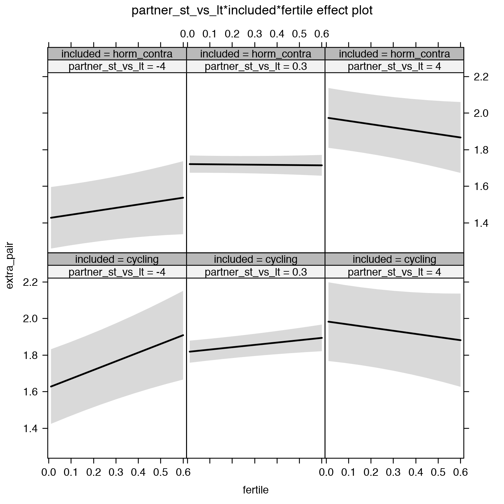

Robustness checks of ovulatory changes
Cycling women (not on hormonal birth control)
Women on hormonal birth control
Load data
# cd /usr/users/rarslan/relationship_dynamics/ && bsub -q mpi -W 48:00 -n 20 -R span[hosts=1] R -e "filebase = '3_fertility_robustness'; x = rmarkdown::render(paste0('3_fertility_robustness','.Rmd'), run_pandoc = FALSE, clean = FALSE); save(x, file = 'rob.rda'); cat(readLines(paste0(filebase,'.utf8.md')), sep = '\n')"
library(knitr)
opts_chunk$set(fig.width = 8, fig.height = 8, cache = T, warning = T, message = F, cache = F)source("0_helpers.R")
load("full_data.rdata")
diary = diary %>%
mutate(
included = included_all,
fertile = if_else(is.na(prc_stirn_b_squished), prc_stirn_b_backward_inferred, prc_stirn_b_squished),
contraceptive_methods = factor(contraceptive_method, levels =
c("barrier_or_abstinence", "fertility_awareness", "none", "hormonal")),
relationship_status_clean = factor(relationship_status_clean),
cohabitation = factor(cohabitation),
certainty_menstruation = as.numeric(as.character(certainty_menstruation)),
partner_st_vs_lt = partner_attractiveness_shortterm - partner_attractiveness_longterm
) %>% group_by(person) %>%
mutate(
fertile_mean = mean(fertile, na.rm = T)
)
opts_chunk$set(warning = F)
library(Cairo)
opts_chunk$set(dev = "CairoPNG")
diary$age_group = cut(diary$age,c(18,20,25,30,35,70), include.lowest = T)models = list()
do_model = function(model, diary) {
outcome = names(model@frame)[1]
outcome_label = recode(str_replace_all(str_replace_all(str_replace_all(outcome, "_", " "), " pair", "-pair"), " 1", ""),
"desirability" = "self-perceived desirability",
"NARQ admiration" = "narcissistic admiration",
"NARQ rivalry" = "narcissistic rivalry",
"extra-pair" = "extra-pair desire & behaviour",
"had sexual intercourse" = "sexual intercourse")
model = calculate_effects(model)
options = list(fig.path = paste0(knitr::opts_chunk$get("fig.path"), outcome, "-"),
cache.path = paste0(knitr::opts_chunk$get("cache.path"), outcome, "-"))
asis_knit_child("_robustness_model.Rmd", options = options)
}
do_moderators = function(model, diary) {
asis_knit_child("_moderators.Rmd")
}models$extra_pair = lmer(extra_pair ~ included * (menstruation + fertile) + fertile_mean + ( 1 | person), data = diary)
models$desirability_1 = lmer(desirability_1 ~ included * (menstruation + fertile) + fertile_mean + ( 1 | person), data = diary)
models$extra_pair_intimacy = glmer(extra_pair_intimacy ~ included * (menstruation + fertile) + fertile_mean + ( 1 | person), data = diary, family = binomial(link = "probit"))
models$extra_pair_sex = glmer(extra_pair_sex ~ included * (menstruation + fertile) + fertile_mean + ( 1 | person), data = diary, family = binomial(link = "probit"))
models$in_pair_desire = lmer(in_pair_desire ~ included * (menstruation + fertile) + fertile_mean + ( 1 | person), data = diary)
models$had_petting = glmer(had_petting ~ included * (menstruation + fertile) + fertile_mean + ( 1 | person), data = diary, family = binomial(link = "probit"))
models$had_sexual_intercourse = glmer(had_sexual_intercourse ~ included * (menstruation + fertile) + fertile_mean + ( 1 | person), data = diary, family = binomial(link = "probit"))
models$partner_initiated_sexual_intercourse = glmer(partner_initiated_sexual_intercourse ~ included * (menstruation + fertile) + fertile_mean + ( 1 | person), data = diary, family = binomial(link = "probit"))
models$sexual_intercourse_satisfaction = lmer(sexual_intercourse_satisfaction ~ included * (menstruation + fertile) + fertile_mean + ( 1 | person), data = diary)
models$spent_night_with_partner = glmer(spent_night_with_partner ~ included * (menstruation + fertile) + fertile_mean + ( 1 | person), data = diary, family = binomial(link = "probit"))
models$partner_mate_retention = lmer(partner_mate_retention ~ included * (menstruation + fertile) + fertile_mean + ( 1 | person), data = diary)
models$female_mate_retention = lmer(female_mate_retention ~ included * (menstruation + fertile) + fertile_mean + ( 1 | person), data = diary)
models$sexy_clothes = lmer(sexy_clothes ~ included * (menstruation + fertile) + fertile_mean + ( 1 | person), data = diary)
models$showy_clothes = lmer(showy_clothes ~ included * (menstruation + fertile) + fertile_mean + ( 1 | person), data = diary)
models$male_attention_1 = lmer(male_attention_1 ~ included * (menstruation + fertile) + fertile_mean + ( 1 | person), data = diary)
models$in_pair_public_intimacy = glmer(in_pair_public_intimacy ~ included * (menstruation + fertile) + fertile_mean + ( 1 | person), data = diary, family = binomial(link = "probit"))
models$NARQ_admiration = lmer(NARQ_admiration ~ included * (menstruation + fertile) + fertile_mean + ( 1 | person), data = diary)
models$NARQ_rivalry = lmer(NARQ_rivalry ~ included * (menstruation + fertile) + fertile_mean + ( 1 | person), data = diary)
models$self_esteem_1 = lmer(self_esteem_1 ~ included * (menstruation + fertile) + fertile_mean + ( 1 | person), data = diary)
models$female_jealousy = lmer(female_jealousy ~ included * (menstruation + fertile) + fertile_mean + ( 1 | person), data = diary)
models$relationship_satisfaction_1 = lmer(relationship_satisfaction_1 ~ included * (menstruation + fertile) + fertile_mean + ( 1 | person), data = diary)
models$communication_partner_1 = lmer(communication_partner_1 ~ included * (menstruation + fertile) + fertile_mean + ( 1 | person), data = diary)# model_summaries = parallel::mclapply(models, FUN = do_model, diary = diary, mc.cores = 20)Extra-pair
do_moderators(models$extra_pair, diary)Moderators
Partner’s physical attractiveness
Predicted fertile phase effect sizes (in red): biggest (EP desire, partner mate retention)/smallest (IP desire) when partner’s physical attractiveness is low.
model %>%
test_moderator_correction("partner_attractiveness_physical", diary)| Df | AIC | BIC | logLik | deviance | Chisq | Chi Df | Pr(>Chisq) | |
|---|---|---|---|---|---|---|---|---|
| with_main | 13 | 48494 | 48601 | -24234 | 48468 | NA | NA | NA |
| with_mod | 15 | 48494 | 48617 | -24232 | 48464 | 4.093 | 2 | 0.1292 |
| with_mod_ranef | 24 | 48175 | 48372 | -24063 | 48127 | 337.3 | 9 | 3.196e-67 |
Linear mixed model fit by REML. t-tests use Satterthwaite's method ['lmerModLmerTest']
Formula: extra_pair ~ menstruation + fertile_mean + (1 | person) + partner_attractiveness_physical +
included + fertile + menstruation:included + partner_attractiveness_physical:included +
partner_attractiveness_physical:fertile + included:fertile +
partner_attractiveness_physical:included:fertile
Data: diary
REML criterion at convergence: 48539
Scaled residuals:
Min 1Q Median 3Q Max
-4.283 -0.556 -0.148 0.406 8.003
Random effects:
Groups Name Variance Std.Dev.
person (Intercept) 0.303 0.550
Residual 0.320 0.566
Number of obs: 26680, groups: person, 1054
Fixed effects:
Estimate Std. Error df t value
(Intercept) 2.4697 0.1448 1147.8935 17.06
menstruationpre -0.0903 0.0173 25904.1276 -5.22
menstruationyes -0.0714 0.0163 25998.3334 -4.38
fertile_mean -0.0379 0.2117 1429.5329 -0.18
partner_attractiveness_physical -0.0807 0.0174 1127.8651 -4.65
includedhorm_contra -0.4750 0.1897 1118.1561 -2.50
fertile 0.4299 0.1524 26033.6683 2.82
menstruationpre:includedhorm_contra 0.0691 0.0222 25900.7970 3.11
menstruationyes:includedhorm_contra 0.0861 0.0214 25979.3941 4.03
partner_attractiveness_physical:includedhorm_contra 0.0462 0.0231 1109.2598 2.00
partner_attractiveness_physical:fertile -0.0323 0.0187 26042.9684 -1.73
includedhorm_contra:fertile -0.2947 0.2016 25994.1459 -1.46
partner_attractiveness_physical:includedhorm_contra:fertile 0.0158 0.0244 25992.9511 0.65
Pr(>|t|)
(Intercept) < 2e-16 ***
menstruationpre 0.00000018 ***
menstruationyes 0.00001208 ***
fertile_mean 0.8578
partner_attractiveness_physical 0.00000378 ***
includedhorm_contra 0.0124 *
fertile 0.0048 **
menstruationpre:includedhorm_contra 0.0019 **
menstruationyes:includedhorm_contra 0.00005663 ***
partner_attractiveness_physical:includedhorm_contra 0.0460 *
partner_attractiveness_physical:fertile 0.0842 .
includedhorm_contra:fertile 0.1438
partner_attractiveness_physical:includedhorm_contra:fertile 0.5182
---
Signif. codes: 0 '***' 0.001 '**' 0.01 '*' 0.05 '.' 0.1 ' ' 1
Linear mixed model fit by REML. t-tests use Satterthwaite's method ['lmerModLmerTest']
Formula: extra_pair ~ menstruation + fertile_mean + partner_attractiveness_physical +
included + fertile + (1 + menstruation + fertile | person) +
menstruation:included + partner_attractiveness_physical:included +
partner_attractiveness_physical:fertile + included:fertile +
partner_attractiveness_physical:included:fertile
Data: diary
REML criterion at convergence: 48198
Scaled residuals:
Min 1Q Median 3Q Max
-4.745 -0.550 -0.138 0.391 7.911
Random effects:
Groups Name Variance Std.Dev. Corr
person (Intercept) 0.3241 0.569
menstruationpre 0.0441 0.210 -0.28
menstruationyes 0.0671 0.259 -0.26 0.77
fertile 0.2899 0.538 -0.19 0.43 0.57
Residual 0.3028 0.550
Number of obs: 26680, groups: person, 1054
Fixed effects:
Estimate Std. Error df t value Pr(>|t|)
(Intercept) 2.4874 0.1449 1095.8371 17.17 < 2e-16
menstruationpre -0.0985 0.0208 763.9108 -4.74 0.0000025
menstruationyes -0.0764 0.0216 756.4077 -3.53 0.00044
fertile_mean -0.0792 0.2151 1451.8157 -0.37 0.71281
partner_attractiveness_physical -0.0815 0.0174 1057.3351 -4.69 0.0000030
includedhorm_contra -0.4837 0.1897 1054.8461 -2.55 0.01090
fertile 0.3594 0.2002 865.0281 1.79 0.07307
menstruationpre:includedhorm_contra 0.0782 0.0267 760.5212 2.93 0.00347
menstruationyes:includedhorm_contra 0.0935 0.0281 780.6452 3.33 0.00093
partner_attractiveness_physical:includedhorm_contra 0.0466 0.0231 1041.5511 2.02 0.04381
partner_attractiveness_physical:fertile -0.0248 0.0245 843.9283 -1.01 0.31270
includedhorm_contra:fertile -0.2627 0.2652 842.0180 -0.99 0.32233
partner_attractiveness_physical:includedhorm_contra:fertile 0.0130 0.0321 820.2066 0.41 0.68509
(Intercept) ***
menstruationpre ***
menstruationyes ***
fertile_mean
partner_attractiveness_physical ***
includedhorm_contra *
fertile .
menstruationpre:includedhorm_contra **
menstruationyes:includedhorm_contra ***
partner_attractiveness_physical:includedhorm_contra *
partner_attractiveness_physical:fertile
includedhorm_contra:fertile
partner_attractiveness_physical:includedhorm_contra:fertile
---
Signif. codes: 0 '***' 0.001 '**' 0.01 '*' 0.05 '.' 0.1 ' ' 1
convergence code: 0
Model failed to converge with max|grad| = 0.0145062 (tol = 0.002, component 1)
Partner’s short-term attractiveness
Predicted fertile phase effect sizes (in red): biggest (EP desire, partner mate retention)/smallest (IP desire) when partner’s short-term attractiveness is low.
model %>%
test_moderator_correction("partner_attractiveness_shortterm", diary)| Df | AIC | BIC | logLik | deviance | Chisq | Chi Df | Pr(>Chisq) | |
|---|---|---|---|---|---|---|---|---|
| with_main | 13 | 48499 | 48606 | -24237 | 48473 | NA | NA | NA |
| with_mod | 15 | 48499 | 48622 | -24235 | 48469 | 4.184 | 2 | 0.1234 |
| with_mod_ranef | 24 | 48180 | 48376 | -24066 | 48132 | 337.4 | 9 | 2.95e-67 |
Linear mixed model fit by REML. t-tests use Satterthwaite's method ['lmerModLmerTest']
Formula: extra_pair ~ menstruation + fertile_mean + (1 | person) + partner_attractiveness_shortterm +
included + fertile + menstruation:included + partner_attractiveness_shortterm:included +
partner_attractiveness_shortterm:fertile + included:fertile +
partner_attractiveness_shortterm:included:fertile
Data: diary
REML criterion at convergence: 48540
Scaled residuals:
Min 1Q Median 3Q Max
-4.286 -0.556 -0.148 0.404 8.006
Random effects:
Groups Name Variance Std.Dev.
person (Intercept) 0.305 0.552
Residual 0.320 0.566
Number of obs: 26680, groups: person, 1054
Fixed effects:
Estimate Std. Error df t value
(Intercept) 1.8176 0.0467 1317.6822 38.92
menstruationpre -0.0905 0.0173 25905.1898 -5.23
menstruationyes -0.0715 0.0163 25999.5938 -4.38
fertile_mean -0.0393 0.2123 1430.6296 -0.19
partner_attractiveness_shortterm -0.1135 0.0274 1118.6613 -4.15
includedhorm_contra -0.0987 0.0384 1266.0228 -2.57
fertile 0.1676 0.0350 25902.1041 4.78
menstruationpre:includedhorm_contra 0.0692 0.0222 25901.4245 3.12
menstruationyes:includedhorm_contra 0.0862 0.0214 25979.9698 4.03
partner_attractiveness_shortterm:includedhorm_contra 0.0578 0.0369 1099.6873 1.57
partner_attractiveness_shortterm:fertile -0.0567 0.0293 26041.5138 -1.93
includedhorm_contra:fertile -0.1662 0.0445 26007.2502 -3.74
partner_attractiveness_shortterm:includedhorm_contra:fertile 0.0402 0.0384 25978.3292 1.05
Pr(>|t|)
(Intercept) < 2e-16 ***
menstruationpre 0.00000017 ***
menstruationyes 0.00001169 ***
fertile_mean 0.85307
partner_attractiveness_shortterm 0.00003638 ***
includedhorm_contra 0.01036 *
fertile 0.00000173 ***
menstruationpre:includedhorm_contra 0.00182 **
menstruationyes:includedhorm_contra 0.00005526 ***
partner_attractiveness_shortterm:includedhorm_contra 0.11779
partner_attractiveness_shortterm:fertile 0.05312 .
includedhorm_contra:fertile 0.00019 ***
partner_attractiveness_shortterm:includedhorm_contra:fertile 0.29562
---
Signif. codes: 0 '***' 0.001 '**' 0.01 '*' 0.05 '.' 0.1 ' ' 1
Linear mixed model fit by REML. t-tests use Satterthwaite's method ['lmerModLmerTest']
Formula: extra_pair ~ menstruation + fertile_mean + partner_attractiveness_shortterm +
included + fertile + (1 + menstruation + fertile | person) +
menstruation:included + partner_attractiveness_shortterm:included +
partner_attractiveness_shortterm:fertile + included:fertile +
partner_attractiveness_shortterm:included:fertile
Data: diary
REML criterion at convergence: 48199
Scaled residuals:
Min 1Q Median 3Q Max
-4.745 -0.550 -0.138 0.389 7.913
Random effects:
Groups Name Variance Std.Dev. Corr
person (Intercept) 0.3261 0.571
menstruationpre 0.0440 0.210 -0.28
menstruationyes 0.0671 0.259 -0.25 0.77
fertile 0.2891 0.538 -0.18 0.43 0.57
Residual 0.3028 0.550
Number of obs: 26680, groups: person, 1054
Fixed effects:
Estimate Std. Error df t value Pr(>|t|)
(Intercept) 1.8296 0.0476 1329.4914 38.41 < 2e-16
menstruationpre -0.0988 0.0208 764.0150 -4.76 0.0000023
menstruationyes -0.0765 0.0216 756.0819 -3.54 0.00043
fertile_mean -0.0818 0.2157 1452.3891 -0.38 0.70462
partner_attractiveness_shortterm -0.1142 0.0273 1048.8625 -4.18 0.0000320
includedhorm_contra -0.1042 0.0398 1027.6986 -2.62 0.00889
fertile 0.1579 0.0460 829.3681 3.43 0.00062
menstruationpre:includedhorm_contra 0.0785 0.0267 760.6416 2.95 0.00333
menstruationyes:includedhorm_contra 0.0937 0.0281 780.3399 3.33 0.00090
partner_attractiveness_shortterm:includedhorm_contra 0.0594 0.0368 1031.6898 1.61 0.10708
partner_attractiveness_shortterm:fertile -0.0469 0.0387 822.0267 -1.21 0.22575
includedhorm_contra:fertile -0.1561 0.0586 810.4311 -2.66 0.00787
partner_attractiveness_shortterm:includedhorm_contra:fertile 0.0329 0.0507 802.3802 0.65 0.51755
(Intercept) ***
menstruationpre ***
menstruationyes ***
fertile_mean
partner_attractiveness_shortterm ***
includedhorm_contra **
fertile ***
menstruationpre:includedhorm_contra **
menstruationyes:includedhorm_contra ***
partner_attractiveness_shortterm:includedhorm_contra
partner_attractiveness_shortterm:fertile
includedhorm_contra:fertile **
partner_attractiveness_shortterm:includedhorm_contra:fertile
---
Signif. codes: 0 '***' 0.001 '**' 0.01 '*' 0.05 '.' 0.1 ' ' 1
convergence code: 0
Model failed to converge with max|grad| = 0.00328371 (tol = 0.002, component 1)
Partner’s short-term vs long-term attractiveness
Predicted fertile phase effect sizes (in red): biggest (EP desire, partner mate retention)/smallest (IP desire) top-right (high LT, low ST), then top-left (low LT, low ST), then bottom-left (low LT, high ST), then bottom-right (high LT/ST).
add_main = update.formula(formula(model), new = as.formula(paste0(". ~ . + partner_attractiveness_longterm * included + partner_attractiveness_shortterm * included + partner_attractiveness_longterm * partner_attractiveness_shortterm"))) # reorder so that the triptych looks nice
add_mod_formula = update.formula(update.formula(formula(model), new = . ~ . - included * fertile), new = as.formula(paste0(". ~ . + partner_attractiveness_longterm * fertile * partner_attractiveness_shortterm * included"))) # reorder so that the triptych looks nice
add_mod_formula_ranef = update.formula(update.formula(formula(model), new = . ~ . - included * fertile - (1 | person)), new = as.formula(paste0(". ~ . + partner_attractiveness_longterm * fertile * partner_attractiveness_shortterm * included + (1 + menstruation + fertile | person)"))) # reorder so that the triptych looks nice
update(model, formula = add_main) -> with_main
update(model, formula = add_mod_formula) -> with_mod
update(model, formula = add_mod_formula_ranef) -> with_mod_ranef
cat(pander(anova(with_main, with_mod, with_mod_ranef)))| Df | AIC | BIC | logLik | deviance | Chisq | Chi Df | Pr(>Chisq) | |
|---|---|---|---|---|---|---|---|---|
| with_main | 16 | 48448 | 48579 | -24208 | 48416 | NA | NA | NA |
| with_mod | 23 | 48446 | 48634 | -24200 | 48400 | 15.96 | 7 | 0.02553 |
| with_mod_ranef | 32 | 48124 | 48386 | -24030 | 48060 | 339.3 | 9 | 1.148e-67 |
effs = allEffects(with_mod)
effs = data.frame(effs$`partner_attractiveness_longterm:fertile:partner_attractiveness_shortterm:included`) %>%
filter(partner_attractiveness_longterm %in% c(-3,-0.4, 0.8),partner_attractiveness_shortterm %in% c(-2,0.4, 2))
ggplot(effs, aes(fertile, fit, ymin = lower, ymax = upper, color = included)) +
facet_grid(partner_attractiveness_shortterm ~ partner_attractiveness_longterm) +
geom_smooth(stat='identity') +
scale_color_manual(values = c("cycling" = 'red', 'horm_contra' = 'black'), guide = F) +
scale_fill_manual(values = c("cycling" = 'red', 'horm_contra' = 'black'), guide = F) +
ggtitle("Moderation", "top-to-bottom: short-term,\nleft-to-right: long-term attractiveness of the partner")+
ylab(names(model@frame)[1])print_summary(with_mod)Linear mixed model fit by REML. t-tests use Satterthwaite's method ['lmerModLmerTest']
Formula: extra_pair ~ menstruation + fertile_mean + (1 | person) + partner_attractiveness_longterm +
fertile + partner_attractiveness_shortterm + included + menstruation:included +
partner_attractiveness_longterm:fertile + partner_attractiveness_longterm:partner_attractiveness_shortterm +
fertile:partner_attractiveness_shortterm + partner_attractiveness_longterm:included +
fertile:included + partner_attractiveness_shortterm:included +
partner_attractiveness_longterm:fertile:partner_attractiveness_shortterm +
partner_attractiveness_longterm:fertile:included + partner_attractiveness_longterm:partner_attractiveness_shortterm:included +
fertile:partner_attractiveness_shortterm:included + partner_attractiveness_longterm:fertile:partner_attractiveness_shortterm:included
Data: diary
REML criterion at convergence: 48514
Scaled residuals:
Min 1Q Median 3Q Max
-4.285 -0.557 -0.148 0.403 7.987
Random effects:
Groups Name Variance Std.Dev.
person (Intercept) 0.289 0.537
Residual 0.320 0.566
Number of obs: 26680, groups: person, 1054
Fixed effects:
Estimate
(Intercept) 1.81689
menstruationpre -0.08939
menstruationyes -0.06950
fertile_mean -0.08072
partner_attractiveness_longterm -0.13238
fertile 0.16947
partner_attractiveness_shortterm -0.04705
includedhorm_contra -0.09586
menstruationpre:includedhorm_contra 0.06851
menstruationyes:includedhorm_contra 0.08475
partner_attractiveness_longterm:fertile 0.06901
partner_attractiveness_longterm:partner_attractiveness_shortterm 0.03371
fertile:partner_attractiveness_shortterm -0.08784
partner_attractiveness_longterm:includedhorm_contra -0.02470
fertile:includedhorm_contra -0.17245
partner_attractiveness_shortterm:includedhorm_contra 0.02739
partner_attractiveness_longterm:fertile:partner_attractiveness_shortterm -0.01932
partner_attractiveness_longterm:fertile:includedhorm_contra -0.00301
partner_attractiveness_longterm:partner_attractiveness_shortterm:includedhorm_contra 0.00761
fertile:partner_attractiveness_shortterm:includedhorm_contra 0.05629
partner_attractiveness_longterm:fertile:partner_attractiveness_shortterm:includedhorm_contra 0.02688
Std. Error
(Intercept) 0.04690
menstruationpre 0.01729
menstruationyes 0.01632
fertile_mean 0.20816
partner_attractiveness_longterm 0.03233
fertile 0.03654
partner_attractiveness_shortterm 0.02979
includedhorm_contra 0.03937
menstruationpre:includedhorm_contra 0.02220
menstruationyes:includedhorm_contra 0.02138
partner_attractiveness_longterm:fertile 0.03534
partner_attractiveness_longterm:partner_attractiveness_shortterm 0.02380
fertile:partner_attractiveness_shortterm 0.03203
partner_attractiveness_longterm:includedhorm_contra 0.04123
fertile:includedhorm_contra 0.04607
partner_attractiveness_shortterm:includedhorm_contra 0.03886
partner_attractiveness_longterm:fertile:partner_attractiveness_shortterm 0.02617
partner_attractiveness_longterm:fertile:includedhorm_contra 0.04481
partner_attractiveness_longterm:partner_attractiveness_shortterm:includedhorm_contra 0.03716
fertile:partner_attractiveness_shortterm:includedhorm_contra 0.04106
partner_attractiveness_longterm:fertile:partner_attractiveness_shortterm:includedhorm_contra 0.04051
df
(Intercept) 1312.71825
menstruationpre 25913.25571
menstruationyes 26009.82279
fertile_mean 1438.55429
partner_attractiveness_longterm 1114.48364
fertile 25909.66548
partner_attractiveness_shortterm 1102.58664
includedhorm_contra 1253.39319
menstruationpre:includedhorm_contra 25909.80486
menstruationyes:includedhorm_contra 25989.74406
partner_attractiveness_longterm:fertile 26107.65078
partner_attractiveness_longterm:partner_attractiveness_shortterm 1111.71715
fertile:partner_attractiveness_shortterm 26012.67484
partner_attractiveness_longterm:includedhorm_contra 1110.42474
fertile:includedhorm_contra 26011.54191
partner_attractiveness_shortterm:includedhorm_contra 1091.40437
partner_attractiveness_longterm:fertile:partner_attractiveness_shortterm 26036.70548
partner_attractiveness_longterm:fertile:includedhorm_contra 26065.14021
partner_attractiveness_longterm:partner_attractiveness_shortterm:includedhorm_contra 1109.36338
fertile:partner_attractiveness_shortterm:includedhorm_contra 25972.25941
partner_attractiveness_longterm:fertile:partner_attractiveness_shortterm:includedhorm_contra 25982.80298
t value
(Intercept) 38.74
menstruationpre -5.17
menstruationyes -4.26
fertile_mean -0.39
partner_attractiveness_longterm -4.09
fertile 4.64
partner_attractiveness_shortterm -1.58
includedhorm_contra -2.43
menstruationpre:includedhorm_contra 3.09
menstruationyes:includedhorm_contra 3.96
partner_attractiveness_longterm:fertile 1.95
partner_attractiveness_longterm:partner_attractiveness_shortterm 1.42
fertile:partner_attractiveness_shortterm -2.74
partner_attractiveness_longterm:includedhorm_contra -0.60
fertile:includedhorm_contra -3.74
partner_attractiveness_shortterm:includedhorm_contra 0.70
partner_attractiveness_longterm:fertile:partner_attractiveness_shortterm -0.74
partner_attractiveness_longterm:fertile:includedhorm_contra -0.07
partner_attractiveness_longterm:partner_attractiveness_shortterm:includedhorm_contra 0.20
fertile:partner_attractiveness_shortterm:includedhorm_contra 1.37
partner_attractiveness_longterm:fertile:partner_attractiveness_shortterm:includedhorm_contra 0.66
Pr(>|t|)
(Intercept) < 2e-16 ***
menstruationpre 0.00000024 ***
menstruationyes 0.00002061 ***
fertile_mean 0.69822
partner_attractiveness_longterm 0.00004544 ***
fertile 0.00000353 ***
partner_attractiveness_shortterm 0.11456
includedhorm_contra 0.01503 *
menstruationpre:includedhorm_contra 0.00203 **
menstruationyes:includedhorm_contra 0.00007397 ***
partner_attractiveness_longterm:fertile 0.05085 .
partner_attractiveness_longterm:partner_attractiveness_shortterm 0.15695
fertile:partner_attractiveness_shortterm 0.00610 **
partner_attractiveness_longterm:includedhorm_contra 0.54926
fertile:includedhorm_contra 0.00018 ***
partner_attractiveness_shortterm:includedhorm_contra 0.48105
partner_attractiveness_longterm:fertile:partner_attractiveness_shortterm 0.46028
partner_attractiveness_longterm:fertile:includedhorm_contra 0.94638
partner_attractiveness_longterm:partner_attractiveness_shortterm:includedhorm_contra 0.83778
fertile:partner_attractiveness_shortterm:includedhorm_contra 0.17040
partner_attractiveness_longterm:fertile:partner_attractiveness_shortterm:includedhorm_contra 0.50705
---
Signif. codes: 0 '***' 0.001 '**' 0.01 '*' 0.05 '.' 0.1 ' ' 1
print_summary(with_mod_ranef)Linear mixed model fit by REML. t-tests use Satterthwaite's method ['lmerModLmerTest']
Formula: extra_pair ~ menstruation + fertile_mean + partner_attractiveness_longterm +
fertile + partner_attractiveness_shortterm + included + (1 +
menstruation + fertile | person) + menstruation:included +
partner_attractiveness_longterm:fertile + partner_attractiveness_longterm:partner_attractiveness_shortterm +
fertile:partner_attractiveness_shortterm + partner_attractiveness_longterm:included +
fertile:included + partner_attractiveness_shortterm:included +
partner_attractiveness_longterm:fertile:partner_attractiveness_shortterm +
partner_attractiveness_longterm:fertile:included + partner_attractiveness_longterm:partner_attractiveness_shortterm:included +
fertile:partner_attractiveness_shortterm:included + partner_attractiveness_longterm:fertile:partner_attractiveness_shortterm:included
Data: diary
REML criterion at convergence: 48169
Scaled residuals:
Min 1Q Median 3Q Max
-4.751 -0.550 -0.137 0.390 7.902
Random effects:
Groups Name Variance Std.Dev. Corr
person (Intercept) 0.3102 0.557
menstruationpre 0.0440 0.210 -0.33
menstruationyes 0.0673 0.259 -0.26 0.77
fertile 0.2907 0.539 -0.17 0.44 0.57
Residual 0.3028 0.550
Number of obs: 26680, groups: person, 1054
Fixed effects:
Estimate
(Intercept) 1.82835
menstruationpre -0.09721
menstruationyes -0.07489
fertile_mean -0.12264
partner_attractiveness_longterm -0.13794
fertile 0.16187
partner_attractiveness_shortterm -0.04417
includedhorm_contra -0.10183
menstruationpre:includedhorm_contra 0.07747
menstruationyes:includedhorm_contra 0.09261
partner_attractiveness_longterm:fertile 0.07619
partner_attractiveness_longterm:partner_attractiveness_shortterm 0.03627
fertile:partner_attractiveness_shortterm -0.08443
partner_attractiveness_longterm:includedhorm_contra -0.02050
fertile:includedhorm_contra -0.16461
partner_attractiveness_shortterm:includedhorm_contra 0.02597
partner_attractiveness_longterm:fertile:partner_attractiveness_shortterm -0.02614
partner_attractiveness_longterm:fertile:includedhorm_contra -0.00920
partner_attractiveness_longterm:partner_attractiveness_shortterm:includedhorm_contra 0.00954
fertile:partner_attractiveness_shortterm:includedhorm_contra 0.05515
partner_attractiveness_longterm:fertile:partner_attractiveness_shortterm:includedhorm_contra 0.03312
Std. Error
(Intercept) 0.04782
menstruationpre 0.02073
menstruationyes 0.02166
fertile_mean 0.21177
partner_attractiveness_longterm 0.03212
fertile 0.04788
partner_attractiveness_shortterm 0.02954
includedhorm_contra 0.04063
menstruationpre:includedhorm_contra 0.02662
menstruationyes:includedhorm_contra 0.02815
partner_attractiveness_longterm:fertile 0.04566
partner_attractiveness_longterm:partner_attractiveness_shortterm 0.02358
fertile:partner_attractiveness_shortterm 0.04217
partner_attractiveness_longterm:includedhorm_contra 0.04095
fertile:includedhorm_contra 0.06066
partner_attractiveness_shortterm:includedhorm_contra 0.03853
partner_attractiveness_longterm:fertile:partner_attractiveness_shortterm 0.03424
partner_attractiveness_longterm:fertile:includedhorm_contra 0.05839
partner_attractiveness_longterm:partner_attractiveness_shortterm:includedhorm_contra 0.03683
fertile:partner_attractiveness_shortterm:includedhorm_contra 0.05409
partner_attractiveness_longterm:fertile:partner_attractiveness_shortterm:includedhorm_contra 0.05296
df
(Intercept) 1331.76956
menstruationpre 767.40781
menstruationyes 759.40956
fertile_mean 1465.24659
partner_attractiveness_longterm 1034.50464
fertile 860.24891
partner_attractiveness_shortterm 1028.66862
includedhorm_contra 1047.93309
menstruationpre:includedhorm_contra 764.09986
menstruationyes:includedhorm_contra 783.42955
partner_attractiveness_longterm:fertile 866.88316
partner_attractiveness_longterm:partner_attractiveness_shortterm 1024.81938
fertile:partner_attractiveness_shortterm 790.96419
partner_attractiveness_longterm:includedhorm_contra 1035.84858
fertile:includedhorm_contra 833.96528
partner_attractiveness_shortterm:includedhorm_contra 1019.61437
partner_attractiveness_longterm:fertile:partner_attractiveness_shortterm 867.53420
partner_attractiveness_longterm:fertile:includedhorm_contra 841.99892
partner_attractiveness_longterm:partner_attractiveness_shortterm:includedhorm_contra 1033.00094
fertile:partner_attractiveness_shortterm:includedhorm_contra 785.87626
partner_attractiveness_longterm:fertile:partner_attractiveness_shortterm:includedhorm_contra 847.12107
t value
(Intercept) 38.23
menstruationpre -4.69
menstruationyes -3.46
fertile_mean -0.58
partner_attractiveness_longterm -4.29
fertile 3.38
partner_attractiveness_shortterm -1.50
includedhorm_contra -2.51
menstruationpre:includedhorm_contra 2.91
menstruationyes:includedhorm_contra 3.29
partner_attractiveness_longterm:fertile 1.67
partner_attractiveness_longterm:partner_attractiveness_shortterm 1.54
fertile:partner_attractiveness_shortterm -2.00
partner_attractiveness_longterm:includedhorm_contra -0.50
fertile:includedhorm_contra -2.71
partner_attractiveness_shortterm:includedhorm_contra 0.67
partner_attractiveness_longterm:fertile:partner_attractiveness_shortterm -0.76
partner_attractiveness_longterm:fertile:includedhorm_contra -0.16
partner_attractiveness_longterm:partner_attractiveness_shortterm:includedhorm_contra 0.26
fertile:partner_attractiveness_shortterm:includedhorm_contra 1.02
partner_attractiveness_longterm:fertile:partner_attractiveness_shortterm:includedhorm_contra 0.63
Pr(>|t|)
(Intercept) < 2e-16 ***
menstruationpre 0.0000033 ***
menstruationyes 0.00057 ***
fertile_mean 0.56259
partner_attractiveness_longterm 0.0000191 ***
fertile 0.00076 ***
partner_attractiveness_shortterm 0.13517
includedhorm_contra 0.01235 *
menstruationpre:includedhorm_contra 0.00371 **
menstruationyes:includedhorm_contra 0.00105 **
partner_attractiveness_longterm:fertile 0.09553 .
partner_attractiveness_longterm:partner_attractiveness_shortterm 0.12438
fertile:partner_attractiveness_shortterm 0.04558 *
partner_attractiveness_longterm:includedhorm_contra 0.61676
fertile:includedhorm_contra 0.00679 **
partner_attractiveness_shortterm:includedhorm_contra 0.50046
partner_attractiveness_longterm:fertile:partner_attractiveness_shortterm 0.44552
partner_attractiveness_longterm:fertile:includedhorm_contra 0.87484
partner_attractiveness_longterm:partner_attractiveness_shortterm:includedhorm_contra 0.79571
fertile:partner_attractiveness_shortterm:includedhorm_contra 0.30825
partner_attractiveness_longterm:fertile:partner_attractiveness_shortterm:includedhorm_contra 0.53180
---
Signif. codes: 0 '***' 0.001 '**' 0.01 '*' 0.05 '.' 0.1 ' ' 1
convergence code: 0
Model failed to converge with max|grad| = 0.00248466 (tol = 0.002, component 1)
Relative attractiveness to self
whole MV and MV_P scale
Predicted fertile phase effect sizes (in red): biggest (EP desire, partner mate retention)/smallest (IP desire) when partner’s relative attractiveness is low.
three item subsets of the MV scales
model %>%
test_moderator_correction("partner_attractiveness_rel_to_self_MV_short", diary)| Df | AIC | BIC | logLik | deviance | Chisq | Chi Df | Pr(>Chisq) | |
|---|---|---|---|---|---|---|---|---|
| with_main | 13 | 48472 | 48579 | -24223 | 48446 | NA | NA | NA |
| with_mod | 15 | 48468 | 48590 | -24219 | 48438 | 8.639 | 2 | 0.01331 |
| with_mod_ranef | 24 | 48151 | 48348 | -24052 | 48103 | 334.4 | 9 | 1.303e-66 |
Linear mixed model fit by REML. t-tests use Satterthwaite's method ['lmerModLmerTest']
Formula:
extra_pair ~ menstruation + fertile_mean + (1 | person) + partner_attractiveness_rel_to_self_MV_short +
included + fertile + menstruation:included + partner_attractiveness_rel_to_self_MV_short:included +
partner_attractiveness_rel_to_self_MV_short:fertile + included:fertile +
partner_attractiveness_rel_to_self_MV_short:included:fertile
Data: diary
REML criterion at convergence: 48509
Scaled residuals:
Min 1Q Median 3Q Max
-4.282 -0.557 -0.149 0.405 8.005
Random effects:
Groups Name Variance Std.Dev.
person (Intercept) 0.296 0.544
Residual 0.320 0.566
Number of obs: 26680, groups: person, 1054
Fixed effects:
Estimate Std. Error df
(Intercept) 1.8261 0.0460 1323.4030
menstruationpre -0.0900 0.0173 25910.7882
menstruationyes -0.0712 0.0163 26006.3676
fertile_mean -0.0681 0.2098 1434.4781
partner_attractiveness_rel_to_self_MV_short -0.1338 0.0275 1104.7799
includedhorm_contra -0.1045 0.0378 1271.8529
fertile 0.1660 0.0350 25903.5343
menstruationpre:includedhorm_contra 0.0686 0.0222 25906.7191
menstruationyes:includedhorm_contra 0.0861 0.0214 25986.7315
partner_attractiveness_rel_to_self_MV_short:includedhorm_contra 0.0192 0.0363 1100.3898
partner_attractiveness_rel_to_self_MV_short:fertile -0.0856 0.0294 25962.8064
includedhorm_contra:fertile -0.1669 0.0443 26011.6066
partner_attractiveness_rel_to_self_MV_short:includedhorm_contra:fertile 0.0765 0.0385 25954.2589
t value Pr(>|t|)
(Intercept) 39.66 < 2e-16 ***
menstruationpre -5.21 0.00000019 ***
menstruationyes -4.37 0.00001263 ***
fertile_mean -0.32 0.74560
partner_attractiveness_rel_to_self_MV_short -4.86 0.00000135 ***
includedhorm_contra -2.76 0.00578 **
fertile 4.75 0.00000209 ***
menstruationpre:includedhorm_contra 3.09 0.00202 **
menstruationyes:includedhorm_contra 4.03 0.00005647 ***
partner_attractiveness_rel_to_self_MV_short:includedhorm_contra 0.53 0.59758
partner_attractiveness_rel_to_self_MV_short:fertile -2.92 0.00354 **
includedhorm_contra:fertile -3.77 0.00017 ***
partner_attractiveness_rel_to_self_MV_short:includedhorm_contra:fertile 1.99 0.04683 *
---
Signif. codes: 0 '***' 0.001 '**' 0.01 '*' 0.05 '.' 0.1 ' ' 1
Linear mixed model fit by REML. t-tests use Satterthwaite's method ['lmerModLmerTest']
Formula: extra_pair ~ menstruation + fertile_mean + partner_attractiveness_rel_to_self_MV_short +
included + fertile + (1 + menstruation + fertile | person) +
menstruation:included + partner_attractiveness_rel_to_self_MV_short:included +
partner_attractiveness_rel_to_self_MV_short:fertile + included:fertile +
partner_attractiveness_rel_to_self_MV_short:included:fertile
Data: diary
REML criterion at convergence: 48171
Scaled residuals:
Min 1Q Median 3Q Max
-4.749 -0.550 -0.138 0.389 7.911
Random effects:
Groups Name Variance Std.Dev. Corr
person (Intercept) 0.3189 0.565
menstruationpre 0.0441 0.210 -0.29
menstruationyes 0.0669 0.259 -0.26 0.77
fertile 0.2875 0.536 -0.20 0.43 0.57
Residual 0.3029 0.550
Number of obs: 26680, groups: person, 1054
Fixed effects:
Estimate Std. Error df
(Intercept) 1.8383 0.0470 1334.1579
menstruationpre -0.0990 0.0208 763.0110
menstruationyes -0.0766 0.0216 756.9732
fertile_mean -0.1100 0.2132 1456.1079
partner_attractiveness_rel_to_self_MV_short -0.1327 0.0275 1033.7579
includedhorm_contra -0.1103 0.0392 1019.4807
fertile 0.1561 0.0459 829.3011
menstruationpre:includedhorm_contra 0.0784 0.0267 759.6681
menstruationyes:includedhorm_contra 0.0939 0.0281 781.4561
partner_attractiveness_rel_to_self_MV_short:includedhorm_contra 0.0199 0.0363 1032.3654
partner_attractiveness_rel_to_self_MV_short:fertile -0.0710 0.0384 836.4099
includedhorm_contra:fertile -0.1557 0.0583 807.4917
partner_attractiveness_rel_to_self_MV_short:includedhorm_contra:fertile 0.0459 0.0505 827.4149
t value Pr(>|t|)
(Intercept) 39.09 < 2e-16 ***
menstruationpre -4.77 0.0000022 ***
menstruationyes -3.54 0.00042 ***
fertile_mean -0.52 0.60603
partner_attractiveness_rel_to_self_MV_short -4.82 0.0000016 ***
includedhorm_contra -2.81 0.00502 **
fertile 3.40 0.00070 ***
menstruationpre:includedhorm_contra 2.94 0.00337 **
menstruationyes:includedhorm_contra 3.34 0.00087 ***
partner_attractiveness_rel_to_self_MV_short:includedhorm_contra 0.55 0.58497
partner_attractiveness_rel_to_self_MV_short:fertile -1.85 0.06472 .
includedhorm_contra:fertile -2.67 0.00775 **
partner_attractiveness_rel_to_self_MV_short:includedhorm_contra:fertile 0.91 0.36352
---
Signif. codes: 0 '***' 0.001 '**' 0.01 '*' 0.05 '.' 0.1 ' ' 1
convergence code: 0
Model failed to converge with max|grad| = 0.00437938 (tol = 0.002, component 1)
model %>%
test_moderator_correction("partner_attractiveness_rel_to_self", diary)| Df | AIC | BIC | logLik | deviance | Chisq | Chi Df | Pr(>Chisq) | |
|---|---|---|---|---|---|---|---|---|
| with_main | 13 | 48461 | 48567 | -24217 | 48435 | NA | NA | NA |
| with_mod | 15 | 48457 | 48579 | -24213 | 48427 | 8.214 | 2 | 0.01646 |
| with_mod_ranef | 24 | 48141 | 48337 | -24046 | 48093 | 334 | 9 | 1.6e-66 |
Linear mixed model fit by REML. t-tests use Satterthwaite's method ['lmerModLmerTest']
Formula: extra_pair ~ menstruation + fertile_mean + (1 | person) + partner_attractiveness_rel_to_self +
included + fertile + menstruation:included + partner_attractiveness_rel_to_self:included +
partner_attractiveness_rel_to_self:fertile + included:fertile +
partner_attractiveness_rel_to_self:included:fertile
Data: diary
REML criterion at convergence: 48498
Scaled residuals:
Min 1Q Median 3Q Max
-4.282 -0.557 -0.148 0.404 8.007
Random effects:
Groups Name Variance Std.Dev.
person (Intercept) 0.293 0.541
Residual 0.320 0.566
Number of obs: 26680, groups: person, 1054
Fixed effects:
Estimate Std. Error df t value
(Intercept) 1.8212 0.0459 1325.4574 39.71
menstruationpre -0.0901 0.0173 25913.4633 -5.21
menstruationyes -0.0715 0.0163 26009.0147 -4.39
fertile_mean -0.0691 0.2089 1437.2761 -0.33
partner_attractiveness_rel_to_self -0.1561 0.0274 1103.7897 -5.70
includedhorm_contra -0.0980 0.0377 1273.9116 -2.60
fertile 0.1653 0.0350 25904.6056 4.72
menstruationpre:includedhorm_contra 0.0687 0.0222 25909.4194 3.09
menstruationyes:includedhorm_contra 0.0864 0.0214 25989.5356 4.04
partner_attractiveness_rel_to_self:includedhorm_contra 0.0386 0.0363 1102.0396 1.06
partner_attractiveness_rel_to_self:fertile -0.0813 0.0294 25975.2088 -2.77
includedhorm_contra:fertile -0.1657 0.0443 26013.7651 -3.74
partner_attractiveness_rel_to_self:includedhorm_contra:fertile 0.0627 0.0386 25964.2920 1.62
Pr(>|t|)
(Intercept) < 2e-16 ***
menstruationpre 0.000000189 ***
menstruationyes 0.000011488 ***
fertile_mean 0.74080
partner_attractiveness_rel_to_self 0.000000015 ***
includedhorm_contra 0.00935 **
fertile 0.000002345 ***
menstruationpre:includedhorm_contra 0.00197 **
menstruationyes:includedhorm_contra 0.000052653 ***
partner_attractiveness_rel_to_self:includedhorm_contra 0.28777
partner_attractiveness_rel_to_self:fertile 0.00565 **
includedhorm_contra:fertile 0.00019 ***
partner_attractiveness_rel_to_self:includedhorm_contra:fertile 0.10426
---
Signif. codes: 0 '***' 0.001 '**' 0.01 '*' 0.05 '.' 0.1 ' ' 1
Linear mixed model fit by REML. t-tests use Satterthwaite's method ['lmerModLmerTest']
Formula: extra_pair ~ menstruation + fertile_mean + partner_attractiveness_rel_to_self +
included + fertile + (1 + menstruation + fertile | person) +
menstruation:included + partner_attractiveness_rel_to_self:included +
partner_attractiveness_rel_to_self:fertile + included:fertile +
partner_attractiveness_rel_to_self:included:fertile
Data: diary
REML criterion at convergence: 48160
Scaled residuals:
Min 1Q Median 3Q Max
-4.747 -0.551 -0.137 0.389 7.911
Random effects:
Groups Name Variance Std.Dev. Corr
person (Intercept) 0.3151 0.561
menstruationpre 0.0442 0.210 -0.29
menstruationyes 0.0669 0.259 -0.25 0.77
fertile 0.2875 0.536 -0.20 0.43 0.57
Residual 0.3029 0.550
Number of obs: 26680, groups: person, 1054
Fixed effects:
Estimate Std. Error df t value
(Intercept) 1.8334 0.0468 1335.5521 39.14
menstruationpre -0.0992 0.0208 763.2183 -4.77
menstruationyes -0.0769 0.0216 757.4875 -3.56
fertile_mean -0.1102 0.2123 1458.5249 -0.52
partner_attractiveness_rel_to_self -0.1551 0.0274 1032.1839 -5.66
includedhorm_contra -0.1039 0.0391 1019.3369 -2.66
fertile 0.1553 0.0459 829.9256 3.38
menstruationpre:includedhorm_contra 0.0785 0.0267 759.8815 2.94
menstruationyes:includedhorm_contra 0.0941 0.0281 781.9868 3.35
partner_attractiveness_rel_to_self:includedhorm_contra 0.0394 0.0363 1032.9333 1.09
partner_attractiveness_rel_to_self:fertile -0.0661 0.0383 839.5684 -1.72
includedhorm_contra:fertile -0.1545 0.0583 808.1681 -2.65
partner_attractiveness_rel_to_self:includedhorm_contra:fertile 0.0349 0.0505 827.1803 0.69
Pr(>|t|)
(Intercept) < 2e-16 ***
menstruationpre 0.000002183 ***
menstruationyes 0.00040 ***
fertile_mean 0.60385
partner_attractiveness_rel_to_self 0.000000019 ***
includedhorm_contra 0.00795 **
fertile 0.00075 ***
menstruationpre:includedhorm_contra 0.00335 **
menstruationyes:includedhorm_contra 0.00085 ***
partner_attractiveness_rel_to_self:includedhorm_contra 0.27787
partner_attractiveness_rel_to_self:fertile 0.08506 .
includedhorm_contra:fertile 0.00825 **
partner_attractiveness_rel_to_self:includedhorm_contra:fertile 0.48960
---
Signif. codes: 0 '***' 0.001 '**' 0.01 '*' 0.05 '.' 0.1 ' ' 1
convergence code: 0
Model failed to converge with max|grad| = 0.0044566 (tol = 0.002, component 1)
Partner’s shortterm attractiveness, alternative specification
model %>%
test_moderator_correction("partner_attractiveness_shortterm_v2", diary)| Df | AIC | BIC | logLik | deviance | Chisq | Chi Df | Pr(>Chisq) | |
|---|---|---|---|---|---|---|---|---|
| with_main | 13 | 48502 | 48609 | -24238 | 48476 | NA | NA | NA |
| with_mod | 15 | 48504 | 48627 | -24237 | 48474 | 2.683 | 2 | 0.2614 |
| with_mod_ranef | 24 | 48183 | 48380 | -24068 | 48135 | 338.2 | 9 | 2.01e-67 |
Linear mixed model fit by REML. t-tests use Satterthwaite's method ['lmerModLmerTest']
Formula: extra_pair ~ menstruation + fertile_mean + (1 | person) + partner_attractiveness_shortterm_v2 +
included + fertile + menstruation:included + partner_attractiveness_shortterm_v2:included +
partner_attractiveness_shortterm_v2:fertile + included:fertile +
partner_attractiveness_shortterm_v2:included:fertile
Data: diary
REML criterion at convergence: 48545
Scaled residuals:
Min 1Q Median 3Q Max
-4.284 -0.556 -0.149 0.405 8.004
Random effects:
Groups Name Variance Std.Dev.
person (Intercept) 0.305 0.552
Residual 0.320 0.566
Number of obs: 26680, groups: person, 1054
Fixed effects:
Estimate Std. Error df t value
(Intercept) 1.8219 0.0466 1314.8475 39.06
menstruationpre -0.0901 0.0173 25902.0875 -5.21
menstruationyes -0.0710 0.0163 25995.8567 -4.36
fertile_mean -0.0279 0.2124 1426.5587 -0.13
partner_attractiveness_shortterm_v2 -0.1173 0.0276 1112.0301 -4.26
includedhorm_contra -0.1095 0.0383 1264.5052 -2.86
fertile 0.1719 0.0349 25897.8131 4.92
menstruationpre:includedhorm_contra 0.0689 0.0222 25898.7040 3.10
menstruationyes:includedhorm_contra 0.0857 0.0214 25976.6433 4.01
partner_attractiveness_shortterm_v2:includedhorm_contra 0.0833 0.0366 1098.2029 2.27
partner_attractiveness_shortterm_v2:fertile -0.0431 0.0292 26004.8500 -1.47
includedhorm_contra:fertile -0.1717 0.0443 26004.3045 -3.88
partner_attractiveness_shortterm_v2:includedhorm_contra:fertile 0.0257 0.0380 25967.9436 0.68
Pr(>|t|)
(Intercept) < 2e-16 ***
menstruationpre 0.00000019 ***
menstruationyes 0.00001325 ***
fertile_mean 0.89555
partner_attractiveness_shortterm_v2 0.00002251 ***
includedhorm_contra 0.00432 **
fertile 0.00000086 ***
menstruationpre:includedhorm_contra 0.00193 **
menstruationyes:includedhorm_contra 0.00006064 ***
partner_attractiveness_shortterm_v2:includedhorm_contra 0.02318 *
partner_attractiveness_shortterm_v2:fertile 0.14042
includedhorm_contra:fertile 0.00011 ***
partner_attractiveness_shortterm_v2:includedhorm_contra:fertile 0.49863
---
Signif. codes: 0 '***' 0.001 '**' 0.01 '*' 0.05 '.' 0.1 ' ' 1
Linear mixed model fit by REML. t-tests use Satterthwaite's method ['lmerModLmerTest']
Formula: extra_pair ~ menstruation + fertile_mean + partner_attractiveness_shortterm_v2 +
included + fertile + (1 + menstruation + fertile | person) +
menstruation:included + partner_attractiveness_shortterm_v2:included +
partner_attractiveness_shortterm_v2:fertile + included:fertile +
partner_attractiveness_shortterm_v2:included:fertile
Data: diary
REML criterion at convergence: 48203
Scaled residuals:
Min 1Q Median 3Q Max
-4.747 -0.550 -0.136 0.390 7.911
Random effects:
Groups Name Variance Std.Dev. Corr
person (Intercept) 0.3271 0.572
menstruationpre 0.0441 0.210 -0.29
menstruationyes 0.0671 0.259 -0.26 0.77
fertile 0.2898 0.538 -0.18 0.43 0.57
Residual 0.3028 0.550
Number of obs: 26680, groups: person, 1054
Fixed effects:
Estimate Std. Error df t value
(Intercept) 1.8339 0.0476 1326.5546 38.53
menstruationpre -0.0985 0.0208 763.7169 -4.74
menstruationyes -0.0761 0.0216 755.9617 -3.52
fertile_mean -0.0697 0.2159 1448.3875 -0.32
partner_attractiveness_shortterm_v2 -0.1181 0.0275 1043.2352 -4.29
includedhorm_contra -0.1149 0.0396 1021.9049 -2.90
fertile 0.1616 0.0459 824.5459 3.52
menstruationpre:includedhorm_contra 0.0781 0.0267 760.3591 2.93
menstruationyes:includedhorm_contra 0.0932 0.0281 780.2527 3.31
partner_attractiveness_shortterm_v2:includedhorm_contra 0.0844 0.0366 1031.1422 2.31
partner_attractiveness_shortterm_v2:fertile -0.0307 0.0385 830.0778 -0.80
includedhorm_contra:fertile -0.1611 0.0584 804.3688 -2.76
partner_attractiveness_shortterm_v2:includedhorm_contra:fertile 0.0200 0.0502 806.7977 0.40
Pr(>|t|)
(Intercept) < 2e-16 ***
menstruationpre 0.0000026 ***
menstruationyes 0.00046 ***
fertile_mean 0.74671
partner_attractiveness_shortterm_v2 0.0000195 ***
includedhorm_contra 0.00382 **
fertile 0.00045 ***
menstruationpre:includedhorm_contra 0.00352 **
menstruationyes:includedhorm_contra 0.00096 ***
partner_attractiveness_shortterm_v2:includedhorm_contra 0.02125 *
partner_attractiveness_shortterm_v2:fertile 0.42455
includedhorm_contra:fertile 0.00594 **
partner_attractiveness_shortterm_v2:includedhorm_contra:fertile 0.69076
---
Signif. codes: 0 '***' 0.001 '**' 0.01 '*' 0.05 '.' 0.1 ' ' 1
convergence code: 0
Model failed to converge with max|grad| = 0.00687819 (tol = 0.002, component 1)
Partner’s global attractiveness
model %>%
test_moderator_correction("partner_attractiveness_global", diary)| Df | AIC | BIC | logLik | deviance | Chisq | Chi Df | Pr(>Chisq) | |
|---|---|---|---|---|---|---|---|---|
| with_main | 13 | 48522 | 48629 | -24248 | 48496 | NA | NA | NA |
| with_mod | 15 | 48525 | 48648 | -24248 | 48495 | 1.031 | 2 | 0.5971 |
| with_mod_ranef | 24 | 48203 | 48399 | -24077 | 48155 | 340.8 | 9 | 5.487e-68 |
Linear mixed model fit by REML. t-tests use Satterthwaite's method ['lmerModLmerTest']
Formula: extra_pair ~ menstruation + fertile_mean + (1 | person) + partner_attractiveness_global +
included + fertile + menstruation:included + partner_attractiveness_global:included +
partner_attractiveness_global:fertile + included:fertile +
partner_attractiveness_global:included:fertile
Data: diary
REML criterion at convergence: 48567
Scaled residuals:
Min 1Q Median 3Q Max
-4.287 -0.556 -0.149 0.405 8.009
Random effects:
Groups Name Variance Std.Dev.
person (Intercept) 0.311 0.557
Residual 0.320 0.566
Number of obs: 26680, groups: person, 1054
Fixed effects:
Estimate Std. Error df t value
(Intercept) 1.83307 0.04693 1307.91974 39.06
menstruationpre -0.09042 0.01730 25896.26256 -5.23
menstruationyes -0.07115 0.01631 25990.03658 -4.36
fertile_mean -0.04867 0.21402 1417.43232 -0.23
partner_attractiveness_global -0.04613 0.02807 1086.82125 -1.64
includedhorm_contra -0.11812 0.03852 1255.66087 -3.07
fertile 0.17329 0.03491 25891.43731 4.96
menstruationpre:includedhorm_contra 0.06921 0.02221 25892.54334 3.12
menstruationyes:includedhorm_contra 0.08578 0.02138 25971.08193 4.01
partner_attractiveness_global:includedhorm_contra 0.06838 0.03686 1075.45242 1.86
partner_attractiveness_global:fertile -0.00137 0.02895 25902.30954 -0.05
includedhorm_contra:fertile -0.17460 0.04425 25996.32291 -3.95
partner_attractiveness_global:includedhorm_contra:fertile -0.02232 0.03720 25887.89595 -0.60
Pr(>|t|)
(Intercept) < 2e-16 ***
menstruationpre 0.00000017 ***
menstruationyes 0.00001286 ***
fertile_mean 0.8201
partner_attractiveness_global 0.1006
includedhorm_contra 0.0022 **
fertile 0.00000070 ***
menstruationpre:includedhorm_contra 0.0018 **
menstruationyes:includedhorm_contra 0.00006009 ***
partner_attractiveness_global:includedhorm_contra 0.0639 .
partner_attractiveness_global:fertile 0.9623
includedhorm_contra:fertile 0.00007971 ***
partner_attractiveness_global:includedhorm_contra:fertile 0.5484
---
Signif. codes: 0 '***' 0.001 '**' 0.01 '*' 0.05 '.' 0.1 ' ' 1
Linear mixed model fit by REML. t-tests use Satterthwaite's method ['lmerModLmerTest']
Formula: extra_pair ~ menstruation + fertile_mean + partner_attractiveness_global +
included + fertile + (1 + menstruation + fertile | person) +
menstruation:included + partner_attractiveness_global:included +
partner_attractiveness_global:fertile + included:fertile +
partner_attractiveness_global:included:fertile
Data: diary
REML criterion at convergence: 48222
Scaled residuals:
Min 1Q Median 3Q Max
-4.745 -0.550 -0.137 0.389 7.912
Random effects:
Groups Name Variance Std.Dev. Corr
person (Intercept) 0.3323 0.576
menstruationpre 0.0442 0.210 -0.29
menstruationyes 0.0673 0.259 -0.26 0.77
fertile 0.2908 0.539 -0.18 0.42 0.57
Residual 0.3029 0.550
Number of obs: 26680, groups: person, 1054
Fixed effects:
Estimate Std. Error df t value Pr(>|t|)
(Intercept) 1.84560 0.04787 1320.12138 38.56 < 2e-16
menstruationpre -0.09911 0.02079 763.09381 -4.77 0.0000022
menstruationyes -0.07683 0.02165 756.50427 -3.55 0.00041
fertile_mean -0.09256 0.21749 1439.28272 -0.43 0.67047
partner_attractiveness_global -0.04385 0.02798 1021.98723 -1.57 0.11737
includedhorm_contra -0.12380 0.03985 1015.62885 -3.11 0.00194
fertile 0.16233 0.04590 823.90842 3.54 0.00043
menstruationpre:includedhorm_contra 0.07866 0.02669 759.76373 2.95 0.00330
menstruationyes:includedhorm_contra 0.09370 0.02814 780.88732 3.33 0.00091
partner_attractiveness_global:includedhorm_contra 0.06809 0.03672 1011.58730 1.85 0.06401
partner_attractiveness_global:fertile 0.00134 0.03791 834.06635 0.04 0.97180
includedhorm_contra:fertile -0.16273 0.05838 802.59623 -2.79 0.00544
partner_attractiveness_global:includedhorm_contra:fertile -0.02883 0.04902 799.82787 -0.59 0.55662
(Intercept) ***
menstruationpre ***
menstruationyes ***
fertile_mean
partner_attractiveness_global
includedhorm_contra **
fertile ***
menstruationpre:includedhorm_contra **
menstruationyes:includedhorm_contra ***
partner_attractiveness_global:includedhorm_contra .
partner_attractiveness_global:fertile
includedhorm_contra:fertile **
partner_attractiveness_global:includedhorm_contra:fertile
---
Signif. codes: 0 '***' 0.001 '**' 0.01 '*' 0.05 '.' 0.1 ' ' 1
convergence code: 0
Model failed to converge with max|grad| = 0.00220303 (tol = 0.002, component 1)
Partner’s longterm attractiveness
model %>%
test_moderator_correction("partner_attractiveness_longterm", diary)| Df | AIC | BIC | logLik | deviance | Chisq | Chi Df | Pr(>Chisq) | |
|---|---|---|---|---|---|---|---|---|
| with_main | 13 | 48452 | 48559 | -24213 | 48426 | NA | NA | NA |
| with_mod | 15 | 48449 | 48572 | -24210 | 48419 | 6.762 | 2 | 0.03401 |
| with_mod_ranef | 24 | 48123 | 48320 | -24038 | 48075 | 344 | 9 | 1.162e-68 |
Linear mixed model fit by REML. t-tests use Satterthwaite's method ['lmerModLmerTest']
Formula: extra_pair ~ menstruation + fertile_mean + (1 | person) + partner_attractiveness_longterm +
included + fertile + menstruation:included + partner_attractiveness_longterm:included +
partner_attractiveness_longterm:fertile + included:fertile +
partner_attractiveness_longterm:included:fertile
Data: diary
REML criterion at convergence: 48490
Scaled residuals:
Min 1Q Median 3Q Max
-4.298 -0.557 -0.148 0.403 7.997
Random effects:
Groups Name Variance Std.Dev.
person (Intercept) 0.29 0.538
Residual 0.32 0.566
Number of obs: 26680, groups: person, 1054
Fixed effects:
Estimate Std. Error df t value
(Intercept) 1.84183 0.04562 1328.65741 40.37
menstruationpre -0.08964 0.01729 25914.41288 -5.18
menstruationyes -0.06976 0.01632 26011.33276 -4.28
fertile_mean -0.11011 0.20832 1439.66546 -0.53
partner_attractiveness_longterm -0.17146 0.02766 1139.25634 -6.20
includedhorm_contra -0.10852 0.03744 1277.83708 -2.90
fertile 0.17152 0.03491 25910.74583 4.91
menstruationpre:includedhorm_contra 0.06863 0.02220 25911.13054 3.09
menstruationyes:includedhorm_contra 0.08497 0.02138 25991.62506 3.97
partner_attractiveness_longterm:includedhorm_contra 0.00807 0.03718 1126.56964 0.22
partner_attractiveness_longterm:fertile 0.04400 0.03095 26139.80598 1.42
includedhorm_contra:fertile -0.17694 0.04429 26020.85045 -4.00
partner_attractiveness_longterm:includedhorm_contra:fertile 0.01433 0.04094 26078.36880 0.35
Pr(>|t|)
(Intercept) < 2e-16 ***
menstruationpre 0.0000002200 ***
menstruationyes 0.0000191496 ***
fertile_mean 0.5972
partner_attractiveness_longterm 0.0000000008 ***
includedhorm_contra 0.0038 **
fertile 0.0000009004 ***
menstruationpre:includedhorm_contra 0.0020 **
menstruationyes:includedhorm_contra 0.0000708542 ***
partner_attractiveness_longterm:includedhorm_contra 0.8283
partner_attractiveness_longterm:fertile 0.1552
includedhorm_contra:fertile 0.0000648508 ***
partner_attractiveness_longterm:includedhorm_contra:fertile 0.7264
---
Signif. codes: 0 '***' 0.001 '**' 0.01 '*' 0.05 '.' 0.1 ' ' 1
Linear mixed model fit by REML. t-tests use Satterthwaite's method ['lmerModLmerTest']
Formula: extra_pair ~ menstruation + fertile_mean + partner_attractiveness_longterm +
included + fertile + (1 + menstruation + fertile | person) +
menstruation:included + partner_attractiveness_longterm:included +
partner_attractiveness_longterm:fertile + included:fertile +
partner_attractiveness_longterm:included:fertile
Data: diary
REML criterion at convergence: 48143
Scaled residuals:
Min 1Q Median 3Q Max
-4.750 -0.551 -0.136 0.390 7.906
Random effects:
Groups Name Variance Std.Dev. Corr
person (Intercept) 0.3116 0.558
menstruationpre 0.0441 0.210 -0.33
menstruationyes 0.0673 0.259 -0.26 0.77
fertile 0.2908 0.539 -0.17 0.44 0.57
Residual 0.3028 0.550
Number of obs: 26680, groups: person, 1054
Fixed effects:
Estimate Std. Error df t value
(Intercept) 1.8541 0.0466 1341.4605 39.79
menstruationpre -0.0977 0.0207 767.2133 -4.71
menstruationyes -0.0753 0.0216 759.8877 -3.48
fertile_mean -0.1509 0.2119 1465.9887 -0.71
partner_attractiveness_longterm -0.1772 0.0275 1060.9506 -6.44
includedhorm_contra -0.1145 0.0388 1023.8669 -2.95
fertile 0.1599 0.0459 824.8345 3.48
menstruationpre:includedhorm_contra 0.0779 0.0266 763.8979 2.93
menstruationyes:includedhorm_contra 0.0930 0.0282 783.9702 3.30
partner_attractiveness_longterm:includedhorm_contra 0.0125 0.0369 1052.8170 0.34
partner_attractiveness_longterm:fertile 0.0563 0.0401 898.1321 1.41
includedhorm_contra:fertile -0.1645 0.0584 804.7453 -2.82
partner_attractiveness_longterm:includedhorm_contra:fertile 0.0033 0.0534 858.9192 0.06
Pr(>|t|)
(Intercept) < 2e-16 ***
menstruationpre 0.00000295015 ***
menstruationyes 0.00053 ***
fertile_mean 0.47660
partner_attractiveness_longterm 0.00000000018 ***
includedhorm_contra 0.00325 **
fertile 0.00052 ***
menstruationpre:includedhorm_contra 0.00354 **
menstruationyes:includedhorm_contra 0.00099 ***
partner_attractiveness_longterm:includedhorm_contra 0.73507
partner_attractiveness_longterm:fertile 0.16007
includedhorm_contra:fertile 0.00499 **
partner_attractiveness_longterm:includedhorm_contra:fertile 0.95084
---
Signif. codes: 0 '***' 0.001 '**' 0.01 '*' 0.05 '.' 0.1 ' ' 1
convergence code: 0
Model failed to converge with max|grad| = 0.00462398 (tol = 0.002, component 1)
Partner’s short-term vs long-term attractiveness
We also test this specification of the short-term vs. long-term moderator prediction, but we think this is a suboptimal way to test it.
model %>%
test_moderator_correction("partner_st_vs_lt", diary)| Df | AIC | BIC | logLik | deviance | Chisq | Chi Df | Pr(>Chisq) | |
|---|---|---|---|---|---|---|---|---|
| with_main | 13 | 48516 | 48622 | -24245 | 48490 | NA | NA | NA |
| with_mod | 15 | 48506 | 48629 | -24238 | 48476 | 13.93 | 2 | 0.000946 |
| with_mod_ranef | 24 | 48187 | 48384 | -24069 | 48139 | 337.1 | 9 | 3.436e-67 |

Linear mixed model fit by REML. t-tests use Satterthwaite's method ['lmerModLmerTest']
Formula: extra_pair ~ menstruation + fertile_mean + (1 | person) + partner_st_vs_lt +
included + fertile + menstruation:included + partner_st_vs_lt:included +
partner_st_vs_lt:fertile + included:fertile + partner_st_vs_lt:included:fertile
Data: diary
REML criterion at convergence: 48548
Scaled residuals:
Min 1Q Median 3Q Max
-4.268 -0.557 -0.148 0.405 7.979
Random effects:
Groups Name Variance Std.Dev.
person (Intercept) 0.309 0.556
Residual 0.320 0.566
Number of obs: 26680, groups: person, 1054
Fixed effects:
Estimate Std. Error df t value Pr(>|t|)
(Intercept) 1.8414 0.0470 1305.5503 39.16 < 2e-16 ***
menstruationpre -0.0901 0.0173 25897.5752 -5.21 0.00000019 ***
menstruationyes -0.0704 0.0163 25991.9538 -4.32 0.00001588 ***
fertile_mean -0.0675 0.2136 1416.7617 -0.32 0.75210
partner_st_vs_lt 0.0418 0.0260 1091.2497 1.61 0.10769
includedhorm_contra -0.1276 0.0385 1257.1326 -3.31 0.00095 ***
fertile 0.1620 0.0351 25900.9685 4.62 0.00000391 ***
menstruationpre:includedhorm_contra 0.0690 0.0222 25893.8836 3.11 0.00190 **
menstruationyes:includedhorm_contra 0.0851 0.0214 25972.5361 3.98 0.00006819 ***
partner_st_vs_lt:includedhorm_contra 0.0257 0.0331 1083.9729 0.78 0.43692
partner_st_vs_lt:fertile -0.0803 0.0270 26005.6997 -2.97 0.00300 **
includedhorm_contra:fertile -0.1602 0.0444 26003.3756 -3.61 0.00031 ***
partner_st_vs_lt:includedhorm_contra:fertile 0.0333 0.0341 25976.8037 0.98 0.32800
---
Signif. codes: 0 '***' 0.001 '**' 0.01 '*' 0.05 '.' 0.1 ' ' 1
Linear mixed model fit by REML. t-tests use Satterthwaite's method ['lmerModLmerTest']
Formula: extra_pair ~ menstruation + fertile_mean + partner_st_vs_lt +
included + fertile + (1 + menstruation + fertile | person) +
menstruation:included + partner_st_vs_lt:included + partner_st_vs_lt:fertile +
included:fertile + partner_st_vs_lt:included:fertile
Data: diary
REML criterion at convergence: 48208
Scaled residuals:
Min 1Q Median 3Q Max
-4.757 -0.550 -0.137 0.389 7.894
Random effects:
Groups Name Variance Std.Dev. Corr
person (Intercept) 0.3300 0.574
menstruationpre 0.0443 0.210 -0.31
menstruationyes 0.0671 0.259 -0.26 0.77
fertile 0.2891 0.538 -0.17 0.44 0.57
Residual 0.3029 0.550
Number of obs: 26680, groups: person, 1054
Fixed effects:
Estimate Std. Error df t value Pr(>|t|)
(Intercept) 1.8545 0.0479 1318.4746 38.68 < 2e-16 ***
menstruationpre -0.0987 0.0208 763.3833 -4.75 0.0000024 ***
menstruationyes -0.0764 0.0216 757.3232 -3.53 0.00044 ***
fertile_mean -0.1130 0.2171 1439.8420 -0.52 0.60284
partner_st_vs_lt 0.0451 0.0258 1016.7478 1.75 0.08059 .
includedhorm_contra -0.1336 0.0399 1018.0365 -3.35 0.00083 ***
fertile 0.1520 0.0460 830.5307 3.30 0.00100 **
menstruationpre:includedhorm_contra 0.0782 0.0267 760.0808 2.93 0.00348 **
menstruationyes:includedhorm_contra 0.0933 0.0281 781.7409 3.32 0.00096 ***
partner_st_vs_lt:includedhorm_contra 0.0235 0.0329 1013.8724 0.72 0.47387
partner_st_vs_lt:fertile -0.0809 0.0352 817.8331 -2.30 0.02185 *
includedhorm_contra:fertile -0.1496 0.0585 807.1231 -2.56 0.01070 *
partner_st_vs_lt:includedhorm_contra:fertile 0.0350 0.0446 804.3316 0.79 0.43245
---
Signif. codes: 0 '***' 0.001 '**' 0.01 '*' 0.05 '.' 0.1 ' ' 1
convergence code: 0
Model failed to converge with max|grad| = 0.00538876 (tol = 0.002, component 1)
Partner’s mate value
long scale
model %>%
test_moderator_correction("MV_P", diary)| Df | AIC | BIC | logLik | deviance | Chisq | Chi Df | Pr(>Chisq) | |
|---|---|---|---|---|---|---|---|---|
| with_main | 13 | 48523 | 48629 | -24248 | 48497 | NA | NA | NA |
| with_mod | 15 | 48526 | 48649 | -24248 | 48496 | 0.2159 | 2 | 0.8977 |
| with_mod_ranef | 24 | 48203 | 48399 | -24077 | 48155 | 342 | 9 | 3.149e-68 |
Error: Error in plot.eff(x[[(i - 1) * cols + j]], lattice = lattice, …): x.var = ‘fertile’ is not in the effect.
short scale
model %>%
test_moderator_correction("MV_P_short", diary)| Df | AIC | BIC | logLik | deviance | Chisq | Chi Df | Pr(>Chisq) | |
|---|---|---|---|---|---|---|---|---|
| with_main | 13 | 48524 | 48631 | -24249 | 48498 | NA | NA | NA |
| with_mod | 15 | 48527 | 48650 | -24248 | 48497 | 1.837 | 2 | 0.3991 |
| with_mod_ranef | 24 | 48204 | 48400 | -24078 | 48156 | 340.8 | 9 | 5.637e-68 |
Linear mixed model fit by REML. t-tests use Satterthwaite's method ['lmerModLmerTest']
Formula: extra_pair ~ menstruation + fertile_mean + (1 | person) + MV_P_short +
included + fertile + menstruation:included + MV_P_short:included +
MV_P_short:fertile + included:fertile + MV_P_short:included:fertile
Data: diary
REML criterion at convergence: 48566
Scaled residuals:
Min 1Q Median 3Q Max
-4.284 -0.556 -0.149 0.405 8.007
Random effects:
Groups Name Variance Std.Dev.
person (Intercept) 0.311 0.558
Residual 0.320 0.566
Number of obs: 26680, groups: person, 1054
Fixed effects:
Estimate Std. Error df t value Pr(>|t|)
(Intercept) 1.8801 0.1246 1127.3621 15.09 < 2e-16 ***
menstruationpre -0.0908 0.0173 25895.5903 -5.25 0.00000016 ***
menstruationyes -0.0715 0.0163 25989.9441 -4.38 0.00001171 ***
fertile_mean -0.0566 0.2141 1417.1682 -0.26 0.7914
MV_P_short -0.0135 0.0343 1104.8966 -0.39 0.6936
includedhorm_contra -0.2651 0.1583 1090.6226 -1.67 0.0944 .
fertile 0.3326 0.1264 25936.9433 2.63 0.0085 **
menstruationpre:includedhorm_contra 0.0694 0.0222 25891.9348 3.12 0.0018 **
menstruationyes:includedhorm_contra 0.0860 0.0214 25970.8066 4.02 0.00005757 ***
MV_P_short:includedhorm_contra 0.0438 0.0457 1081.2391 0.96 0.3384
MV_P_short:fertile -0.0475 0.0361 25950.9966 -1.31 0.1892
includedhorm_contra:fertile -0.3007 0.1632 25913.3806 -1.84 0.0655 .
MV_P_short:includedhorm_contra:fertile 0.0375 0.0469 25918.5457 0.80 0.4235
---
Signif. codes: 0 '***' 0.001 '**' 0.01 '*' 0.05 '.' 0.1 ' ' 1
Linear mixed model fit by REML. t-tests use Satterthwaite's method ['lmerModLmerTest']
Formula: extra_pair ~ menstruation + fertile_mean + MV_P_short + included +
fertile + (1 + menstruation + fertile | person) + menstruation:included +
MV_P_short:included + MV_P_short:fertile + included:fertile + MV_P_short:included:fertile
Data: diary
REML criterion at convergence: 48222
Scaled residuals:
Min 1Q Median 3Q Max
-4.747 -0.550 -0.136 0.388 7.911
Random effects:
Groups Name Variance Std.Dev. Corr
person (Intercept) 0.3329 0.577
menstruationpre 0.0443 0.210 -0.29
menstruationyes 0.0672 0.259 -0.26 0.77
fertile 0.2908 0.539 -0.18 0.42 0.57
Residual 0.3029 0.550
Number of obs: 26680, groups: person, 1054
Fixed effects:
Estimate Std. Error df t value Pr(>|t|)
(Intercept) 1.87884 0.12466 1085.18987 15.07 < 2e-16 ***
menstruationpre -0.09935 0.02079 762.84683 -4.78 0.0000021 ***
menstruationyes -0.07705 0.02164 756.71515 -3.56 0.00039 ***
fertile_mean -0.10021 0.21751 1439.15610 -0.46 0.64506
MV_P_short -0.00946 0.03423 1038.69109 -0.28 0.78227
includedhorm_contra -0.26759 0.15811 1033.43198 -1.69 0.09088 .
fertile 0.32798 0.16536 877.38695 1.98 0.04764 *
menstruationpre:includedhorm_contra 0.07882 0.02669 759.48339 2.95 0.00324 **
menstruationyes:includedhorm_contra 0.09385 0.02813 781.09503 3.34 0.00089 ***
MV_P_short:includedhorm_contra 0.04291 0.04557 1016.50024 0.94 0.34665
MV_P_short:fertile -0.04932 0.04722 851.03908 -1.04 0.29658
includedhorm_contra:fertile -0.24637 0.21456 848.95021 -1.15 0.25120
MV_P_short:includedhorm_contra:fertile 0.02480 0.06156 822.50532 0.40 0.68720
---
Signif. codes: 0 '***' 0.001 '**' 0.01 '*' 0.05 '.' 0.1 ' ' 1
convergence code: 0
Model failed to converge with max|grad| = 0.00331234 (tol = 0.002, component 1)
Partner’s job and income
model %>%
test_moderator_correction("partner_attractiveness_money", diary)| Df | AIC | BIC | logLik | deviance | Chisq | Chi Df | Pr(>Chisq) | |
|---|---|---|---|---|---|---|---|---|
| with_main | 13 | 48525 | 48632 | -24250 | 48499 | NA | NA | NA |
| with_mod | 15 | 48529 | 48652 | -24250 | 48499 | 0.2694 | 2 | 0.874 |
| with_mod_ranef | 24 | 48206 | 48403 | -24079 | 48158 | 340.9 | 9 | 5.392e-68 |

Linear mixed model fit by REML. t-tests use Satterthwaite's method ['lmerModLmerTest']
Formula: extra_pair ~ menstruation + fertile_mean + (1 | person) + partner_attractiveness_money +
included + fertile + menstruation:included + partner_attractiveness_money:included +
partner_attractiveness_money:fertile + included:fertile +
partner_attractiveness_money:included:fertile
Data: diary
REML criterion at convergence: 48569
Scaled residuals:
Min 1Q Median 3Q Max
-4.286 -0.557 -0.150 0.405 8.004
Random effects:
Groups Name Variance Std.Dev.
person (Intercept) 0.312 0.558
Residual 0.320 0.566
Number of obs: 26680, groups: person, 1054
Fixed effects:
Estimate Std. Error df t value
(Intercept) 1.77559 0.11217 1114.82419 15.83
menstruationpre -0.09049 0.01730 25896.28615 -5.23
menstruationyes -0.07127 0.01631 25990.42878 -4.37
fertile_mean -0.04849 0.21436 1415.68537 -0.23
partner_attractiveness_money 0.01813 0.03199 1086.26247 0.57
includedhorm_contra -0.03243 0.14080 1095.36820 -0.23
fertile 0.15176 0.11108 25954.09836 1.37
menstruationpre:includedhorm_contra 0.06905 0.02221 25892.40418 3.11
menstruationyes:includedhorm_contra 0.08576 0.02138 25971.25890 4.01
partner_attractiveness_money:includedhorm_contra -0.02762 0.04395 1084.71442 -0.63
partner_attractiveness_money:fertile 0.00672 0.03324 25952.53556 0.20
includedhorm_contra:fertile -0.10970 0.14578 25949.46203 -0.75
partner_attractiveness_money:includedhorm_contra:fertile -0.02125 0.04504 25946.07428 -0.47
Pr(>|t|)
(Intercept) < 2e-16 ***
menstruationpre 0.00000017 ***
menstruationyes 0.00001244 ***
fertile_mean 0.8211
partner_attractiveness_money 0.5710
includedhorm_contra 0.8179
fertile 0.1719
menstruationpre:includedhorm_contra 0.0019 **
menstruationyes:includedhorm_contra 0.00006034 ***
partner_attractiveness_money:includedhorm_contra 0.5297
partner_attractiveness_money:fertile 0.8399
includedhorm_contra:fertile 0.4518
partner_attractiveness_money:includedhorm_contra:fertile 0.6372
---
Signif. codes: 0 '***' 0.001 '**' 0.01 '*' 0.05 '.' 0.1 ' ' 1
Linear mixed model fit by REML. t-tests use Satterthwaite's method ['lmerModLmerTest']
Formula: extra_pair ~ menstruation + fertile_mean + partner_attractiveness_money +
included + fertile + (1 + menstruation + fertile | person) +
menstruation:included + partner_attractiveness_money:included +
partner_attractiveness_money:fertile + included:fertile +
partner_attractiveness_money:included:fertile
Data: diary
REML criterion at convergence: 48224
Scaled residuals:
Min 1Q Median 3Q Max
-4.749 -0.550 -0.137 0.390 7.910
Random effects:
Groups Name Variance Std.Dev. Corr
person (Intercept) 0.3330 0.577
menstruationpre 0.0442 0.210 -0.29
menstruationyes 0.0672 0.259 -0.26 0.77
fertile 0.2915 0.540 -0.18 0.43 0.57
Residual 0.3029 0.550
Number of obs: 26680, groups: person, 1054
Fixed effects:
Estimate Std. Error df t value Pr(>|t|)
(Intercept) 1.78971 0.11216 1079.29567 15.96 < 2e-16
menstruationpre -0.09916 0.02079 762.46842 -4.77 0.0000022
menstruationyes -0.07693 0.02165 756.74048 -3.55 0.0004
fertile_mean -0.09265 0.21780 1437.73732 -0.43 0.6706
partner_attractiveness_money 0.01765 0.03186 1015.52437 0.55 0.5796
includedhorm_contra -0.04817 0.14073 1039.68864 -0.34 0.7322
fertile 0.14870 0.14530 877.08526 1.02 0.3064
menstruationpre:includedhorm_contra 0.07858 0.02669 759.10967 2.94 0.0033
menstruationyes:includedhorm_contra 0.09376 0.02814 781.15152 3.33 0.0009
partner_attractiveness_money:includedhorm_contra -0.02433 0.04379 1019.22429 -0.56 0.5787
partner_attractiveness_money:fertile 0.00422 0.04357 831.72537 0.10 0.9229
includedhorm_contra:fertile -0.11800 0.19230 840.18534 -0.61 0.5396
partner_attractiveness_money:includedhorm_contra:fertile -0.01458 0.05951 800.16148 -0.25 0.8064
(Intercept) ***
menstruationpre ***
menstruationyes ***
fertile_mean
partner_attractiveness_money
includedhorm_contra
fertile
menstruationpre:includedhorm_contra **
menstruationyes:includedhorm_contra ***
partner_attractiveness_money:includedhorm_contra
partner_attractiveness_money:fertile
includedhorm_contra:fertile
partner_attractiveness_money:includedhorm_contra:fertile
---
Signif. codes: 0 '***' 0.001 '**' 0.01 '*' 0.05 '.' 0.1 ' ' 1
convergence code: 0
Model failed to converge with max|grad| = 0.00624611 (tol = 0.002, component 1)
Own mate value
long scale
model %>%
test_moderator_correction("MV", diary)| Df | AIC | BIC | logLik | deviance | Chisq | Chi Df | Pr(>Chisq) | |
|---|---|---|---|---|---|---|---|---|
| with_main | 13 | 48396 | 48502 | -24185 | 48370 | NA | NA | NA |
| with_mod | 15 | 48395 | 48518 | -24183 | 48365 | 4.659 | 2 | 0.09735 |
| with_mod_ranef | 24 | 48077 | 48273 | -24014 | 48029 | 336.2 | 9 | 5.451e-67 |
Error: Error in plot.eff(x[[(i - 1) * cols + j]], lattice = lattice, …): x.var = ‘fertile’ is not in the effect.
short scale
model %>%
test_moderator_correction("MV_short", diary)| Df | AIC | BIC | logLik | deviance | Chisq | Chi Df | Pr(>Chisq) | |
|---|---|---|---|---|---|---|---|---|
| with_main | 13 | 48469 | 48575 | -24221 | 48443 | NA | NA | NA |
| with_mod | 15 | 48472 | 48594 | -24221 | 48442 | 1.071 | 2 | 0.5855 |
| with_mod_ranef | 24 | 48149 | 48346 | -24051 | 48101 | 340.5 | 9 | 6.586e-68 |

Linear mixed model fit by REML. t-tests use Satterthwaite's method ['lmerModLmerTest']
Formula: extra_pair ~ menstruation + fertile_mean + (1 | person) + MV_short +
included + fertile + menstruation:included + MV_short:included +
MV_short:fertile + included:fertile + MV_short:included:fertile
Data: diary
REML criterion at convergence: 48512
Scaled residuals:
Min 1Q Median 3Q Max
-4.270 -0.556 -0.148 0.404 7.994
Random effects:
Groups Name Variance Std.Dev.
person (Intercept) 0.294 0.542
Residual 0.320 0.566
Number of obs: 26680, groups: person, 1054
Fixed effects:
Estimate Std. Error df t value Pr(>|t|)
(Intercept) 1.3148 0.1304 1134.5045 10.08 < 2e-16 ***
menstruationpre -0.0903 0.0173 25909.1448 -5.22 0.00000018 ***
menstruationyes -0.0710 0.0163 26005.9509 -4.35 0.00001342 ***
fertile_mean -0.0803 0.2094 1430.7644 -0.38 0.7013
MV_short 0.1413 0.0330 1106.7081 4.28 0.00002002 ***
includedhorm_contra -0.1762 0.1598 1102.3129 -1.10 0.2707
fertile 0.0395 0.1337 26012.1557 0.30 0.7675
menstruationpre:includedhorm_contra 0.0689 0.0222 25905.1791 3.10 0.0019 **
menstruationyes:includedhorm_contra 0.0857 0.0214 25986.2736 4.01 0.00006056 ***
MV_short:includedhorm_contra 0.0207 0.0425 1091.8902 0.49 0.6260
MV_short:fertile 0.0361 0.0349 26026.4233 1.03 0.3010
includedhorm_contra:fertile -0.0364 0.1690 25972.7921 -0.22 0.8293
MV_short:includedhorm_contra:fertile -0.0373 0.0447 25985.0534 -0.83 0.4038
---
Signif. codes: 0 '***' 0.001 '**' 0.01 '*' 0.05 '.' 0.1 ' ' 1
Linear mixed model fit by REML. t-tests use Satterthwaite's method ['lmerModLmerTest']
Formula: extra_pair ~ menstruation + fertile_mean + MV_short + included +
fertile + (1 + menstruation + fertile | person) + menstruation:included +
MV_short:included + MV_short:fertile + included:fertile + MV_short:included:fertile
Data: diary
REML criterion at convergence: 48168
Scaled residuals:
Min 1Q Median 3Q Max
-4.751 -0.549 -0.138 0.390 7.903
Random effects:
Groups Name Variance Std.Dev. Corr
person (Intercept) 0.3158 0.562
menstruationpre 0.0443 0.211 -0.30
menstruationyes 0.0671 0.259 -0.26 0.77
fertile 0.2901 0.539 -0.19 0.42 0.57
Residual 0.3029 0.550
Number of obs: 26680, groups: person, 1054
Fixed effects:
Estimate Std. Error df t value Pr(>|t|)
(Intercept) 1.3182 0.1305 1087.4196 10.10 < 2e-16 ***
menstruationpre -0.0993 0.0208 762.5460 -4.78 0.0000021 ***
menstruationyes -0.0767 0.0216 757.6426 -3.54 0.00042 ***
fertile_mean -0.1226 0.2128 1454.4114 -0.58 0.56446
MV_short 0.1437 0.0329 1034.1254 4.37 0.0000139 ***
includedhorm_contra -0.1662 0.1598 1040.5150 -1.04 0.29848
fertile 0.0761 0.1766 845.9029 0.43 0.66640
menstruationpre:includedhorm_contra 0.0789 0.0267 759.0909 2.96 0.00322 **
menstruationyes:includedhorm_contra 0.0939 0.0281 782.0430 3.34 0.00088 ***
MV_short:includedhorm_contra 0.0164 0.0424 1022.0682 0.39 0.69866
MV_short:fertile 0.0232 0.0460 823.8123 0.50 0.61407
includedhorm_contra:fertile -0.1203 0.2230 845.8430 -0.54 0.58968
MV_short:includedhorm_contra:fertile -0.0109 0.0589 822.7466 -0.18 0.85345
---
Signif. codes: 0 '***' 0.001 '**' 0.01 '*' 0.05 '.' 0.1 ' ' 1
convergence code: 0
Model failed to converge with max|grad| = 0.00847336 (tol = 0.002, component 1)
In-pair desire
do_moderators(models$in_pair_desire, diary)Moderators
Partner’s physical attractiveness
Predicted fertile phase effect sizes (in red): biggest (EP desire, partner mate retention)/smallest (IP desire) when partner’s physical attractiveness is low.
model %>%
test_moderator_correction("partner_attractiveness_physical", diary)| Df | AIC | BIC | logLik | deviance | Chisq | Chi Df | Pr(>Chisq) | |
|---|---|---|---|---|---|---|---|---|
| with_main | 13 | 82861 | 82967 | -41417 | 82835 | NA | NA | NA |
| with_mod | 15 | 82864 | 82986 | -41417 | 82834 | 1.362 | 2 | 0.506 |
| with_mod_ranef | 24 | 82438 | 82634 | -41195 | 82390 | 443.8 | 9 | 5.943e-90 |
Linear mixed model fit by REML. t-tests use Satterthwaite's method ['lmerModLmerTest']
Formula: in_pair_desire ~ menstruation + fertile_mean + (1 | person) +
partner_attractiveness_physical + included + fertile + menstruation:included +
partner_attractiveness_physical:included + partner_attractiveness_physical:fertile +
included:fertile + partner_attractiveness_physical:included:fertile
Data: diary
REML criterion at convergence: 82894
Scaled residuals:
Min 1Q Median 3Q Max
-3.476 -0.679 -0.029 0.667 3.765
Random effects:
Groups Name Variance Std.Dev.
person (Intercept) 0.593 0.77
Residual 1.188 1.09
Number of obs: 26680, groups: person, 1054
Fixed effects:
Estimate Std. Error df t value
(Intercept) 1.31921 0.21259 1208.48444 6.21
menstruationpre -0.06928 0.03324 26060.38320 -2.08
menstruationyes -0.18954 0.03132 26177.77549 -6.05
fertile_mean -0.05585 0.32099 1586.48771 -0.17
partner_attractiveness_physical 0.27375 0.02544 1180.69966 10.76
includedhorm_contra 0.64365 0.27749 1169.86332 2.32
fertile -0.04778 0.29264 26210.07569 -0.16
menstruationpre:includedhorm_contra -0.00151 0.04267 26058.87650 -0.04
menstruationyes:includedhorm_contra 0.03834 0.04105 26153.39718 0.93
partner_attractiveness_physical:includedhorm_contra -0.05176 0.03381 1156.30578 -1.53
partner_attractiveness_physical:fertile 0.03850 0.03586 26221.55539 1.07
includedhorm_contra:fertile -0.05085 0.38722 26164.55464 -0.13
partner_attractiveness_physical:includedhorm_contra:fertile -0.05233 0.04682 26163.87315 -1.12
Pr(>|t|)
(Intercept) 0.00000000075 ***
menstruationpre 0.037 *
menstruationyes 0.00000000145 ***
fertile_mean 0.862
partner_attractiveness_physical < 2e-16 ***
includedhorm_contra 0.021 *
fertile 0.870
menstruationpre:includedhorm_contra 0.972
menstruationyes:includedhorm_contra 0.350
partner_attractiveness_physical:includedhorm_contra 0.126
partner_attractiveness_physical:fertile 0.283
includedhorm_contra:fertile 0.896
partner_attractiveness_physical:includedhorm_contra:fertile 0.264
---
Signif. codes: 0 '***' 0.001 '**' 0.01 '*' 0.05 '.' 0.1 ' ' 1
Linear mixed model fit by REML. t-tests use Satterthwaite's method ['lmerModLmerTest']
Formula: in_pair_desire ~ menstruation + fertile_mean + partner_attractiveness_physical +
included + fertile + (1 + menstruation + fertile | person) +
menstruation:included + partner_attractiveness_physical:included +
partner_attractiveness_physical:fertile + included:fertile +
partner_attractiveness_physical:included:fertile
Data: diary
REML criterion at convergence: 82446
Scaled residuals:
Min 1Q Median 3Q Max
-3.695 -0.662 -0.034 0.646 3.617
Random effects:
Groups Name Variance Std.Dev. Corr
person (Intercept) 0.674 0.821
menstruationpre 0.196 0.442 -0.23
menstruationyes 0.242 0.492 -0.19 0.26
fertile 1.047 1.023 -0.31 0.35 0.25
Residual 1.107 1.052
Number of obs: 26680, groups: person, 1054
Fixed effects:
Estimate Std. Error df t value
(Intercept) 1.31717 0.21930 1089.43808 6.01
menstruationpre -0.06569 0.04132 767.62634 -1.59
menstruationyes -0.19355 0.04138 754.20869 -4.68
fertile_mean -0.08220 0.32666 1623.09835 -0.25
partner_attractiveness_physical 0.27505 0.02626 1037.49238 10.48
includedhorm_contra 0.66957 0.28619 1033.71604 2.34
fertile 0.02372 0.39385 886.79127 0.06
menstruationpre:includedhorm_contra 0.00945 0.05304 764.48642 0.18
menstruationyes:includedhorm_contra 0.04877 0.05386 778.63516 0.91
partner_attractiveness_physical:includedhorm_contra -0.05608 0.03484 1019.28801 -1.61
partner_attractiveness_physical:fertile 0.02907 0.04831 872.53359 0.60
includedhorm_contra:fertile -0.10727 0.52206 863.40583 -0.21
partner_attractiveness_physical:includedhorm_contra:fertile -0.04236 0.06325 847.24761 -0.67
Pr(>|t|)
(Intercept) 0.0000000026 ***
menstruationpre 0.112
menstruationyes 0.0000034378 ***
fertile_mean 0.801
partner_attractiveness_physical < 2e-16 ***
includedhorm_contra 0.019 *
fertile 0.952
menstruationpre:includedhorm_contra 0.859
menstruationyes:includedhorm_contra 0.365
partner_attractiveness_physical:includedhorm_contra 0.108
partner_attractiveness_physical:fertile 0.548
includedhorm_contra:fertile 0.837
partner_attractiveness_physical:includedhorm_contra:fertile 0.503
---
Signif. codes: 0 '***' 0.001 '**' 0.01 '*' 0.05 '.' 0.1 ' ' 1
convergence code: 0
Model failed to converge with max|grad| = 0.00386997 (tol = 0.002, component 1)
Partner’s short-term attractiveness
Predicted fertile phase effect sizes (in red): biggest (EP desire, partner mate retention)/smallest (IP desire) when partner’s short-term attractiveness is low.
model %>%
test_moderator_correction("partner_attractiveness_shortterm", diary)| Df | AIC | BIC | logLik | deviance | Chisq | Chi Df | Pr(>Chisq) | |
|---|---|---|---|---|---|---|---|---|
| with_main | 13 | 82859 | 82965 | -41416 | 82833 | NA | NA | NA |
| with_mod | 15 | 82862 | 82985 | -41416 | 82832 | 0.3601 | 2 | 0.8352 |
| with_mod_ranef | 24 | 82436 | 82633 | -41194 | 82388 | 444.2 | 9 | 5.023e-90 |
Linear mixed model fit by REML. t-tests use Satterthwaite's method ['lmerModLmerTest']
Formula: in_pair_desire ~ menstruation + fertile_mean + (1 | person) +
partner_attractiveness_shortterm + included + fertile + menstruation:included +
partner_attractiveness_shortterm:included + partner_attractiveness_shortterm:fertile +
included:fertile + partner_attractiveness_shortterm:included:fertile
Data: diary
REML criterion at convergence: 82890
Scaled residuals:
Min 1Q Median 3Q Max
-3.489 -0.680 -0.031 0.665 3.738
Random effects:
Groups Name Variance Std.Dev.
person (Intercept) 0.589 0.768
Residual 1.188 1.090
Number of obs: 26680, groups: person, 1054
Fixed effects:
Estimate Std. Error df t value
(Intercept) 3.53611 0.06974 1465.06852 50.71
menstruationpre -0.06853 0.03324 26062.74475 -2.06
menstruationyes -0.19000 0.03132 26181.30950 -6.07
fertile_mean -0.04066 0.32029 1585.51944 -0.13
partner_attractiveness_shortterm 0.44389 0.03981 1164.70793 11.15
includedhorm_contra 0.20107 0.05719 1450.90200 3.52
fertile 0.25628 0.06734 26039.28789 3.81
menstruationpre:includedhorm_contra -0.00238 0.04267 26060.63505 -0.06
menstruationyes:includedhorm_contra 0.03878 0.04105 26155.83364 0.94
partner_attractiveness_shortterm:includedhorm_contra -0.08985 0.05357 1138.40132 -1.68
partner_attractiveness_shortterm:fertile -0.01870 0.05632 26222.18102 -0.33
includedhorm_contra:fertile -0.47181 0.08544 26181.12480 -5.52
partner_attractiveness_shortterm:includedhorm_contra:fertile 0.04253 0.07382 26145.18777 0.58
Pr(>|t|)
(Intercept) < 2e-16 ***
menstruationpre 0.03924 *
menstruationyes 0.0000000013 ***
fertile_mean 0.89900
partner_attractiveness_shortterm < 2e-16 ***
includedhorm_contra 0.00045 ***
fertile 0.00014 ***
menstruationpre:includedhorm_contra 0.95560
menstruationyes:includedhorm_contra 0.34480
partner_attractiveness_shortterm:includedhorm_contra 0.09376 .
partner_attractiveness_shortterm:fertile 0.73983
includedhorm_contra:fertile 0.0000000338 ***
partner_attractiveness_shortterm:includedhorm_contra:fertile 0.56455
---
Signif. codes: 0 '***' 0.001 '**' 0.01 '*' 0.05 '.' 0.1 ' ' 1
Linear mixed model fit by REML. t-tests use Satterthwaite's method ['lmerModLmerTest']
Formula: in_pair_desire ~ menstruation + fertile_mean + partner_attractiveness_shortterm +
included + fertile + (1 + menstruation + fertile | person) +
menstruation:included + partner_attractiveness_shortterm:included +
partner_attractiveness_shortterm:fertile + included:fertile +
partner_attractiveness_shortterm:included:fertile
Data: diary
REML criterion at convergence: 82441
Scaled residuals:
Min 1Q Median 3Q Max
-3.693 -0.662 -0.033 0.646 3.617
Random effects:
Groups Name Variance Std.Dev. Corr
person (Intercept) 0.670 0.819
menstruationpre 0.196 0.443 -0.23
menstruationyes 0.243 0.493 -0.20 0.26
fertile 1.053 1.026 -0.31 0.35 0.26
Residual 1.107 1.052
Number of obs: 26680, groups: person, 1054
Fixed effects:
Estimate Std. Error df t value
(Intercept) 3.54478 0.07172 1443.94383 49.43
menstruationpre -0.06431 0.04134 767.94682 -1.56
menstruationyes -0.19327 0.04140 753.29571 -4.67
fertile_mean -0.07038 0.32606 1622.29011 -0.22
partner_attractiveness_shortterm 0.44491 0.04106 1027.21848 10.84
includedhorm_contra 0.19280 0.06030 1001.56541 3.20
fertile 0.25262 0.08778 858.75138 2.88
menstruationpre:includedhorm_contra 0.00812 0.05307 764.81679 0.15
menstruationyes:includedhorm_contra 0.04843 0.05389 777.68728 0.90
partner_attractiveness_shortterm:includedhorm_contra -0.09697 0.05517 1005.93744 -1.76
partner_attractiveness_shortterm:fertile -0.02197 0.07623 852.96382 -0.29
includedhorm_contra:fertile -0.44729 0.11169 840.67370 -4.00
partner_attractiveness_shortterm:includedhorm_contra:fertile 0.04537 0.10009 829.95773 0.45
Pr(>|t|)
(Intercept) < 2e-16 ***
menstruationpre 0.1203
menstruationyes 0.0000036 ***
fertile_mean 0.8291
partner_attractiveness_shortterm < 2e-16 ***
includedhorm_contra 0.0014 **
fertile 0.0041 **
menstruationpre:includedhorm_contra 0.8785
menstruationyes:includedhorm_contra 0.3691
partner_attractiveness_shortterm:includedhorm_contra 0.0791 .
partner_attractiveness_shortterm:fertile 0.7732
includedhorm_contra:fertile 0.0000675 ***
partner_attractiveness_shortterm:includedhorm_contra:fertile 0.6504
---
Signif. codes: 0 '***' 0.001 '**' 0.01 '*' 0.05 '.' 0.1 ' ' 1
Partner’s short-term vs long-term attractiveness
Predicted fertile phase effect sizes (in red): biggest (EP desire, partner mate retention)/smallest (IP desire) top-right (high LT, low ST), then top-left (low LT, low ST), then bottom-left (low LT, high ST), then bottom-right (high LT/ST).
add_main = update.formula(formula(model), new = as.formula(paste0(". ~ . + partner_attractiveness_longterm * included + partner_attractiveness_shortterm * included + partner_attractiveness_longterm * partner_attractiveness_shortterm"))) # reorder so that the triptych looks nice
add_mod_formula = update.formula(update.formula(formula(model), new = . ~ . - included * fertile), new = as.formula(paste0(". ~ . + partner_attractiveness_longterm * fertile * partner_attractiveness_shortterm * included"))) # reorder so that the triptych looks nice
add_mod_formula_ranef = update.formula(update.formula(formula(model), new = . ~ . - included * fertile - (1 | person)), new = as.formula(paste0(". ~ . + partner_attractiveness_longterm * fertile * partner_attractiveness_shortterm * included + (1 + menstruation + fertile | person)"))) # reorder so that the triptych looks nice
update(model, formula = add_main) -> with_main
update(model, formula = add_mod_formula) -> with_mod
update(model, formula = add_mod_formula_ranef) -> with_mod_ranef
cat(pander(anova(with_main, with_mod, with_mod_ranef)))| Df | AIC | BIC | logLik | deviance | Chisq | Chi Df | Pr(>Chisq) | |
|---|---|---|---|---|---|---|---|---|
| with_main | 16 | 82832 | 82963 | -41400 | 82800 | NA | NA | NA |
| with_mod | 23 | 82838 | 83026 | -41396 | 82792 | 8.076 | 7 | 0.326 |
| with_mod_ranef | 32 | 82414 | 82676 | -41175 | 82350 | 442 | 9 | 1.481e-89 |
effs = allEffects(with_mod)
effs = data.frame(effs$`partner_attractiveness_longterm:fertile:partner_attractiveness_shortterm:included`) %>%
filter(partner_attractiveness_longterm %in% c(-3,-0.4, 0.8),partner_attractiveness_shortterm %in% c(-2,0.4, 2))
ggplot(effs, aes(fertile, fit, ymin = lower, ymax = upper, color = included)) +
facet_grid(partner_attractiveness_shortterm ~ partner_attractiveness_longterm) +
geom_smooth(stat='identity') +
scale_color_manual(values = c("cycling" = 'red', 'horm_contra' = 'black'), guide = F) +
scale_fill_manual(values = c("cycling" = 'red', 'horm_contra' = 'black'), guide = F) +
ggtitle("Moderation", "top-to-bottom: short-term,\nleft-to-right: long-term attractiveness of the partner")+
ylab(names(model@frame)[1])print_summary(with_mod)Linear mixed model fit by REML. t-tests use Satterthwaite's method ['lmerModLmerTest']
Formula: in_pair_desire ~ menstruation + fertile_mean + (1 | person) +
partner_attractiveness_longterm + fertile + partner_attractiveness_shortterm +
included + menstruation:included + partner_attractiveness_longterm:fertile +
partner_attractiveness_longterm:partner_attractiveness_shortterm +
fertile:partner_attractiveness_shortterm + partner_attractiveness_longterm:included +
fertile:included + partner_attractiveness_shortterm:included +
partner_attractiveness_longterm:fertile:partner_attractiveness_shortterm +
partner_attractiveness_longterm:fertile:included + partner_attractiveness_longterm:partner_attractiveness_shortterm:included +
fertile:partner_attractiveness_shortterm:included + partner_attractiveness_longterm:fertile:partner_attractiveness_shortterm:included
Data: diary
REML criterion at convergence: 82884
Scaled residuals:
Min 1Q Median 3Q Max
-3.469 -0.679 -0.031 0.666 3.721
Random effects:
Groups Name Variance Std.Dev.
person (Intercept) 0.571 0.756
Residual 1.188 1.090
Number of obs: 26680, groups: person, 1054
Fixed effects:
Estimate
(Intercept) 3.50204
menstruationpre -0.06820
menstruationyes -0.18859
fertile_mean 0.03909
partner_attractiveness_longterm 0.20962
fertile 0.27279
partner_attractiveness_shortterm 0.36951
includedhorm_contra 0.23158
menstruationpre:includedhorm_contra -0.00223
menstruationyes:includedhorm_contra 0.03739
partner_attractiveness_longterm:fertile 0.03446
partner_attractiveness_longterm:partner_attractiveness_shortterm 0.02908
fertile:partner_attractiveness_shortterm -0.04912
partner_attractiveness_longterm:includedhorm_contra -0.09155
fertile:includedhorm_contra -0.51024
partner_attractiveness_shortterm:includedhorm_contra -0.03942
partner_attractiveness_longterm:fertile:partner_attractiveness_shortterm -0.05152
partner_attractiveness_longterm:fertile:includedhorm_contra -0.05296
partner_attractiveness_longterm:partner_attractiveness_shortterm:includedhorm_contra -0.09524
fertile:partner_attractiveness_shortterm:includedhorm_contra 0.06646
partner_attractiveness_longterm:fertile:partner_attractiveness_shortterm:includedhorm_contra 0.17079
Std. Error
(Intercept) 0.07067
menstruationpre 0.03324
menstruationyes 0.03134
fertile_mean 0.31724
partner_attractiveness_longterm 0.04751
fertile 0.07023
partner_attractiveness_shortterm 0.04371
includedhorm_contra 0.05905
menstruationpre:includedhorm_contra 0.04267
menstruationyes:includedhorm_contra 0.04107
partner_attractiveness_longterm:fertile 0.06782
partner_attractiveness_longterm:partner_attractiveness_shortterm 0.03494
fertile:partner_attractiveness_shortterm 0.06152
partner_attractiveness_longterm:includedhorm_contra 0.06055
fertile:includedhorm_contra 0.08848
partner_attractiveness_shortterm:includedhorm_contra 0.05692
partner_attractiveness_longterm:fertile:partner_attractiveness_shortterm 0.05026
partner_attractiveness_longterm:fertile:includedhorm_contra 0.08603
partner_attractiveness_longterm:partner_attractiveness_shortterm:includedhorm_contra 0.05454
fertile:partner_attractiveness_shortterm:includedhorm_contra 0.07888
partner_attractiveness_longterm:fertile:partner_attractiveness_shortterm:includedhorm_contra 0.07783
df
(Intercept) 1446.71974
menstruationpre 26067.51594
menstruationyes 26187.58903
fertile_mean 1587.76531
partner_attractiveness_longterm 1155.59720
fertile 26042.72190
partner_attractiveness_shortterm 1140.85709
includedhorm_contra 1419.63516
menstruationpre:includedhorm_contra 26065.60588
menstruationyes:includedhorm_contra 26161.53190
partner_attractiveness_longterm:fertile 26293.86590
partner_attractiveness_longterm:partner_attractiveness_shortterm 1142.14983
fertile:partner_attractiveness_shortterm 26186.68446
partner_attractiveness_longterm:includedhorm_contra 1152.58537
fertile:includedhorm_contra 26180.11183
partner_attractiveness_shortterm:includedhorm_contra 1126.63160
partner_attractiveness_longterm:fertile:partner_attractiveness_shortterm 26166.31793
partner_attractiveness_longterm:fertile:includedhorm_contra 26247.50936
partner_attractiveness_longterm:partner_attractiveness_shortterm:includedhorm_contra 1141.68211
fertile:partner_attractiveness_shortterm:includedhorm_contra 26136.43226
partner_attractiveness_longterm:fertile:partner_attractiveness_shortterm:includedhorm_contra 26129.25052
t value
(Intercept) 49.55
menstruationpre -2.05
menstruationyes -6.02
fertile_mean 0.12
partner_attractiveness_longterm 4.41
fertile 3.88
partner_attractiveness_shortterm 8.45
includedhorm_contra 3.92
menstruationpre:includedhorm_contra -0.05
menstruationyes:includedhorm_contra 0.91
partner_attractiveness_longterm:fertile 0.51
partner_attractiveness_longterm:partner_attractiveness_shortterm 0.83
fertile:partner_attractiveness_shortterm -0.80
partner_attractiveness_longterm:includedhorm_contra -1.51
fertile:includedhorm_contra -5.77
partner_attractiveness_shortterm:includedhorm_contra -0.69
partner_attractiveness_longterm:fertile:partner_attractiveness_shortterm -1.03
partner_attractiveness_longterm:fertile:includedhorm_contra -0.62
partner_attractiveness_longterm:partner_attractiveness_shortterm:includedhorm_contra -1.75
fertile:partner_attractiveness_shortterm:includedhorm_contra 0.84
partner_attractiveness_longterm:fertile:partner_attractiveness_shortterm:includedhorm_contra 2.19
Pr(>|t|)
(Intercept) < 2e-16 ***
menstruationpre 0.0402 *
menstruationyes 0.0000000018 ***
fertile_mean 0.9020
partner_attractiveness_longterm 0.0000112028 ***
fertile 0.0001 ***
partner_attractiveness_shortterm < 2e-16 ***
includedhorm_contra 0.0000922190 ***
menstruationpre:includedhorm_contra 0.9583
menstruationyes:includedhorm_contra 0.3626
partner_attractiveness_longterm:fertile 0.6114
partner_attractiveness_longterm:partner_attractiveness_shortterm 0.4054
fertile:partner_attractiveness_shortterm 0.4246
partner_attractiveness_longterm:includedhorm_contra 0.1309
fertile:includedhorm_contra 0.0000000082 ***
partner_attractiveness_shortterm:includedhorm_contra 0.4887
partner_attractiveness_longterm:fertile:partner_attractiveness_shortterm 0.3053
partner_attractiveness_longterm:fertile:includedhorm_contra 0.5382
partner_attractiveness_longterm:partner_attractiveness_shortterm:includedhorm_contra 0.0810 .
fertile:partner_attractiveness_shortterm:includedhorm_contra 0.3995
partner_attractiveness_longterm:fertile:partner_attractiveness_shortterm:includedhorm_contra 0.0282 *
---
Signif. codes: 0 '***' 0.001 '**' 0.01 '*' 0.05 '.' 0.1 ' ' 1
print_summary(with_mod_ranef)Linear mixed model fit by REML. t-tests use Satterthwaite's method ['lmerModLmerTest']
Formula: in_pair_desire ~ menstruation + fertile_mean + partner_attractiveness_longterm +
fertile + partner_attractiveness_shortterm + included + (1 +
menstruation + fertile | person) + menstruation:included +
partner_attractiveness_longterm:fertile + partner_attractiveness_longterm:partner_attractiveness_shortterm +
fertile:partner_attractiveness_shortterm + partner_attractiveness_longterm:included +
fertile:included + partner_attractiveness_shortterm:included +
partner_attractiveness_longterm:fertile:partner_attractiveness_shortterm +
partner_attractiveness_longterm:fertile:included + partner_attractiveness_longterm:partner_attractiveness_shortterm:included +
fertile:partner_attractiveness_shortterm:included + partner_attractiveness_longterm:fertile:partner_attractiveness_shortterm:included
Data: diary
REML criterion at convergence: 82435
Scaled residuals:
Min 1Q Median 3Q Max
-3.684 -0.662 -0.033 0.646 3.616
Random effects:
Groups Name Variance Std.Dev. Corr
person (Intercept) 0.652 0.807
menstruationpre 0.197 0.443 -0.24
menstruationyes 0.243 0.493 -0.19 0.26
fertile 1.064 1.031 -0.32 0.36 0.26
Residual 1.107 1.052
Number of obs: 26680, groups: person, 1054
Fixed effects:
Estimate
(Intercept) 3.51138
menstruationpre -0.06467
menstruationyes -0.19306
fertile_mean 0.00637
partner_attractiveness_longterm 0.21269
fertile 0.28018
partner_attractiveness_shortterm 0.36914
includedhorm_contra 0.22288
menstruationpre:includedhorm_contra 0.00870
menstruationyes:includedhorm_contra 0.04819
partner_attractiveness_longterm:fertile 0.00602
partner_attractiveness_longterm:partner_attractiveness_shortterm 0.02814
fertile:partner_attractiveness_shortterm -0.05115
partner_attractiveness_longterm:includedhorm_contra -0.08904
fertile:includedhorm_contra -0.49578
partner_attractiveness_shortterm:includedhorm_contra -0.04650
partner_attractiveness_longterm:fertile:partner_attractiveness_shortterm -0.07551
partner_attractiveness_longterm:fertile:includedhorm_contra -0.02956
partner_attractiveness_longterm:partner_attractiveness_shortterm:includedhorm_contra -0.09275
fertile:partner_attractiveness_shortterm:includedhorm_contra 0.07291
partner_attractiveness_longterm:fertile:partner_attractiveness_shortterm:includedhorm_contra 0.18305
Std. Error
(Intercept) 0.07272
menstruationpre 0.04135
menstruationyes 0.04141
fertile_mean 0.32303
partner_attractiveness_longterm 0.04915
fertile 0.09180
partner_attractiveness_shortterm 0.04508
includedhorm_contra 0.06221
menstruationpre:includedhorm_contra 0.05307
menstruationyes:includedhorm_contra 0.05390
partner_attractiveness_longterm:fertile 0.09033
partner_attractiveness_longterm:partner_attractiveness_shortterm 0.03603
fertile:partner_attractiveness_shortterm 0.08341
partner_attractiveness_longterm:includedhorm_contra 0.06258
fertile:includedhorm_contra 0.11607
partner_attractiveness_shortterm:includedhorm_contra 0.05866
partner_attractiveness_longterm:fertile:partner_attractiveness_shortterm 0.06752
partner_attractiveness_longterm:fertile:includedhorm_contra 0.11544
partner_attractiveness_longterm:partner_attractiveness_shortterm:includedhorm_contra 0.05619
fertile:partner_attractiveness_shortterm:includedhorm_contra 0.10702
partner_attractiveness_longterm:fertile:partner_attractiveness_shortterm:includedhorm_contra 0.10452
df
(Intercept) 1432.35697
menstruationpre 768.92814
menstruationyes 755.03327
fertile_mean 1625.25101
partner_attractiveness_longterm 1005.25500
fertile 885.63801
partner_attractiveness_shortterm 1004.46675
includedhorm_contra 1018.68047
menstruationpre:includedhorm_contra 765.86823
menstruationyes:includedhorm_contra 779.19096
partner_attractiveness_longterm:fertile 899.29074
partner_attractiveness_longterm:partner_attractiveness_shortterm 991.93682
fertile:partner_attractiveness_shortterm 826.43071
partner_attractiveness_longterm:includedhorm_contra 1008.41831
fertile:includedhorm_contra 861.23959
partner_attractiveness_shortterm:includedhorm_contra 993.35363
partner_attractiveness_longterm:fertile:partner_attractiveness_shortterm 891.38826
partner_attractiveness_longterm:fertile:includedhorm_contra 872.86952
partner_attractiveness_longterm:partner_attractiveness_shortterm:includedhorm_contra 1002.92273
fertile:partner_attractiveness_shortterm:includedhorm_contra 816.91234
partner_attractiveness_longterm:fertile:partner_attractiveness_shortterm:includedhorm_contra 871.98790
t value Pr(>|t|)
(Intercept) 48.29 < 2e-16
menstruationpre -1.56 0.11821
menstruationyes -4.66 3.7e-06
fertile_mean 0.02 0.98428
partner_attractiveness_longterm 4.33 1.7e-05
fertile 3.05 0.00234
partner_attractiveness_shortterm 8.19 8.0e-16
includedhorm_contra 3.58 0.00036
menstruationpre:includedhorm_contra 0.16 0.86985
menstruationyes:includedhorm_contra 0.89 0.37154
partner_attractiveness_longterm:fertile 0.07 0.94684
partner_attractiveness_longterm:partner_attractiveness_shortterm 0.78 0.43508
fertile:partner_attractiveness_shortterm -0.61 0.53986
partner_attractiveness_longterm:includedhorm_contra -1.42 0.15508
fertile:includedhorm_contra -4.27 2.2e-05
partner_attractiveness_shortterm:includedhorm_contra -0.79 0.42816
partner_attractiveness_longterm:fertile:partner_attractiveness_shortterm -1.12 0.26373
partner_attractiveness_longterm:fertile:includedhorm_contra -0.26 0.79799
partner_attractiveness_longterm:partner_attractiveness_shortterm:includedhorm_contra -1.65 0.09911
fertile:partner_attractiveness_shortterm:includedhorm_contra 0.68 0.49591
partner_attractiveness_longterm:fertile:partner_attractiveness_shortterm:includedhorm_contra 1.75 0.08024
(Intercept) ***
menstruationpre
menstruationyes ***
fertile_mean
partner_attractiveness_longterm ***
fertile **
partner_attractiveness_shortterm ***
includedhorm_contra ***
menstruationpre:includedhorm_contra
menstruationyes:includedhorm_contra
partner_attractiveness_longterm:fertile
partner_attractiveness_longterm:partner_attractiveness_shortterm
fertile:partner_attractiveness_shortterm
partner_attractiveness_longterm:includedhorm_contra
fertile:includedhorm_contra ***
partner_attractiveness_shortterm:includedhorm_contra
partner_attractiveness_longterm:fertile:partner_attractiveness_shortterm
partner_attractiveness_longterm:fertile:includedhorm_contra
partner_attractiveness_longterm:partner_attractiveness_shortterm:includedhorm_contra .
fertile:partner_attractiveness_shortterm:includedhorm_contra
partner_attractiveness_longterm:fertile:partner_attractiveness_shortterm:includedhorm_contra .
---
Signif. codes: 0 '***' 0.001 '**' 0.01 '*' 0.05 '.' 0.1 ' ' 1
Relative attractiveness to self
whole MV and MV_P scale
Predicted fertile phase effect sizes (in red): biggest (EP desire, partner mate retention)/smallest (IP desire) when partner’s relative attractiveness is low.
three item subsets of the MV scales
model %>%
test_moderator_correction("partner_attractiveness_rel_to_self_MV_short", diary)| Df | AIC | BIC | logLik | deviance | Chisq | Chi Df | Pr(>Chisq) | |
|---|---|---|---|---|---|---|---|---|
| with_main | 13 | 83072 | 83179 | -41523 | 83046 | NA | NA | NA |
| with_mod | 15 | 83072 | 83194 | -41521 | 83042 | 4.598 | 2 | 0.1004 |
| with_mod_ranef | 24 | 82644 | 82841 | -41298 | 82596 | 445.2 | 9 | 3.056e-90 |
Linear mixed model fit by REML. t-tests use Satterthwaite's method ['lmerModLmerTest']
Formula: in_pair_desire ~ menstruation + fertile_mean + (1 | person) +
partner_attractiveness_rel_to_self_MV_short + included +
fertile + menstruation:included + partner_attractiveness_rel_to_self_MV_short:included +
partner_attractiveness_rel_to_self_MV_short:fertile + included:fertile +
partner_attractiveness_rel_to_self_MV_short:included:fertile
Data: diary
REML criterion at convergence: 83098
Scaled residuals:
Min 1Q Median 3Q Max
-3.493 -0.677 -0.030 0.666 3.819
Random effects:
Groups Name Variance Std.Dev.
person (Intercept) 0.737 0.859
Residual 1.189 1.090
Number of obs: 26680, groups: person, 1054
Fixed effects:
Estimate Std. Error df
(Intercept) 3.47362 0.07574 1396.83304
menstruationpre -0.06698 0.03327 25997.62148
menstruationyes -0.18740 0.03134 26109.09915
fertile_mean 0.03917 0.34736 1514.79449
partner_attractiveness_rel_to_self_MV_short 0.05243 0.04452 1115.13350
includedhorm_contra 0.28881 0.06201 1362.12903
fertile 0.25213 0.06730 25978.41130
menstruationpre:includedhorm_contra -0.00368 0.04271 25994.15730
menstruationyes:includedhorm_contra 0.03723 0.04109 26085.74002
partner_attractiveness_rel_to_self_MV_short:includedhorm_contra -0.03611 0.05876 1110.66011
partner_attractiveness_rel_to_self_MV_short:fertile -0.10899 0.05645 26053.16145
includedhorm_contra:fertile -0.46582 0.08519 26110.89732
partner_attractiveness_rel_to_self_MV_short:includedhorm_contra:fertile 0.15368 0.07405 26045.29826
t value Pr(>|t|)
(Intercept) 45.86 < 2e-16 ***
menstruationpre -2.01 0.04410 *
menstruationyes -5.98 0.0000000023 ***
fertile_mean 0.11 0.91024
partner_attractiveness_rel_to_self_MV_short 1.18 0.23919
includedhorm_contra 4.66 0.0000035179 ***
fertile 3.75 0.00018 ***
menstruationpre:includedhorm_contra -0.09 0.93137
menstruationyes:includedhorm_contra 0.91 0.36499
partner_attractiveness_rel_to_self_MV_short:includedhorm_contra -0.61 0.53898
partner_attractiveness_rel_to_self_MV_short:fertile -1.93 0.05353 .
includedhorm_contra:fertile -5.47 0.0000000459 ***
partner_attractiveness_rel_to_self_MV_short:includedhorm_contra:fertile 2.08 0.03797 *
---
Signif. codes: 0 '***' 0.001 '**' 0.01 '*' 0.05 '.' 0.1 ' ' 1
Linear mixed model fit by REML. t-tests use Satterthwaite's method ['lmerModLmerTest']
Formula: in_pair_desire ~ menstruation + fertile_mean + partner_attractiveness_rel_to_self_MV_short +
included + fertile + (1 + menstruation + fertile | person) +
menstruation:included + partner_attractiveness_rel_to_self_MV_short:included +
partner_attractiveness_rel_to_self_MV_short:fertile + included:fertile +
partner_attractiveness_rel_to_self_MV_short:included:fertile
Data: diary
REML criterion at convergence: 82648
Scaled residuals:
Min 1Q Median 3Q Max
-3.660 -0.661 -0.034 0.645 3.670
Random effects:
Groups Name Variance Std.Dev. Corr
person (Intercept) 0.828 0.910
menstruationpre 0.198 0.445 -0.23
menstruationyes 0.244 0.493 -0.21 0.27
fertile 1.060 1.030 -0.30 0.35 0.26
Residual 1.107 1.052
Number of obs: 26680, groups: person, 1054
Fixed effects:
Estimate Std. Error df
(Intercept) 3.48000 0.07769 1390.38595
menstruationpre -0.06325 0.04143 765.36587
menstruationyes -0.18993 0.04146 752.42020
fertile_mean 0.01849 0.35242 1547.34943
partner_attractiveness_rel_to_self_MV_short 0.04757 0.04558 1004.18175
includedhorm_contra 0.28002 0.06522 991.31766
fertile 0.25132 0.08791 849.61840
menstruationpre:includedhorm_contra 0.00814 0.05318 762.12482
menstruationyes:includedhorm_contra 0.04744 0.05396 776.83713
partner_attractiveness_rel_to_self_MV_short:includedhorm_contra -0.03065 0.06016 1003.18850
partner_attractiveness_rel_to_self_MV_short:fertile -0.08483 0.07616 857.53776
includedhorm_contra:fertile -0.44455 0.11160 829.00058
partner_attractiveness_rel_to_self_MV_short:includedhorm_contra:fertile 0.12265 0.10007 846.87890
t value Pr(>|t|)
(Intercept) 44.80 < 2e-16 ***
menstruationpre -1.53 0.1273
menstruationyes -4.58 0.0000054 ***
fertile_mean 0.05 0.9582
partner_attractiveness_rel_to_self_MV_short 1.04 0.2969
includedhorm_contra 4.29 0.0000193 ***
fertile 2.86 0.0044 **
menstruationpre:includedhorm_contra 0.15 0.8784
menstruationyes:includedhorm_contra 0.88 0.3795
partner_attractiveness_rel_to_self_MV_short:includedhorm_contra -0.51 0.6105
partner_attractiveness_rel_to_self_MV_short:fertile -1.11 0.2657
includedhorm_contra:fertile -3.98 0.0000739 ***
partner_attractiveness_rel_to_self_MV_short:includedhorm_contra:fertile 1.23 0.2207
---
Signif. codes: 0 '***' 0.001 '**' 0.01 '*' 0.05 '.' 0.1 ' ' 1
convergence code: 0
Model failed to converge with max|grad| = 0.00834156 (tol = 0.002, component 1)
model %>%
test_moderator_correction("partner_attractiveness_rel_to_self", diary)| Df | AIC | BIC | logLik | deviance | Chisq | Chi Df | Pr(>Chisq) | |
|---|---|---|---|---|---|---|---|---|
| with_main | 13 | 83071 | 83178 | -41523 | 83045 | NA | NA | NA |
| with_mod | 15 | 83071 | 83194 | -41520 | 83041 | 4.487 | 2 | 0.1061 |
| with_mod_ranef | 24 | 82643 | 82840 | -41298 | 82595 | 445.3 | 9 | 2.92e-90 |
Linear mixed model fit by REML. t-tests use Satterthwaite's method ['lmerModLmerTest']
Formula: in_pair_desire ~ menstruation + fertile_mean + (1 | person) +
partner_attractiveness_rel_to_self + included + fertile +
menstruation:included + partner_attractiveness_rel_to_self:included +
partner_attractiveness_rel_to_self:fertile + included:fertile +
partner_attractiveness_rel_to_self:included:fertile
Data: diary
REML criterion at convergence: 83097
Scaled residuals:
Min 1Q Median 3Q Max
-3.499 -0.677 -0.030 0.666 3.818
Random effects:
Groups Name Variance Std.Dev.
person (Intercept) 0.736 0.858
Residual 1.189 1.090
Number of obs: 26680, groups: person, 1054
Fixed effects:
Estimate Std. Error df t value
(Intercept) 3.47540 0.07577 1396.35771 45.87
menstruationpre -0.06698 0.03327 25997.83896 -2.01
menstruationyes -0.18749 0.03134 26108.83464 -5.98
fertile_mean 0.03915 0.34724 1514.76607 0.11
partner_attractiveness_rel_to_self 0.06081 0.04449 1113.18097 1.37
includedhorm_contra 0.28633 0.06205 1361.33540 4.61
fertile 0.25142 0.06735 25977.07586 3.73
menstruationpre:includedhorm_contra -0.00371 0.04271 25994.41915 -0.09
menstruationyes:includedhorm_contra 0.03728 0.04109 26085.76060 0.91
partner_attractiveness_rel_to_self:includedhorm_contra -0.03241 0.05889 1111.59130 -0.55
partner_attractiveness_rel_to_self:fertile -0.10317 0.05649 26066.18456 -1.83
includedhorm_contra:fertile -0.46579 0.08524 26110.11279 -5.46
partner_attractiveness_rel_to_self:includedhorm_contra:fertile 0.15480 0.07421 26055.40062 2.09
Pr(>|t|)
(Intercept) < 2e-16 ***
menstruationpre 0.04410 *
menstruationyes 0.0000000022 ***
fertile_mean 0.91024
partner_attractiveness_rel_to_self 0.17200
includedhorm_contra 0.0000043174 ***
fertile 0.00019 ***
menstruationpre:includedhorm_contra 0.93078
menstruationyes:includedhorm_contra 0.36433
partner_attractiveness_rel_to_self:includedhorm_contra 0.58219
partner_attractiveness_rel_to_self:fertile 0.06783 .
includedhorm_contra:fertile 0.0000000468 ***
partner_attractiveness_rel_to_self:includedhorm_contra:fertile 0.03699 *
---
Signif. codes: 0 '***' 0.001 '**' 0.01 '*' 0.05 '.' 0.1 ' ' 1
Linear mixed model fit by REML. t-tests use Satterthwaite's method ['lmerModLmerTest']
Formula: in_pair_desire ~ menstruation + fertile_mean + partner_attractiveness_rel_to_self +
included + fertile + (1 + menstruation + fertile | person) +
menstruation:included + partner_attractiveness_rel_to_self:included +
partner_attractiveness_rel_to_self:fertile + included:fertile +
partner_attractiveness_rel_to_self:included:fertile
Data: diary
REML criterion at convergence: 82647
Scaled residuals:
Min 1Q Median 3Q Max
-3.663 -0.661 -0.033 0.645 3.669
Random effects:
Groups Name Variance Std.Dev. Corr
person (Intercept) 0.827 0.909
menstruationpre 0.198 0.445 -0.22
menstruationyes 0.244 0.494 -0.21 0.27
fertile 1.059 1.029 -0.30 0.35 0.26
Residual 1.107 1.052
Number of obs: 26680, groups: person, 1054
Fixed effects:
Estimate Std. Error df t value
(Intercept) 3.48175 0.07771 1390.34414 44.80
menstruationpre -0.06325 0.04143 765.38953 -1.53
menstruationyes -0.18990 0.04146 752.26587 -4.58
fertile_mean 0.01851 0.35230 1547.39188 0.05
partner_attractiveness_rel_to_self 0.05645 0.04557 1001.63379 1.24
includedhorm_contra 0.27756 0.06526 991.78744 4.25
fertile 0.25043 0.08796 849.52842 2.85
menstruationpre:includedhorm_contra 0.00815 0.05318 762.14917 0.15
menstruationyes:includedhorm_contra 0.04739 0.05396 776.66182 0.88
partner_attractiveness_rel_to_self:includedhorm_contra -0.02777 0.06031 1003.08813 -0.46
partner_attractiveness_rel_to_self:fertile -0.08188 0.07609 859.70375 -1.08
includedhorm_contra:fertile -0.44417 0.11164 829.02876 -3.98
partner_attractiveness_rel_to_self:includedhorm_contra:fertile 0.12545 0.10022 845.73766 1.25
Pr(>|t|)
(Intercept) < 2e-16 ***
menstruationpre 0.1273
menstruationyes 0.0000054 ***
fertile_mean 0.9581
partner_attractiveness_rel_to_self 0.2157
includedhorm_contra 0.0000230 ***
fertile 0.0045 **
menstruationpre:includedhorm_contra 0.8782
menstruationyes:includedhorm_contra 0.3801
partner_attractiveness_rel_to_self:includedhorm_contra 0.6453
partner_attractiveness_rel_to_self:fertile 0.2822
includedhorm_contra:fertile 0.0000754 ***
partner_attractiveness_rel_to_self:includedhorm_contra:fertile 0.2110
---
Signif. codes: 0 '***' 0.001 '**' 0.01 '*' 0.05 '.' 0.1 ' ' 1
convergence code: 0
Model failed to converge with max|grad| = 0.00256459 (tol = 0.002, component 1)
Partner’s shortterm attractiveness, alternative specification
model %>%
test_moderator_correction("partner_attractiveness_shortterm_v2", diary)| Df | AIC | BIC | logLik | deviance | Chisq | Chi Df | Pr(>Chisq) | |
|---|---|---|---|---|---|---|---|---|
| with_main | 13 | 82928 | 83035 | -41451 | 82902 | NA | NA | NA |
| with_mod | 15 | 82932 | 83055 | -41451 | 82902 | 0.1319 | 2 | 0.9362 |
| with_mod_ranef | 24 | 82505 | 82702 | -41229 | 82457 | 444.8 | 9 | 3.737e-90 |
Linear mixed model fit by REML. t-tests use Satterthwaite's method ['lmerModLmerTest']
Formula: in_pair_desire ~ menstruation + fertile_mean + (1 | person) +
partner_attractiveness_shortterm_v2 + included + fertile +
menstruation:included + partner_attractiveness_shortterm_v2:included +
partner_attractiveness_shortterm_v2:fertile + included:fertile +
partner_attractiveness_shortterm_v2:included:fertile
Data: diary
REML criterion at convergence: 82959
Scaled residuals:
Min 1Q Median 3Q Max
-3.489 -0.678 -0.030 0.665 3.753
Random effects:
Groups Name Variance Std.Dev.
person (Intercept) 0.636 0.797
Residual 1.188 1.090
Number of obs: 26680, groups: person, 1054
Fixed effects:
Estimate Std. Error df t value
(Intercept) 3.51036 0.07161 1444.00970 49.02
menstruationpre -0.06955 0.03325 26040.10058 -2.09
menstruationyes -0.19054 0.03133 26155.19239 -6.08
fertile_mean -0.05967 0.32914 1564.34067 -0.18
partner_attractiveness_shortterm_v2 0.38131 0.04134 1150.49796 9.22
includedhorm_contra 0.25594 0.05857 1423.80095 4.37
fertile 0.25675 0.06715 26017.91076 3.82
menstruationpre:includedhorm_contra -0.00143 0.04269 26038.17120 -0.03
menstruationyes:includedhorm_contra 0.03908 0.04107 26130.89987 0.95
partner_attractiveness_shortterm_v2:includedhorm_contra -0.09950 0.05485 1132.06750 -1.81
partner_attractiveness_shortterm_v2:fertile -0.01590 0.05613 26157.02698 -0.28
includedhorm_contra:fertile -0.46983 0.08510 26157.83838 -5.52
partner_attractiveness_shortterm_v2:includedhorm_contra:fertile 0.02649 0.07303 26113.59400 0.36
Pr(>|t|)
(Intercept) < 2e-16 ***
menstruationpre 0.03648 *
menstruationyes 0.0000000012 ***
fertile_mean 0.85616
partner_attractiveness_shortterm_v2 < 2e-16 ***
includedhorm_contra 0.0000133463 ***
fertile 0.00013 ***
menstruationpre:includedhorm_contra 0.97326
menstruationyes:includedhorm_contra 0.34130
partner_attractiveness_shortterm_v2:includedhorm_contra 0.06994 .
partner_attractiveness_shortterm_v2:fertile 0.77691
includedhorm_contra:fertile 0.0000000340 ***
partner_attractiveness_shortterm_v2:includedhorm_contra:fertile 0.71676
---
Signif. codes: 0 '***' 0.001 '**' 0.01 '*' 0.05 '.' 0.1 ' ' 1
Linear mixed model fit by REML. t-tests use Satterthwaite's method ['lmerModLmerTest']
Formula: in_pair_desire ~ menstruation + fertile_mean + partner_attractiveness_shortterm_v2 +
included + fertile + (1 + menstruation + fertile | person) +
menstruation:included + partner_attractiveness_shortterm_v2:included +
partner_attractiveness_shortterm_v2:fertile + included:fertile +
partner_attractiveness_shortterm_v2:included:fertile
Data: diary
REML criterion at convergence: 82510
Scaled residuals:
Min 1Q Median 3Q Max
-3.689 -0.661 -0.035 0.645 3.623
Random effects:
Groups Name Variance Std.Dev. Corr
person (Intercept) 0.723 0.851
menstruationpre 0.197 0.444 -0.23
menstruationyes 0.242 0.492 -0.21 0.26
fertile 1.056 1.028 -0.31 0.35 0.25
Residual 1.107 1.052
Number of obs: 26680, groups: person, 1054
Fixed effects:
Estimate Std. Error df t value
(Intercept) 3.51832 0.07366 1429.94660 47.77
menstruationpre -0.06601 0.04137 766.43746 -1.60
menstruationyes -0.19412 0.04139 752.03625 -4.69
fertile_mean -0.08313 0.33484 1599.93548 -0.25
partner_attractiveness_shortterm_v2 0.38286 0.04252 1022.04328 9.00
includedhorm_contra 0.24683 0.06184 1000.01852 3.99
fertile 0.25259 0.08762 851.71919 2.88
menstruationpre:includedhorm_contra 0.00982 0.05310 763.27672 0.18
menstruationyes:includedhorm_contra 0.04910 0.05387 776.44311 0.91
partner_attractiveness_shortterm_v2:includedhorm_contra -0.10757 0.05638 1007.27061 -1.91
partner_attractiveness_shortterm_v2:fertile -0.02458 0.07590 856.29113 -0.32
includedhorm_contra:fertile -0.44520 0.11136 832.54185 -4.00
partner_attractiveness_shortterm_v2:includedhorm_contra:fertile 0.03037 0.09905 831.87915 0.31
Pr(>|t|)
(Intercept) < 2e-16 ***
menstruationpre 0.111
menstruationyes 0.0000032 ***
fertile_mean 0.804
partner_attractiveness_shortterm_v2 < 2e-16 ***
includedhorm_contra 0.0000705 ***
fertile 0.004 **
menstruationpre:includedhorm_contra 0.853
menstruationyes:includedhorm_contra 0.362
partner_attractiveness_shortterm_v2:includedhorm_contra 0.057 .
partner_attractiveness_shortterm_v2:fertile 0.746
includedhorm_contra:fertile 0.0000696 ***
partner_attractiveness_shortterm_v2:includedhorm_contra:fertile 0.759
---
Signif. codes: 0 '***' 0.001 '**' 0.01 '*' 0.05 '.' 0.1 ' ' 1
convergence code: 0
Model failed to converge with max|grad| = 0.00913301 (tol = 0.002, component 1)
Partner’s global attractiveness
model %>%
test_moderator_correction("partner_attractiveness_global", diary)| Df | AIC | BIC | logLik | deviance | Chisq | Chi Df | Pr(>Chisq) | |
|---|---|---|---|---|---|---|---|---|
| with_main | 13 | 83045 | 83152 | -41510 | 83019 | NA | NA | NA |
| with_mod | 15 | 83046 | 83169 | -41508 | 83016 | 3.289 | 2 | 0.1931 |
| with_mod_ranef | 24 | 82618 | 82814 | -41285 | 82570 | 446.2 | 9 | 1.861e-90 |
Linear mixed model fit by REML. t-tests use Satterthwaite's method ['lmerModLmerTest']
Formula: in_pair_desire ~ menstruation + fertile_mean + (1 | person) +
partner_attractiveness_global + included + fertile + menstruation:included +
partner_attractiveness_global:included + partner_attractiveness_global:fertile +
included:fertile + partner_attractiveness_global:included:fertile
Data: diary
REML criterion at convergence: 83072
Scaled residuals:
Min 1Q Median 3Q Max
-3.465 -0.677 -0.031 0.664 3.781
Random effects:
Groups Name Variance Std.Dev.
person (Intercept) 0.717 0.846
Residual 1.189 1.090
Number of obs: 26680, groups: person, 1054
Fixed effects:
Estimate Std. Error df t value
(Intercept) 3.48085 0.07485 1404.56251 46.51
menstruationpre -0.06830 0.03327 26004.54002 -2.05
menstruationyes -0.18857 0.03134 26116.60013 -6.02
fertile_mean -0.02659 0.34395 1523.57582 -0.08
partner_attractiveness_global 0.17364 0.04384 1106.29702 3.96
includedhorm_contra 0.29531 0.06124 1371.78614 4.82
fertile 0.25918 0.06714 25985.44823 3.86
menstruationpre:includedhorm_contra -0.00156 0.04271 26001.66037 -0.04
menstruationyes:includedhorm_contra 0.03865 0.04109 26093.42475 0.94
partner_attractiveness_global:includedhorm_contra -0.02735 0.05749 1092.06355 -0.48
partner_attractiveness_global:fertile -0.07899 0.05567 26012.98568 -1.42
includedhorm_contra:fertile -0.47148 0.08504 26118.79329 -5.54
partner_attractiveness_global:includedhorm_contra:fertile 0.02826 0.07153 25994.52258 0.40
Pr(>|t|)
(Intercept) < 2e-16 ***
menstruationpre 0.04005 *
menstruationyes 0.0000000018 ***
fertile_mean 0.93840
partner_attractiveness_global 0.0000794888 ***
includedhorm_contra 0.0000015765 ***
fertile 0.00011 ***
menstruationpre:includedhorm_contra 0.97080
menstruationyes:includedhorm_contra 0.34695
partner_attractiveness_global:includedhorm_contra 0.63441
partner_attractiveness_global:fertile 0.15592
includedhorm_contra:fertile 0.0000000298 ***
partner_attractiveness_global:includedhorm_contra:fertile 0.69284
---
Signif. codes: 0 '***' 0.001 '**' 0.01 '*' 0.05 '.' 0.1 ' ' 1
Linear mixed model fit by REML. t-tests use Satterthwaite's method ['lmerModLmerTest']
Formula: in_pair_desire ~ menstruation + fertile_mean + partner_attractiveness_global +
included + fertile + (1 + menstruation + fertile | person) +
menstruation:included + partner_attractiveness_global:included +
partner_attractiveness_global:fertile + included:fertile +
partner_attractiveness_global:included:fertile
Data: diary
REML criterion at convergence: 82622
Scaled residuals:
Min 1Q Median 3Q Max
-3.668 -0.661 -0.036 0.645 3.647
Random effects:
Groups Name Variance Std.Dev. Corr
person (Intercept) 0.805 0.897
menstruationpre 0.197 0.444 -0.23
menstruationyes 0.243 0.493 -0.22 0.27
fertile 1.063 1.031 -0.29 0.35 0.26
Residual 1.107 1.052
Number of obs: 26680, groups: person, 1054
Fixed effects:
Estimate Std. Error df t value Pr(>|t|)
(Intercept) 3.48739 0.07680 1396.61298 45.41 < 2e-16
menstruationpre -0.06407 0.04141 765.37776 -1.55 0.1223
menstruationyes -0.19075 0.04144 751.60545 -4.60 0.0000049
fertile_mean -0.04644 0.34931 1557.11612 -0.13 0.8943
partner_attractiveness_global 0.17604 0.04483 998.34656 3.93 0.0000921
includedhorm_contra 0.28625 0.06440 990.67364 4.45 0.0000098
fertile 0.25683 0.08775 848.09109 2.93 0.0035
menstruationpre:includedhorm_contra 0.00945 0.05316 762.18679 0.18 0.8589
menstruationyes:includedhorm_contra 0.04803 0.05393 775.99814 0.89 0.3734
partner_attractiveness_global:includedhorm_contra -0.03361 0.05875 986.04909 -0.57 0.5674
partner_attractiveness_global:fertile -0.08091 0.07506 854.98536 -1.08 0.2813
includedhorm_contra:fertile -0.44887 0.11148 827.86065 -4.03 0.0000618
partner_attractiveness_global:includedhorm_contra:fertile 0.02625 0.09712 822.13647 0.27 0.7870
(Intercept) ***
menstruationpre
menstruationyes ***
fertile_mean
partner_attractiveness_global ***
includedhorm_contra ***
fertile **
menstruationpre:includedhorm_contra
menstruationyes:includedhorm_contra
partner_attractiveness_global:includedhorm_contra
partner_attractiveness_global:fertile
includedhorm_contra:fertile ***
partner_attractiveness_global:includedhorm_contra:fertile
---
Signif. codes: 0 '***' 0.001 '**' 0.01 '*' 0.05 '.' 0.1 ' ' 1
convergence code: 0
Model failed to converge with max|grad| = 0.00324469 (tol = 0.002, component 1)
Partner’s longterm attractiveness
model %>%
test_moderator_correction("partner_attractiveness_longterm", diary)| Df | AIC | BIC | logLik | deviance | Chisq | Chi Df | Pr(>Chisq) | |
|---|---|---|---|---|---|---|---|---|
| with_main | 13 | 82976 | 83082 | -41475 | 82950 | NA | NA | NA |
| with_mod | 15 | 82979 | 83102 | -41475 | 82949 | 0.5225 | 2 | 0.7701 |
| with_mod_ranef | 24 | 82549 | 82746 | -41251 | 82501 | 448.1 | 9 | 7.239e-91 |
Linear mixed model fit by REML. t-tests use Satterthwaite's method ['lmerModLmerTest']
Formula: in_pair_desire ~ menstruation + fertile_mean + (1 | person) +
partner_attractiveness_longterm + included + fertile + menstruation:included +
partner_attractiveness_longterm:included + partner_attractiveness_longterm:fertile +
included:fertile + partner_attractiveness_longterm:included:fertile
Data: diary
REML criterion at convergence: 83006
Scaled residuals:
Min 1Q Median 3Q Max
-3.475 -0.679 -0.030 0.666 3.784
Random effects:
Groups Name Variance Std.Dev.
person (Intercept) 0.669 0.818
Residual 1.188 1.090
Number of obs: 26680, groups: person, 1054
Fixed effects:
Estimate Std. Error df t value
(Intercept) 3.45258 0.07293 1432.80021 47.34
menstruationpre -0.06861 0.03326 26026.99497 -2.06
menstruationyes -0.18796 0.03136 26142.10730 -5.99
fertile_mean 0.15132 0.33550 1550.46694 0.45
partner_attractiveness_longterm 0.35500 0.04347 1174.54734 8.17
includedhorm_contra 0.28065 0.05968 1406.61197 4.70
fertile 0.25971 0.06714 26008.82637 3.87
menstruationpre:includedhorm_contra -0.00185 0.04270 26024.80750 -0.04
menstruationyes:includedhorm_contra 0.03799 0.04110 26117.99290 0.92
partner_attractiveness_longterm:includedhorm_contra -0.15338 0.05835 1159.33860 -2.63
partner_attractiveness_longterm:fertile 0.03883 0.05945 26279.34133 0.65
includedhorm_contra:fertile -0.47144 0.08512 26147.00050 -5.54
partner_attractiveness_longterm:includedhorm_contra:fertile -0.05470 0.07865 26212.92655 -0.70
Pr(>|t|)
(Intercept) < 2e-16 ***
menstruationpre 0.03915 *
menstruationyes 2.1e-09 ***
fertile_mean 0.65203
partner_attractiveness_longterm 8.1e-16 ***
includedhorm_contra 2.8e-06 ***
fertile 0.00011 ***
menstruationpre:includedhorm_contra 0.96544
menstruationyes:includedhorm_contra 0.35534
partner_attractiveness_longterm:includedhorm_contra 0.00869 **
partner_attractiveness_longterm:fertile 0.51363
includedhorm_contra:fertile 3.1e-08 ***
partner_attractiveness_longterm:includedhorm_contra:fertile 0.48675
---
Signif. codes: 0 '***' 0.001 '**' 0.01 '*' 0.05 '.' 0.1 ' ' 1
Linear mixed model fit by REML. t-tests use Satterthwaite's method ['lmerModLmerTest']
Formula: in_pair_desire ~ menstruation + fertile_mean + partner_attractiveness_longterm +
included + fertile + (1 + menstruation + fertile | person) +
menstruation:included + partner_attractiveness_longterm:included +
partner_attractiveness_longterm:fertile + included:fertile +
partner_attractiveness_longterm:included:fertile
Data: diary
REML criterion at convergence: 82553
Scaled residuals:
Min 1Q Median 3Q Max
-3.682 -0.660 -0.034 0.645 3.638
Random effects:
Groups Name Variance Std.Dev. Corr
person (Intercept) 0.752 0.867
menstruationpre 0.197 0.444 -0.23
menstruationyes 0.243 0.493 -0.19 0.26
fertile 1.055 1.027 -0.30 0.35 0.25
Residual 1.107 1.052
Number of obs: 26680, groups: person, 1054
Fixed effects:
Estimate Std. Error df t value Pr(>|t|)
(Intercept) 3.4604 0.0748 1421.7771 46.27 < 2e-16
menstruationpre -0.0655 0.0414 768.0610 -1.58 0.1136
menstruationyes -0.1916 0.0415 753.7141 -4.62 4.5e-06
fertile_mean 0.1229 0.3406 1584.9351 0.36 0.7183
partner_attractiveness_longterm 0.3582 0.0447 1041.3171 8.01 3.1e-15
includedhorm_contra 0.2718 0.0627 1002.5736 4.33 1.6e-05
fertile 0.2583 0.0876 853.4594 2.95 0.0033
menstruationpre:includedhorm_contra 0.0103 0.0531 764.8773 0.19 0.8456
menstruationyes:includedhorm_contra 0.0488 0.0539 777.8560 0.91 0.3656
partner_attractiveness_longterm:includedhorm_contra -0.1526 0.0600 1033.0269 -2.55 0.0111
partner_attractiveness_longterm:fertile 0.0188 0.0793 923.4331 0.24 0.8127
includedhorm_contra:fertile -0.4501 0.1114 834.4090 -4.04 5.8e-05
partner_attractiveness_longterm:includedhorm_contra:fertile -0.0400 0.1057 883.4884 -0.38 0.7056
(Intercept) ***
menstruationpre
menstruationyes ***
fertile_mean
partner_attractiveness_longterm ***
includedhorm_contra ***
fertile **
menstruationpre:includedhorm_contra
menstruationyes:includedhorm_contra
partner_attractiveness_longterm:includedhorm_contra *
partner_attractiveness_longterm:fertile
includedhorm_contra:fertile ***
partner_attractiveness_longterm:includedhorm_contra:fertile
---
Signif. codes: 0 '***' 0.001 '**' 0.01 '*' 0.05 '.' 0.1 ' ' 1
convergence code: 0
Model failed to converge with max|grad| = 0.00843702 (tol = 0.002, component 1)
Partner’s short-term vs long-term attractiveness
We also test this specification of the short-term vs. long-term moderator prediction, but we think this is a suboptimal way to test it.
model %>%
test_moderator_correction("partner_st_vs_lt", diary)| Df | AIC | BIC | logLik | deviance | Chisq | Chi Df | Pr(>Chisq) | |
|---|---|---|---|---|---|---|---|---|
| with_main | 13 | 83055 | 83161 | -41514 | 83029 | NA | NA | NA |
| with_mod | 15 | 83058 | 83180 | -41514 | 83028 | 1.37 | 2 | 0.504 |
| with_mod_ranef | 24 | 82629 | 82826 | -41291 | 82581 | 446.4 | 9 | 1.702e-90 |

Linear mixed model fit by REML. t-tests use Satterthwaite's method ['lmerModLmerTest']
Formula: in_pair_desire ~ menstruation + fertile_mean + (1 | person) +
partner_st_vs_lt + included + fertile + menstruation:included +
partner_st_vs_lt:included + partner_st_vs_lt:fertile + included:fertile +
partner_st_vs_lt:included:fertile
Data: diary
REML criterion at convergence: 83085
Scaled residuals:
Min 1Q Median 3Q Max
-3.494 -0.678 -0.031 0.667 3.787
Random effects:
Groups Name Variance Std.Dev.
person (Intercept) 0.722 0.85
Residual 1.189 1.09
Number of obs: 26680, groups: person, 1054
Fixed effects:
Estimate Std. Error df t value Pr(>|t|)
(Intercept) 3.49006 0.07541 1395.04228 46.28 < 2e-16 ***
menstruationpre -0.06726 0.03327 26001.37773 -2.02 0.04322 *
menstruationyes -0.18709 0.03135 26113.99224 -5.97 0.0000000024 ***
fertile_mean -0.01312 0.34513 1515.75465 -0.04 0.96967
partner_st_vs_lt 0.09844 0.04082 1106.41892 2.41 0.01605 *
includedhorm_contra 0.27531 0.06163 1366.74532 4.47 0.0000085782 ***
fertile 0.25414 0.06751 25992.04275 3.76 0.00017 ***
menstruationpre:includedhorm_contra -0.00364 0.04271 25998.52881 -0.09 0.93210
menstruationyes:includedhorm_contra 0.03649 0.04110 26090.24766 0.89 0.37465
partner_st_vs_lt:includedhorm_contra 0.01163 0.05195 1098.69332 0.22 0.82287
partner_st_vs_lt:fertile -0.04967 0.05199 26125.52765 -0.96 0.33941
includedhorm_contra:fertile -0.46828 0.08538 26121.55364 -5.48 0.0000000418 ***
partner_st_vs_lt:includedhorm_contra:fertile 0.07658 0.06554 26093.13288 1.17 0.24265
---
Signif. codes: 0 '***' 0.001 '**' 0.01 '*' 0.05 '.' 0.1 ' ' 1
Linear mixed model fit by REML. t-tests use Satterthwaite's method ['lmerModLmerTest']
Formula: in_pair_desire ~ menstruation + fertile_mean + partner_st_vs_lt +
included + fertile + (1 + menstruation + fertile | person) +
menstruation:included + partner_st_vs_lt:included + partner_st_vs_lt:fertile +
included:fertile + partner_st_vs_lt:included:fertile
Data: diary
REML criterion at convergence: 82634
Scaled residuals:
Min 1Q Median 3Q Max
-3.669 -0.660 -0.034 0.644 3.655
Random effects:
Groups Name Variance Std.Dev. Corr
person (Intercept) 0.813 0.902
menstruationpre 0.198 0.444 -0.22
menstruationyes 0.243 0.493 -0.21 0.27
fertile 1.065 1.032 -0.30 0.35 0.26
Residual 1.107 1.052
Number of obs: 26680, groups: person, 1054
Fixed effects:
Estimate Std. Error df t value Pr(>|t|)
(Intercept) 3.49711 0.07738 1386.03709 45.20 < 2e-16 ***
menstruationpre -0.06313 0.04143 764.88279 -1.52 0.1280
menstruationyes -0.18984 0.04145 752.49467 -4.58 0.0000054 ***
fertile_mean -0.03472 0.35035 1548.27623 -0.10 0.9211
partner_st_vs_lt 0.09946 0.04189 988.77992 2.37 0.0178 *
includedhorm_contra 0.26658 0.06486 988.11610 4.11 0.0000428 ***
fertile 0.25241 0.08818 853.57635 2.86 0.0043 **
menstruationpre:includedhorm_contra 0.00759 0.05318 761.71047 0.14 0.8865
menstruationyes:includedhorm_contra 0.04668 0.05394 776.91463 0.87 0.3871
partner_st_vs_lt:includedhorm_contra 0.00342 0.05328 985.59679 0.06 0.9488
partner_st_vs_lt:fertile -0.04271 0.07007 847.35052 -0.61 0.5424
includedhorm_contra:fertile -0.44618 0.11187 831.54109 -3.99 0.0000724 ***
partner_st_vs_lt:includedhorm_contra:fertile 0.07387 0.08871 831.19867 0.83 0.4053
---
Signif. codes: 0 '***' 0.001 '**' 0.01 '*' 0.05 '.' 0.1 ' ' 1
convergence code: 0
Model failed to converge with max|grad| = 0.00610187 (tol = 0.002, component 1)
Partner’s mate value
long scale
model %>%
test_moderator_correction("MV_P", diary)| Df | AIC | BIC | logLik | deviance | Chisq | Chi Df | Pr(>Chisq) | |
|---|---|---|---|---|---|---|---|---|
| with_main | 13 | 83058 | 83164 | -41516 | 83032 | NA | NA | NA |
| with_mod | 15 | 83057 | 83180 | -41513 | 83027 | 4.971 | 2 | 0.08329 |
| with_mod_ranef | 24 | 82629 | 82826 | -41291 | 82581 | 445.6 | 9 | 2.477e-90 |
Error: Error in plot.eff(x[[(i - 1) * cols + j]], lattice = lattice, …): x.var = ‘fertile’ is not in the effect.
short scale
model %>%
test_moderator_correction("MV_P_short", diary)| Df | AIC | BIC | logLik | deviance | Chisq | Chi Df | Pr(>Chisq) | |
|---|---|---|---|---|---|---|---|---|
| with_main | 13 | 83015 | 83121 | -41494 | 82989 | NA | NA | NA |
| with_mod | 15 | 83012 | 83134 | -41491 | 82982 | 7.202 | 2 | 0.0273 |
| with_mod_ranef | 24 | 82586 | 82783 | -41269 | 82538 | 443.6 | 9 | 6.697e-90 |
Linear mixed model fit by REML. t-tests use Satterthwaite's method ['lmerModLmerTest']
Formula: in_pair_desire ~ menstruation + fertile_mean + (1 | person) +
MV_P_short + included + fertile + menstruation:included +
MV_P_short:included + MV_P_short:fertile + included:fertile + MV_P_short:included:fertile
Data: diary
REML criterion at convergence: 83036
Scaled residuals:
Min 1Q Median 3Q Max
-3.479 -0.680 -0.028 0.664 3.772
Random effects:
Groups Name Variance Std.Dev.
person (Intercept) 0.692 0.832
Residual 1.188 1.090
Number of obs: 26680, groups: person, 1054
Fixed effects:
Estimate Std. Error df t value Pr(>|t|)
(Intercept) 2.47636 0.19252 1160.30873 12.86 < 2e-16 ***
menstruationpre -0.06876 0.03326 26012.26788 -2.07 0.039 *
menstruationyes -0.18853 0.03134 26126.67231 -6.02 0.0000000018 ***
fertile_mean -0.02163 0.33951 1530.15687 -0.06 0.949
MV_P_short 0.29751 0.05289 1131.64797 5.63 0.0000000233 ***
includedhorm_contra 0.39626 0.24359 1115.04401 1.63 0.104
fertile 0.54022 0.24290 26062.47161 2.22 0.026 *
menstruationpre:includedhorm_contra -0.00105 0.04270 26009.59386 -0.02 0.980
menstruationyes:includedhorm_contra 0.03840 0.04108 26102.85521 0.93 0.350
MV_P_short:includedhorm_contra -0.02755 0.07028 1101.45388 -0.39 0.695
MV_P_short:fertile -0.08323 0.06947 26083.36564 -1.20 0.231
includedhorm_contra:fertile -0.29227 0.31384 26032.13755 -0.93 0.352
MV_P_short:includedhorm_contra:fertile -0.05470 0.09014 26042.94135 -0.61 0.544
---
Signif. codes: 0 '***' 0.001 '**' 0.01 '*' 0.05 '.' 0.1 ' ' 1
Linear mixed model fit by REML. t-tests use Satterthwaite's method ['lmerModLmerTest']
Formula: in_pair_desire ~ menstruation + fertile_mean + MV_P_short + included +
fertile + (1 + menstruation + fertile | person) + menstruation:included +
MV_P_short:included + MV_P_short:fertile + included:fertile + MV_P_short:included:fertile
Data: diary
REML criterion at convergence: 82588
Scaled residuals:
Min 1Q Median 3Q Max
-3.676 -0.661 -0.035 0.647 3.641
Random effects:
Groups Name Variance Std.Dev. Corr
person (Intercept) 0.776 0.881
menstruationpre 0.197 0.444 -0.22
menstruationyes 0.243 0.493 -0.22 0.26
fertile 1.056 1.028 -0.28 0.35 0.25
Residual 1.107 1.052
Number of obs: 26680, groups: person, 1054
Fixed effects:
Estimate Std. Error df t value Pr(>|t|)
(Intercept) 2.49181 0.19688 1076.36337 12.66 < 2e-16 ***
menstruationpre -0.06452 0.04140 765.47947 -1.56 0.12
menstruationyes -0.19034 0.04141 751.24568 -4.60 0.000005030 ***
fertile_mean -0.04266 0.34506 1564.41901 -0.12 0.90
MV_P_short 0.29492 0.05407 1016.52610 5.45 0.000000062 ***
includedhorm_contra 0.38941 0.24912 1008.98772 1.56 0.12
fertile 0.49888 0.32589 887.39794 1.53 0.13
menstruationpre:includedhorm_contra 0.00985 0.05313 762.27377 0.19 0.85
menstruationyes:includedhorm_contra 0.04744 0.05389 775.67505 0.88 0.38
MV_P_short:includedhorm_contra -0.02819 0.07176 990.85589 -0.39 0.69
MV_P_short:fertile -0.07158 0.09329 871.00991 -0.77 0.44
includedhorm_contra:fertile -0.26214 0.42318 860.62258 -0.62 0.54
MV_P_short:includedhorm_contra:fertile -0.05697 0.12172 843.31736 -0.47 0.64
---
Signif. codes: 0 '***' 0.001 '**' 0.01 '*' 0.05 '.' 0.1 ' ' 1
Partner’s job and income
model %>%
test_moderator_correction("partner_attractiveness_money", diary)| Df | AIC | BIC | logLik | deviance | Chisq | Chi Df | Pr(>Chisq) | |
|---|---|---|---|---|---|---|---|---|
| with_main | 13 | 83073 | 83179 | -41523 | 83047 | NA | NA | NA |
| with_mod | 15 | 83076 | 83199 | -41523 | 83046 | 0.6831 | 2 | 0.7107 |
| with_mod_ranef | 24 | 82645 | 82842 | -41299 | 82597 | 448.6 | 9 | 5.589e-91 |
Linear mixed model fit by REML. t-tests use Satterthwaite's method ['lmerModLmerTest']
Formula: in_pair_desire ~ menstruation + fertile_mean + (1 | person) +
partner_attractiveness_money + included + fertile + menstruation:included +
partner_attractiveness_money:included + partner_attractiveness_money:fertile +
included:fertile + partner_attractiveness_money:included:fertile
Data: diary
REML criterion at convergence: 83101
Scaled residuals:
Min 1Q Median 3Q Max
-3.492 -0.678 -0.031 0.666 3.794
Random effects:
Groups Name Variance Std.Dev.
person (Intercept) 0.737 0.858
Residual 1.189 1.090
Number of obs: 26680, groups: person, 1054
Fixed effects:
Estimate Std. Error df t value
(Intercept) 3.56519 0.17753 1140.12143 20.08
menstruationpre -0.06767 0.03327 25997.04945 -2.03
menstruationyes -0.18773 0.03135 26108.95328 -5.99
fertile_mean 0.02803 0.34755 1512.71209 0.08
partner_attractiveness_money -0.02962 0.05048 1102.31832 -0.59
includedhorm_contra 0.11133 0.22241 1116.14395 0.50
fertile 0.20609 0.21358 26062.55218 0.96
menstruationpre:includedhorm_contra -0.00282 0.04271 25993.90642 -0.07
menstruationyes:includedhorm_contra 0.03763 0.04110 26085.58981 0.92
partner_attractiveness_money:includedhorm_contra 0.05924 0.06933 1100.28878 0.85
partner_attractiveness_money:fertile 0.01737 0.06392 26063.87215 0.27
includedhorm_contra:fertile -0.28289 0.28031 26060.96657 -1.01
partner_attractiveness_money:includedhorm_contra:fertile -0.06293 0.08661 26058.55776 -0.73
Pr(>|t|)
(Intercept) < 2e-16 ***
menstruationpre 0.042 *
menstruationyes 0.0000000021 ***
fertile_mean 0.936
partner_attractiveness_money 0.557
includedhorm_contra 0.617
fertile 0.335
menstruationpre:includedhorm_contra 0.947
menstruationyes:includedhorm_contra 0.360
partner_attractiveness_money:includedhorm_contra 0.393
partner_attractiveness_money:fertile 0.786
includedhorm_contra:fertile 0.313
partner_attractiveness_money:includedhorm_contra:fertile 0.468
---
Signif. codes: 0 '***' 0.001 '**' 0.01 '*' 0.05 '.' 0.1 ' ' 1
Linear mixed model fit by REML. t-tests use Satterthwaite's method ['lmerModLmerTest']
Formula: in_pair_desire ~ menstruation + fertile_mean + partner_attractiveness_money +
included + fertile + (1 + menstruation + fertile | person) +
menstruation:included + partner_attractiveness_money:included +
partner_attractiveness_money:fertile + included:fertile +
partner_attractiveness_money:included:fertile
Data: diary
REML criterion at convergence: 82648
Scaled residuals:
Min 1Q Median 3Q Max
-3.668 -0.660 -0.033 0.645 3.659
Random effects:
Groups Name Variance Std.Dev. Corr
person (Intercept) 0.826 0.909
menstruationpre 0.198 0.445 -0.22
menstruationyes 0.244 0.494 -0.21 0.27
fertile 1.058 1.029 -0.29 0.35 0.25
Residual 1.107 1.052
Number of obs: 26680, groups: person, 1054
Fixed effects:
Estimate Std. Error df t value Pr(>|t|)
(Intercept) 3.56105 0.18166 1073.40968 19.60 < 2e-16
menstruationpre -0.06364 0.04143 765.14779 -1.54 0.12
menstruationyes -0.18997 0.04146 751.84856 -4.58 0.0000054
fertile_mean 0.00989 0.35265 1545.43592 0.03 0.98
partner_attractiveness_money -0.02633 0.05164 991.27138 -0.51 0.61
includedhorm_contra 0.09286 0.22809 1015.32205 0.41 0.68
fertile 0.28276 0.28714 894.75222 0.98 0.33
menstruationpre:includedhorm_contra 0.00865 0.05318 761.90778 0.16 0.87
menstruationyes:includedhorm_contra 0.04740 0.05396 776.27080 0.88 0.38
partner_attractiveness_money:includedhorm_contra 0.06264 0.07095 993.75763 0.88 0.38
partner_attractiveness_money:fertile -0.00782 0.08639 862.62909 -0.09 0.93
includedhorm_contra:fertile -0.23341 0.37986 856.67392 -0.61 0.54
partner_attractiveness_money:includedhorm_contra:fertile -0.07331 0.11793 827.30742 -0.62 0.53
(Intercept) ***
menstruationpre
menstruationyes ***
fertile_mean
partner_attractiveness_money
includedhorm_contra
fertile
menstruationpre:includedhorm_contra
menstruationyes:includedhorm_contra
partner_attractiveness_money:includedhorm_contra
partner_attractiveness_money:fertile
includedhorm_contra:fertile
partner_attractiveness_money:includedhorm_contra:fertile
---
Signif. codes: 0 '***' 0.001 '**' 0.01 '*' 0.05 '.' 0.1 ' ' 1
convergence code: 0
Model failed to converge with max|grad| = 0.00673605 (tol = 0.002, component 1)
Own mate value
long scale
model %>%
test_moderator_correction("MV", diary)| Df | AIC | BIC | logLik | deviance | Chisq | Chi Df | Pr(>Chisq) | |
|---|---|---|---|---|---|---|---|---|
| with_main | 13 | 83072 | 83179 | -41523 | 83046 | NA | NA | NA |
| with_mod | 15 | 83071 | 83194 | -41520 | 83041 | 5.366 | 2 | 0.06837 |
| with_mod_ranef | 24 | 82644 | 82840 | -41298 | 82596 | 445.2 | 9 | 3.04e-90 |
Error: Error in plot.eff(x[[(i - 1) * cols + j]], lattice = lattice, …): x.var = ‘fertile’ is not in the effect.
short scale
model %>%
test_moderator_correction("MV_short", diary)| Df | AIC | BIC | logLik | deviance | Chisq | Chi Df | Pr(>Chisq) | |
|---|---|---|---|---|---|---|---|---|
| with_main | 13 | 83043 | 83150 | -41509 | 83017 | NA | NA | NA |
| with_mod | 15 | 83042 | 83165 | -41506 | 83012 | 4.688 | 2 | 0.09596 |
| with_mod_ranef | 24 | 82615 | 82812 | -41284 | 82567 | 445 | 9 | 3.295e-90 |
Linear mixed model fit by REML. t-tests use Satterthwaite's method ['lmerModLmerTest']
Formula: in_pair_desire ~ menstruation + fertile_mean + (1 | person) +
MV_short + included + fertile + menstruation:included + MV_short:included +
MV_short:fertile + included:fertile + MV_short:included:fertile
Data: diary
REML criterion at convergence: 83068
Scaled residuals:
Min 1Q Median 3Q Max
-3.478 -0.679 -0.029 0.666 3.798
Random effects:
Groups Name Variance Std.Dev.
person (Intercept) 0.715 0.845
Residual 1.189 1.090
Number of obs: 26680, groups: person, 1054
Fixed effects:
Estimate Std. Error df t value Pr(>|t|)
(Intercept) 2.82855 0.20927 1159.51534 13.52 < 2e-16 ***
menstruationpre -0.06728 0.03327 26004.94024 -2.02 0.043 *
menstruationyes -0.18712 0.03134 26118.51283 -5.97 0.0000000024 ***
fertile_mean 0.01988 0.34341 1521.37966 0.06 0.954
MV_short 0.17396 0.05281 1124.90404 3.29 0.001 **
includedhorm_contra 0.24688 0.25578 1121.85012 0.97 0.335
fertile 0.04225 0.25703 26129.22200 0.16 0.869
menstruationpre:includedhorm_contra -0.00353 0.04271 26001.81894 -0.08 0.934
menstruationyes:includedhorm_contra 0.03685 0.04109 26094.93924 0.90 0.370
MV_short:includedhorm_contra 0.01871 0.06792 1107.70715 0.28 0.783
MV_short:fertile 0.05925 0.06711 26146.88596 0.88 0.377
includedhorm_contra:fertile 0.12422 0.32485 26083.65033 0.38 0.702
MV_short:includedhorm_contra:fertile -0.16518 0.08587 26098.56926 -1.92 0.054 .
---
Signif. codes: 0 '***' 0.001 '**' 0.01 '*' 0.05 '.' 0.1 ' ' 1
Linear mixed model fit by REML. t-tests use Satterthwaite's method ['lmerModLmerTest']
Formula: in_pair_desire ~ menstruation + fertile_mean + MV_short + included +
fertile + (1 + menstruation + fertile | person) + menstruation:included +
MV_short:included + MV_short:fertile + included:fertile + MV_short:included:fertile
Data: diary
REML criterion at convergence: 82618
Scaled residuals:
Min 1Q Median 3Q Max
-3.670 -0.660 -0.034 0.645 3.659
Random effects:
Groups Name Variance Std.Dev. Corr
person (Intercept) 0.806 0.898
menstruationpre 0.197 0.444 -0.22
menstruationyes 0.243 0.493 -0.23 0.26
fertile 1.059 1.029 -0.30 0.35 0.26
Residual 1.107 1.052
Number of obs: 26680, groups: person, 1054
Fixed effects:
Estimate Std. Error df t value Pr(>|t|)
(Intercept) 2.815724 0.214455 1077.109620 13.13 < 2e-16 ***
menstruationpre -0.063765 0.041418 765.845288 -1.54 0.12408
menstruationyes -0.189138 0.041420 752.385506 -4.57 0.0000058 ***
fertile_mean 0.000471 0.348617 1555.034459 0.00 0.99892
MV_short 0.179212 0.054073 1011.594158 3.31 0.00095 ***
includedhorm_contra 0.273387 0.262248 1018.525171 1.04 0.29744
fertile 0.094949 0.348272 862.884532 0.27 0.78520
menstruationpre:includedhorm_contra 0.008292 0.053159 762.530211 0.16 0.87608
menstruationyes:includedhorm_contra 0.047172 0.053908 776.921315 0.88 0.38182
MV_short:includedhorm_contra 0.008905 0.069514 999.413055 0.13 0.89809
MV_short:fertile 0.044078 0.091007 848.641477 0.48 0.62827
includedhorm_contra:fertile 0.038420 0.439646 858.264830 0.09 0.93038
MV_short:includedhorm_contra:fertile -0.135084 0.116352 843.110462 -1.16 0.24597
---
Signif. codes: 0 '***' 0.001 '**' 0.01 '*' 0.05 '.' 0.1 ' ' 1
Male mate retention
do_moderators(models$partner_mate_retention, diary)Moderators
Partner’s physical attractiveness
Predicted fertile phase effect sizes (in red): biggest (EP desire, partner mate retention)/smallest (IP desire) when partner’s physical attractiveness is low.
model %>%
test_moderator_correction("partner_attractiveness_physical", diary)| Df | AIC | BIC | logLik | deviance | Chisq | Chi Df | Pr(>Chisq) | |
|---|---|---|---|---|---|---|---|---|
| with_main | 13 | 66883 | 66990 | -33429 | 66857 | NA | NA | NA |
| with_mod | 15 | 66886 | 67009 | -33428 | 66856 | 1.182 | 2 | 0.5538 |
| with_mod_ranef | 24 | 66716 | 66913 | -33334 | 66668 | 187.7 | 9 | 1.225e-35 |
Linear mixed model fit by REML. t-tests use Satterthwaite's method ['lmerModLmerTest']
Formula: partner_mate_retention ~ menstruation + fertile_mean + (1 | person) +
partner_attractiveness_physical + included + fertile + menstruation:included +
partner_attractiveness_physical:included + partner_attractiveness_physical:fertile +
included:fertile + partner_attractiveness_physical:included:fertile
Data: diary
REML criterion at convergence: 66923
Scaled residuals:
Min 1Q Median 3Q Max
-4.695 -0.609 0.008 0.612 4.869
Random effects:
Groups Name Variance Std.Dev.
person (Intercept) 0.523 0.723
Residual 0.642 0.801
Number of obs: 26680, groups: person, 1054
Fixed effects:
Estimate Std. Error df t value
(Intercept) 1.8341 0.1920 1160.1620 9.55
menstruationpre -0.0327 0.0245 25937.1624 -1.34
menstruationyes -0.0614 0.0231 26036.8755 -2.66
fertile_mean -0.1372 0.2828 1465.2842 -0.49
partner_attractiveness_physical 0.1240 0.0230 1138.3757 5.39
includedhorm_contra 0.6174 0.2514 1128.1988 2.46
fertile 0.1993 0.2156 26072.6609 0.92
menstruationpre:includedhorm_contra 0.0216 0.0314 25934.0542 0.69
menstruationyes:includedhorm_contra 0.0141 0.0302 26016.7176 0.47
partner_attractiveness_physical:includedhorm_contra -0.0687 0.0307 1118.3565 -2.24
partner_attractiveness_physical:fertile -0.0204 0.0264 26082.5946 -0.77
includedhorm_contra:fertile -0.1203 0.2852 26031.3570 -0.42
partner_attractiveness_physical:includedhorm_contra:fertile 0.0035 0.0345 26030.2536 0.10
Pr(>|t|)
(Intercept) < 2e-16 ***
menstruationpre 0.1818
menstruationyes 0.0078 **
fertile_mean 0.6276
partner_attractiveness_physical 0.000000087 ***
includedhorm_contra 0.0142 *
fertile 0.3552
menstruationpre:includedhorm_contra 0.4919
menstruationyes:includedhorm_contra 0.6418
partner_attractiveness_physical:includedhorm_contra 0.0252 *
partner_attractiveness_physical:fertile 0.4396
includedhorm_contra:fertile 0.6733
partner_attractiveness_physical:includedhorm_contra:fertile 0.9192
---
Signif. codes: 0 '***' 0.001 '**' 0.01 '*' 0.05 '.' 0.1 ' ' 1
Linear mixed model fit by REML. t-tests use Satterthwaite's method ['lmerModLmerTest']
Formula: partner_mate_retention ~ menstruation + fertile_mean + partner_attractiveness_physical +
included + fertile + (1 + menstruation + fertile | person) +
menstruation:included + partner_attractiveness_physical:included +
partner_attractiveness_physical:fertile + included:fertile +
partner_attractiveness_physical:included:fertile
Data: diary
REML criterion at convergence: 66732
Scaled residuals:
Min 1Q Median 3Q Max
-4.758 -0.593 0.008 0.593 4.998
Random effects:
Groups Name Variance Std.Dev. Corr
person (Intercept) 0.5254 0.725
menstruationpre 0.0735 0.271 -0.08
menstruationyes 0.0726 0.270 -0.16 0.53
fertile 0.3655 0.605 -0.09 0.29 0.52
Residual 0.6162 0.785
Number of obs: 26680, groups: person, 1054
Fixed effects:
Estimate Std. Error df t value
(Intercept) 1.8177 0.1918 1085.4881 9.48
menstruationpre -0.0260 0.0289 747.7723 -0.90
menstruationyes -0.0608 0.0275 762.5145 -2.21
fertile_mean -0.1315 0.2857 1478.2413 -0.46
partner_attractiveness_physical 0.1258 0.0230 1051.3753 5.47
includedhorm_contra 0.6632 0.2509 1042.9545 2.64
fertile 0.2891 0.2649 870.8757 1.09
menstruationpre:includedhorm_contra 0.0190 0.0371 745.3352 0.51
menstruationyes:includedhorm_contra 0.0115 0.0358 795.4779 0.32
partner_attractiveness_physical:includedhorm_contra -0.0741 0.0306 1034.1754 -2.42
partner_attractiveness_physical:fertile -0.0300 0.0325 852.7340 -0.92
includedhorm_contra:fertile -0.3011 0.3507 847.7383 -0.86
partner_attractiveness_physical:includedhorm_contra:fertile 0.0250 0.0424 828.0913 0.59
Pr(>|t|)
(Intercept) < 2e-16 ***
menstruationpre 0.3682
menstruationyes 0.0273 *
fertile_mean 0.6454
partner_attractiveness_physical 0.000000056 ***
includedhorm_contra 0.0083 **
fertile 0.2755
menstruationpre:includedhorm_contra 0.6076
menstruationyes:includedhorm_contra 0.7486
partner_attractiveness_physical:includedhorm_contra 0.0156 *
partner_attractiveness_physical:fertile 0.3558
includedhorm_contra:fertile 0.3908
partner_attractiveness_physical:includedhorm_contra:fertile 0.5558
---
Signif. codes: 0 '***' 0.001 '**' 0.01 '*' 0.05 '.' 0.1 ' ' 1
convergence code: 0
Model failed to converge with max|grad| = 0.00405364 (tol = 0.002, component 1)
Partner’s short-term attractiveness
Predicted fertile phase effect sizes (in red): biggest (EP desire, partner mate retention)/smallest (IP desire) when partner’s short-term attractiveness is low.
model %>%
test_moderator_correction("partner_attractiveness_shortterm", diary)| Df | AIC | BIC | logLik | deviance | Chisq | Chi Df | Pr(>Chisq) | |
|---|---|---|---|---|---|---|---|---|
| with_main | 13 | 66890 | 66996 | -33432 | 66864 | NA | NA | NA |
| with_mod | 15 | 66892 | 67015 | -33431 | 66862 | 1.292 | 2 | 0.5242 |
| with_mod_ranef | 24 | 66722 | 66919 | -33337 | 66674 | 187.9 | 9 | 1.152e-35 |
Linear mixed model fit by REML. t-tests use Satterthwaite's method ['lmerModLmerTest']
Formula: partner_mate_retention ~ menstruation + fertile_mean + (1 | person) +
partner_attractiveness_shortterm + included + fertile + menstruation:included +
partner_attractiveness_shortterm:included + partner_attractiveness_shortterm:fertile +
included:fertile + partner_attractiveness_shortterm:included:fertile
Data: diary
REML criterion at convergence: 66925
Scaled residuals:
Min 1Q Median 3Q Max
-4.687 -0.608 0.010 0.612 4.872
Random effects:
Groups Name Variance Std.Dev.
person (Intercept) 0.526 0.725
Residual 0.642 0.801
Number of obs: 26680, groups: person, 1054
Fixed effects:
Estimate Std. Error df t value
(Intercept) 2.8337 0.0622 1345.8341 45.55
menstruationpre -0.0322 0.0245 25936.7567 -1.32
menstruationyes -0.0611 0.0231 26036.9269 -2.65
fertile_mean -0.1323 0.2834 1463.4959 -0.47
partner_attractiveness_shortterm 0.1557 0.0363 1125.8514 4.29
includedhorm_contra 0.0579 0.0511 1297.4514 1.13
fertile 0.0326 0.0496 25929.8733 0.66
menstruationpre:includedhorm_contra 0.0210 0.0314 25933.1600 0.67
menstruationyes:includedhorm_contra 0.0138 0.0302 26015.9828 0.46
partner_attractiveness_shortterm:includedhorm_contra -0.0465 0.0489 1105.3111 -0.95
partner_attractiveness_shortterm:fertile -0.0465 0.0415 26079.8026 -1.12
includedhorm_contra:fertile -0.0940 0.0629 26043.7311 -1.49
partner_attractiveness_shortterm:includedhorm_contra:fertile 0.0529 0.0544 26012.8731 0.97
Pr(>|t|)
(Intercept) < 2e-16 ***
menstruationpre 0.188
menstruationyes 0.008 **
fertile_mean 0.641
partner_attractiveness_shortterm 0.000019 ***
includedhorm_contra 0.258
fertile 0.511
menstruationpre:includedhorm_contra 0.504
menstruationyes:includedhorm_contra 0.648
partner_attractiveness_shortterm:includedhorm_contra 0.342
partner_attractiveness_shortterm:fertile 0.262
includedhorm_contra:fertile 0.135
partner_attractiveness_shortterm:includedhorm_contra:fertile 0.331
---
Signif. codes: 0 '***' 0.001 '**' 0.01 '*' 0.05 '.' 0.1 ' ' 1
Linear mixed model fit by REML. t-tests use Satterthwaite's method ['lmerModLmerTest']
Formula: partner_mate_retention ~ menstruation + fertile_mean + partner_attractiveness_shortterm +
included + fertile + (1 + menstruation + fertile | person) +
menstruation:included + partner_attractiveness_shortterm:included +
partner_attractiveness_shortterm:fertile + included:fertile +
partner_attractiveness_shortterm:included:fertile
Data: diary
REML criterion at convergence: 66734
Scaled residuals:
Min 1Q Median 3Q Max
-4.751 -0.594 0.007 0.595 5.003
Random effects:
Groups Name Variance Std.Dev. Corr
person (Intercept) 0.5279 0.727
menstruationpre 0.0737 0.272 -0.08
menstruationyes 0.0727 0.270 -0.15 0.53
fertile 0.3648 0.604 -0.09 0.29 0.53
Residual 0.6162 0.785
Number of obs: 26680, groups: person, 1054
Fixed effects:
Estimate Std. Error df t value Pr(>|t|)
(Intercept) 2.8311 0.0625 1321.6712 45.28 < 2e-16
menstruationpre -0.0254 0.0289 747.9121 -0.88 0.381
menstruationyes -0.0602 0.0275 761.7317 -2.19 0.029
fertile_mean -0.1273 0.2863 1475.7718 -0.44 0.657
partner_attractiveness_shortterm 0.1571 0.0362 1041.9740 4.34 0.000016
includedhorm_contra 0.0604 0.0514 1014.6529 1.17 0.240
fertile 0.0458 0.0599 849.8246 0.76 0.445
menstruationpre:includedhorm_contra 0.0183 0.0371 745.4775 0.49 0.622
menstruationyes:includedhorm_contra 0.0108 0.0358 794.6765 0.30 0.763
partner_attractiveness_shortterm:includedhorm_contra -0.0523 0.0488 1023.2657 -1.07 0.285
partner_attractiveness_shortterm:fertile -0.0544 0.0512 827.5455 -1.06 0.288
includedhorm_contra:fertile -0.1016 0.0763 828.9071 -1.33 0.183
partner_attractiveness_shortterm:includedhorm_contra:fertile 0.0740 0.0671 809.5963 1.10 0.270
(Intercept) ***
menstruationpre
menstruationyes *
fertile_mean
partner_attractiveness_shortterm ***
includedhorm_contra
fertile
menstruationpre:includedhorm_contra
menstruationyes:includedhorm_contra
partner_attractiveness_shortterm:includedhorm_contra
partner_attractiveness_shortterm:fertile
includedhorm_contra:fertile
partner_attractiveness_shortterm:includedhorm_contra:fertile
---
Signif. codes: 0 '***' 0.001 '**' 0.01 '*' 0.05 '.' 0.1 ' ' 1
convergence code: 0
Model failed to converge with max|grad| = 0.0163543 (tol = 0.002, component 1)
Partner’s short-term vs long-term attractiveness
Predicted fertile phase effect sizes (in red): biggest (EP desire, partner mate retention)/smallest (IP desire) top-right (high LT, low ST), then top-left (low LT, low ST), then bottom-left (low LT, high ST), then bottom-right (high LT/ST).
add_main = update.formula(formula(model), new = as.formula(paste0(". ~ . + partner_attractiveness_longterm * included + partner_attractiveness_shortterm * included + partner_attractiveness_longterm * partner_attractiveness_shortterm"))) # reorder so that the triptych looks nice
add_mod_formula = update.formula(update.formula(formula(model), new = . ~ . - included * fertile), new = as.formula(paste0(". ~ . + partner_attractiveness_longterm * fertile * partner_attractiveness_shortterm * included"))) # reorder so that the triptych looks nice
add_mod_formula_ranef = update.formula(update.formula(formula(model), new = . ~ . - included * fertile - (1 | person)), new = as.formula(paste0(". ~ . + partner_attractiveness_longterm * fertile * partner_attractiveness_shortterm * included + (1 + menstruation + fertile | person)"))) # reorder so that the triptych looks nice
update(model, formula = add_main) -> with_main
update(model, formula = add_mod_formula) -> with_mod
update(model, formula = add_mod_formula_ranef) -> with_mod_ranef
cat(pander(anova(with_main, with_mod, with_mod_ranef)))| Df | AIC | BIC | logLik | deviance | Chisq | Chi Df | Pr(>Chisq) | |
|---|---|---|---|---|---|---|---|---|
| with_main | 16 | 66872 | 67003 | -33420 | 66840 | NA | NA | NA |
| with_mod | 23 | 66878 | 67066 | -33416 | 66832 | 8.79 | 7 | 0.2681 |
| with_mod_ranef | 32 | 66710 | 66972 | -33323 | 66646 | 186 | 9 | 2.769e-35 |
effs = allEffects(with_mod)
effs = data.frame(effs$`partner_attractiveness_longterm:fertile:partner_attractiveness_shortterm:included`) %>%
filter(partner_attractiveness_longterm %in% c(-3,-0.4, 0.8),partner_attractiveness_shortterm %in% c(-2,0.4, 2))
ggplot(effs, aes(fertile, fit, ymin = lower, ymax = upper, color = included)) +
facet_grid(partner_attractiveness_shortterm ~ partner_attractiveness_longterm) +
geom_smooth(stat='identity') +
scale_color_manual(values = c("cycling" = 'red', 'horm_contra' = 'black'), guide = F) +
scale_fill_manual(values = c("cycling" = 'red', 'horm_contra' = 'black'), guide = F) +
ggtitle("Moderation", "top-to-bottom: short-term,\nleft-to-right: long-term attractiveness of the partner")+
ylab(names(model@frame)[1])print_summary(with_mod)Linear mixed model fit by REML. t-tests use Satterthwaite's method ['lmerModLmerTest']
Formula: partner_mate_retention ~ menstruation + fertile_mean + (1 | person) +
partner_attractiveness_longterm + fertile + partner_attractiveness_shortterm +
included + menstruation:included + partner_attractiveness_longterm:fertile +
partner_attractiveness_longterm:partner_attractiveness_shortterm +
fertile:partner_attractiveness_shortterm + partner_attractiveness_longterm:included +
fertile:included + partner_attractiveness_shortterm:included +
partner_attractiveness_longterm:fertile:partner_attractiveness_shortterm +
partner_attractiveness_longterm:fertile:included + partner_attractiveness_longterm:partner_attractiveness_shortterm:included +
fertile:partner_attractiveness_shortterm:included + partner_attractiveness_longterm:fertile:partner_attractiveness_shortterm:included
Data: diary
REML criterion at convergence: 66932
Scaled residuals:
Min 1Q Median 3Q Max
-4.686 -0.608 0.008 0.610 4.879
Random effects:
Groups Name Variance Std.Dev.
person (Intercept) 0.515 0.718
Residual 0.642 0.801
Number of obs: 26680, groups: person, 1054
Fixed effects:
Estimate
(Intercept) 2.81701
menstruationpre -0.03219
menstruationyes -0.06046
fertile_mean -0.06556
partner_attractiveness_longterm 0.14712
fertile 0.03687
partner_attractiveness_shortterm 0.09463
includedhorm_contra 0.06543
menstruationpre:includedhorm_contra 0.02161
menstruationyes:includedhorm_contra 0.01370
partner_attractiveness_longterm:fertile 0.02526
partner_attractiveness_longterm:partner_attractiveness_shortterm -0.00182
fertile:partner_attractiveness_shortterm -0.06137
partner_attractiveness_longterm:includedhorm_contra -0.05930
fertile:includedhorm_contra -0.11964
partner_attractiveness_shortterm:includedhorm_contra -0.00456
partner_attractiveness_longterm:fertile:partner_attractiveness_shortterm -0.01637
partner_attractiveness_longterm:fertile:includedhorm_contra 0.03147
partner_attractiveness_longterm:partner_attractiveness_shortterm:includedhorm_contra -0.01948
fertile:partner_attractiveness_shortterm:includedhorm_contra 0.04696
partner_attractiveness_longterm:fertile:partner_attractiveness_shortterm:includedhorm_contra 0.11389
Std. Error
(Intercept) 0.06334
menstruationpre 0.02447
menstruationyes 0.02309
fertile_mean 0.28171
partner_attractiveness_longterm 0.04348
fertile 0.05170
partner_attractiveness_shortterm 0.04005
includedhorm_contra 0.05311
menstruationpre:includedhorm_contra 0.03141
menstruationyes:includedhorm_contra 0.03025
partner_attractiveness_longterm:fertile 0.05000
partner_attractiveness_longterm:partner_attractiveness_shortterm 0.03201
fertile:partner_attractiveness_shortterm 0.04532
partner_attractiveness_longterm:includedhorm_contra 0.05544
fertile:includedhorm_contra 0.06518
partner_attractiveness_shortterm:includedhorm_contra 0.05223
partner_attractiveness_longterm:fertile:partner_attractiveness_shortterm 0.03703
partner_attractiveness_longterm:fertile:includedhorm_contra 0.06340
partner_attractiveness_longterm:partner_attractiveness_shortterm:includedhorm_contra 0.04997
fertile:partner_attractiveness_shortterm:includedhorm_contra 0.05810
partner_attractiveness_longterm:fertile:partner_attractiveness_shortterm:includedhorm_contra 0.05732
df
(Intercept) 1329.38718
menstruationpre 25935.94830
menstruationyes 26037.34810
fertile_mean 1459.79881
partner_attractiveness_longterm 1116.36556
fertile 25929.16868
partner_attractiveness_shortterm 1103.84687
includedhorm_contra 1272.24094
menstruationpre:includedhorm_contra 25932.62200
menstruationyes:includedhorm_contra 26016.12718
partner_attractiveness_longterm:fertile 26139.15718
partner_attractiveness_longterm:partner_attractiveness_shortterm 1112.03913
fertile:partner_attractiveness_shortterm 26040.12591
partner_attractiveness_longterm:includedhorm_contra 1112.35120
fertile:includedhorm_contra 26038.10505
partner_attractiveness_shortterm:includedhorm_contra 1092.11509
partner_attractiveness_longterm:fertile:partner_attractiveness_shortterm 26057.46110
partner_attractiveness_longterm:fertile:includedhorm_contra 26095.16271
partner_attractiveness_longterm:partner_attractiveness_shortterm:includedhorm_contra 1109.80112
fertile:partner_attractiveness_shortterm:includedhorm_contra 25997.47383
partner_attractiveness_longterm:fertile:partner_attractiveness_shortterm:includedhorm_contra 26005.24438
t value Pr(>|t|)
(Intercept) 44.47 < 2e-16
menstruationpre -1.32 0.18833
menstruationyes -2.62 0.00883
fertile_mean -0.23 0.81600
partner_attractiveness_longterm 3.38 0.00074
fertile 0.71 0.47573
partner_attractiveness_shortterm 2.36 0.01831
includedhorm_contra 1.23 0.21820
menstruationpre:includedhorm_contra 0.69 0.49152
menstruationyes:includedhorm_contra 0.45 0.65055
partner_attractiveness_longterm:fertile 0.51 0.61337
partner_attractiveness_longterm:partner_attractiveness_shortterm -0.06 0.95467
fertile:partner_attractiveness_shortterm -1.35 0.17568
partner_attractiveness_longterm:includedhorm_contra -1.07 0.28504
fertile:includedhorm_contra -1.84 0.06644
partner_attractiveness_shortterm:includedhorm_contra -0.09 0.93041
partner_attractiveness_longterm:fertile:partner_attractiveness_shortterm -0.44 0.65841
partner_attractiveness_longterm:fertile:includedhorm_contra 0.50 0.61964
partner_attractiveness_longterm:partner_attractiveness_shortterm:includedhorm_contra -0.39 0.69668
fertile:partner_attractiveness_shortterm:includedhorm_contra 0.81 0.41893
partner_attractiveness_longterm:fertile:partner_attractiveness_shortterm:includedhorm_contra 1.99 0.04694
(Intercept) ***
menstruationpre
menstruationyes **
fertile_mean
partner_attractiveness_longterm ***
fertile
partner_attractiveness_shortterm *
includedhorm_contra
menstruationpre:includedhorm_contra
menstruationyes:includedhorm_contra
partner_attractiveness_longterm:fertile
partner_attractiveness_longterm:partner_attractiveness_shortterm
fertile:partner_attractiveness_shortterm
partner_attractiveness_longterm:includedhorm_contra
fertile:includedhorm_contra .
partner_attractiveness_shortterm:includedhorm_contra
partner_attractiveness_longterm:fertile:partner_attractiveness_shortterm
partner_attractiveness_longterm:fertile:includedhorm_contra
partner_attractiveness_longterm:partner_attractiveness_shortterm:includedhorm_contra
fertile:partner_attractiveness_shortterm:includedhorm_contra
partner_attractiveness_longterm:fertile:partner_attractiveness_shortterm:includedhorm_contra *
---
Signif. codes: 0 '***' 0.001 '**' 0.01 '*' 0.05 '.' 0.1 ' ' 1
print_summary(with_mod_ranef)Linear mixed model fit by REML. t-tests use Satterthwaite's method ['lmerModLmerTest']
Formula: partner_mate_retention ~ menstruation + fertile_mean + partner_attractiveness_longterm +
fertile + partner_attractiveness_shortterm + included + (1 +
menstruation + fertile | person) + menstruation:included +
partner_attractiveness_longterm:fertile + partner_attractiveness_longterm:partner_attractiveness_shortterm +
fertile:partner_attractiveness_shortterm + partner_attractiveness_longterm:included +
fertile:included + partner_attractiveness_shortterm:included +
partner_attractiveness_longterm:fertile:partner_attractiveness_shortterm +
partner_attractiveness_longterm:fertile:included + partner_attractiveness_longterm:partner_attractiveness_shortterm:included +
fertile:partner_attractiveness_shortterm:included + partner_attractiveness_longterm:fertile:partner_attractiveness_shortterm:included
Data: diary
REML criterion at convergence: 66742
Scaled residuals:
Min 1Q Median 3Q Max
-4.746 -0.595 0.005 0.594 5.007
Random effects:
Groups Name Variance Std.Dev. Corr
person (Intercept) 0.5161 0.718
menstruationpre 0.0740 0.272 -0.06
menstruationyes 0.0732 0.271 -0.14 0.53
fertile 0.3656 0.605 -0.10 0.29 0.53
Residual 0.6162 0.785
Number of obs: 26680, groups: person, 1054
Fixed effects:
Estimate
(Intercept) 2.81358451
menstruationpre -0.02544781
menstruationyes -0.06006028
fertile_mean -0.06357177
partner_attractiveness_longterm 0.15499421
fertile 0.05609254
partner_attractiveness_shortterm 0.09353737
includedhorm_contra 0.06914020
menstruationpre:includedhorm_contra 0.01886201
menstruationyes:includedhorm_contra 0.01105605
partner_attractiveness_longterm:fertile 0.00504185
partner_attractiveness_longterm:partner_attractiveness_shortterm 0.00000352
fertile:partner_attractiveness_shortterm -0.06624387
partner_attractiveness_longterm:includedhorm_contra -0.06833697
fertile:includedhorm_contra -0.13371310
partner_attractiveness_shortterm:includedhorm_contra -0.00764411
partner_attractiveness_longterm:fertile:partner_attractiveness_shortterm -0.02747874
partner_attractiveness_longterm:fertile:includedhorm_contra 0.05810566
partner_attractiveness_longterm:partner_attractiveness_shortterm:includedhorm_contra -0.02039963
fertile:partner_attractiveness_shortterm:includedhorm_contra 0.06477492
partner_attractiveness_longterm:fertile:partner_attractiveness_shortterm:includedhorm_contra 0.12449627
Std. Error
(Intercept) 0.06360826
menstruationpre 0.02892046
menstruationyes 0.02753097
fertile_mean 0.28446497
partner_attractiveness_longterm 0.04352063
fertile 0.06246909
partner_attractiveness_shortterm 0.04003489
includedhorm_contra 0.05329522
menstruationpre:includedhorm_contra 0.03712349
menstruationyes:includedhorm_contra 0.03586403
partner_attractiveness_longterm:fertile 0.06064793
partner_attractiveness_longterm:partner_attractiveness_shortterm 0.03200681
fertile:partner_attractiveness_shortterm 0.05572460
partner_attractiveness_longterm:includedhorm_contra 0.05545234
fertile:includedhorm_contra 0.07899907
partner_attractiveness_shortterm:includedhorm_contra 0.05217589
partner_attractiveness_longterm:fertile:partner_attractiveness_shortterm 0.04548505
partner_attractiveness_longterm:fertile:includedhorm_contra 0.07739572
partner_attractiveness_longterm:partner_attractiveness_shortterm:includedhorm_contra 0.04991898
fertile:partner_attractiveness_shortterm:includedhorm_contra 0.07148705
partner_attractiveness_longterm:fertile:partner_attractiveness_shortterm:includedhorm_contra 0.07022639
df
(Intercept) 1306.62558150
menstruationpre 747.75283825
menstruationyes 763.42541476
fertile_mean 1472.44898992
partner_attractiveness_longterm 1027.35094189
fertile 883.40416982
partner_attractiveness_shortterm 1021.27740527
includedhorm_contra 1020.12015471
menstruationpre:includedhorm_contra 745.33288485
menstruationyes:includedhorm_contra 795.81487088
partner_attractiveness_longterm:fertile 877.20304036
partner_attractiveness_longterm:partner_attractiveness_shortterm 1023.44466758
fertile:partner_attractiveness_shortterm 794.47463356
partner_attractiveness_longterm:includedhorm_contra 1025.61202126
fertile:includedhorm_contra 854.12471380
partner_attractiveness_shortterm:includedhorm_contra 1010.27380297
partner_attractiveness_longterm:fertile:partner_attractiveness_shortterm 885.57650363
partner_attractiveness_longterm:fertile:includedhorm_contra 848.35958116
partner_attractiveness_longterm:partner_attractiveness_shortterm:includedhorm_contra 1025.22480291
fertile:partner_attractiveness_shortterm:includedhorm_contra 791.48485571
partner_attractiveness_longterm:fertile:partner_attractiveness_shortterm:includedhorm_contra 862.44932000
t value Pr(>|t|)
(Intercept) 44.23 < 2e-16
menstruationpre -0.88 0.37918
menstruationyes -2.18 0.02945
fertile_mean -0.22 0.82319
partner_attractiveness_longterm 3.56 0.00039
fertile 0.90 0.36947
partner_attractiveness_shortterm 2.34 0.01966
includedhorm_contra 1.30 0.19482
menstruationpre:includedhorm_contra 0.51 0.61154
menstruationyes:includedhorm_contra 0.31 0.75795
partner_attractiveness_longterm:fertile 0.08 0.93376
partner_attractiveness_longterm:partner_attractiveness_shortterm 0.00 0.99991
fertile:partner_attractiveness_shortterm -1.19 0.23488
partner_attractiveness_longterm:includedhorm_contra -1.23 0.21810
fertile:includedhorm_contra -1.69 0.09090
partner_attractiveness_shortterm:includedhorm_contra -0.15 0.88355
partner_attractiveness_longterm:fertile:partner_attractiveness_shortterm -0.60 0.54591
partner_attractiveness_longterm:fertile:includedhorm_contra 0.75 0.45300
partner_attractiveness_longterm:partner_attractiveness_shortterm:includedhorm_contra -0.41 0.68288
fertile:partner_attractiveness_shortterm:includedhorm_contra 0.91 0.36515
partner_attractiveness_longterm:fertile:partner_attractiveness_shortterm:includedhorm_contra 1.77 0.07662
(Intercept) ***
menstruationpre
menstruationyes *
fertile_mean
partner_attractiveness_longterm ***
fertile
partner_attractiveness_shortterm *
includedhorm_contra
menstruationpre:includedhorm_contra
menstruationyes:includedhorm_contra
partner_attractiveness_longterm:fertile
partner_attractiveness_longterm:partner_attractiveness_shortterm
fertile:partner_attractiveness_shortterm
partner_attractiveness_longterm:includedhorm_contra
fertile:includedhorm_contra .
partner_attractiveness_shortterm:includedhorm_contra
partner_attractiveness_longterm:fertile:partner_attractiveness_shortterm
partner_attractiveness_longterm:fertile:includedhorm_contra
partner_attractiveness_longterm:partner_attractiveness_shortterm:includedhorm_contra
fertile:partner_attractiveness_shortterm:includedhorm_contra
partner_attractiveness_longterm:fertile:partner_attractiveness_shortterm:includedhorm_contra .
---
Signif. codes: 0 '***' 0.001 '**' 0.01 '*' 0.05 '.' 0.1 ' ' 1
convergence code: 0
Model failed to converge with max|grad| = 0.00602631 (tol = 0.002, component 1)
Relative attractiveness to self
whole MV and MV_P scale
Predicted fertile phase effect sizes (in red): biggest (EP desire, partner mate retention)/smallest (IP desire) when partner’s relative attractiveness is low.
three item subsets of the MV scales
model %>%
test_moderator_correction("partner_attractiveness_rel_to_self_MV_short", diary)| Df | AIC | BIC | logLik | deviance | Chisq | Chi Df | Pr(>Chisq) | |
|---|---|---|---|---|---|---|---|---|
| with_main | 13 | 66917 | 67024 | -33446 | 66891 | NA | NA | NA |
| with_mod | 15 | 66910 | 67033 | -33440 | 66880 | 11.01 | 2 | 0.004073 |
| with_mod_ranef | 24 | 66743 | 66940 | -33348 | 66695 | 185.1 | 9 | 4.272e-35 |
Linear mixed model fit by REML. t-tests use Satterthwaite's method ['lmerModLmerTest']
Formula: partner_mate_retention ~ menstruation + fertile_mean + (1 | person) +
partner_attractiveness_rel_to_self_MV_short + included +
fertile + menstruation:included + partner_attractiveness_rel_to_self_MV_short:included +
partner_attractiveness_rel_to_self_MV_short:fertile + included:fertile +
partner_attractiveness_rel_to_self_MV_short:included:fertile
Data: diary
REML criterion at convergence: 66943
Scaled residuals:
Min 1Q Median 3Q Max
-4.690 -0.605 0.008 0.612 4.871
Random effects:
Groups Name Variance Std.Dev.
person (Intercept) 0.540 0.735
Residual 0.642 0.801
Number of obs: 26680, groups: person, 1054
Fixed effects:
Estimate Std. Error df
(Intercept) 2.8152 0.0628 1339.7972
menstruationpre -0.0308 0.0245 25929.7824
menstruationyes -0.0598 0.0231 26029.0106
fertile_mean -0.1081 0.2865 1453.5780
partner_attractiveness_rel_to_self_MV_short 0.0543 0.0374 1107.2297
includedhorm_contra 0.0848 0.0515 1290.3468
fertile 0.0268 0.0495 25920.1005
menstruationpre:includedhorm_contra 0.0197 0.0314 25925.7825
menstruationyes:includedhorm_contra 0.0128 0.0302 26008.5501
partner_attractiveness_rel_to_self_MV_short:includedhorm_contra -0.0764 0.0494 1102.7631
partner_attractiveness_rel_to_self_MV_short:fertile -0.1368 0.0415 25982.8667
includedhorm_contra:fertile -0.0875 0.0627 26033.7595
partner_attractiveness_rel_to_self_MV_short:includedhorm_contra:fertile 0.1504 0.0545 25974.3997
t value Pr(>|t|)
(Intercept) 44.86 < 2e-16 ***
menstruationpre -1.26 0.20834
menstruationyes -2.59 0.00955 **
fertile_mean -0.38 0.70592
partner_attractiveness_rel_to_self_MV_short 1.45 0.14700
includedhorm_contra 1.65 0.09965 .
fertile 0.54 0.58844
menstruationpre:includedhorm_contra 0.63 0.53098
menstruationyes:includedhorm_contra 0.42 0.67285
partner_attractiveness_rel_to_self_MV_short:includedhorm_contra -1.55 0.12193
partner_attractiveness_rel_to_self_MV_short:fertile -3.29 0.00099 ***
includedhorm_contra:fertile -1.40 0.16262
partner_attractiveness_rel_to_self_MV_short:includedhorm_contra:fertile 2.76 0.00576 **
---
Signif. codes: 0 '***' 0.001 '**' 0.01 '*' 0.05 '.' 0.1 ' ' 1
Linear mixed model fit by REML. t-tests use Satterthwaite's method ['lmerModLmerTest']
Formula:
partner_mate_retention ~ menstruation + fertile_mean + partner_attractiveness_rel_to_self_MV_short +
included + fertile + (1 + menstruation + fertile | person) +
menstruation:included + partner_attractiveness_rel_to_self_MV_short:included +
partner_attractiveness_rel_to_self_MV_short:fertile + included:fertile +
partner_attractiveness_rel_to_self_MV_short:included:fertile
Data: diary
REML criterion at convergence: 66755
Scaled residuals:
Min 1Q Median 3Q Max
-4.752 -0.595 0.005 0.596 5.000
Random effects:
Groups Name Variance Std.Dev. Corr
person (Intercept) 0.5421 0.736
menstruationpre 0.0736 0.271 -0.07
menstruationyes 0.0731 0.270 -0.15 0.53
fertile 0.3609 0.601 -0.09 0.29 0.54
Residual 0.6162 0.785
Number of obs: 26680, groups: person, 1054
Fixed effects:
Estimate Std. Error df
(Intercept) 2.81250 0.06307 1317.10430
menstruationpre -0.02412 0.02889 748.29702
menstruationyes -0.05862 0.02751 762.04202
fertile_mean -0.10346 0.28928 1464.78652
partner_attractiveness_rel_to_self_MV_short 0.05507 0.03730 1024.19675
includedhorm_contra 0.08699 0.05173 1011.95734
fertile 0.04022 0.05975 847.50292
menstruationpre:includedhorm_contra 0.01722 0.03709 745.89363
menstruationyes:includedhorm_contra 0.00963 0.03584 795.12576
partner_attractiveness_rel_to_self_MV_short:includedhorm_contra -0.07798 0.04923 1021.09593
partner_attractiveness_rel_to_self_MV_short:fertile -0.14204 0.05066 838.77596
includedhorm_contra:fertile -0.09401 0.07585 823.65171
partner_attractiveness_rel_to_self_MV_short:includedhorm_contra:fertile 0.16404 0.06657 829.19472
t value Pr(>|t|)
(Intercept) 44.59 <2e-16 ***
menstruationpre -0.83 0.4040
menstruationyes -2.13 0.0334 *
fertile_mean -0.36 0.7207
partner_attractiveness_rel_to_self_MV_short 1.48 0.1401
includedhorm_contra 1.68 0.0929 .
fertile 0.67 0.5011
menstruationpre:includedhorm_contra 0.46 0.6425
menstruationyes:includedhorm_contra 0.27 0.7883
partner_attractiveness_rel_to_self_MV_short:includedhorm_contra -1.58 0.1135
partner_attractiveness_rel_to_self_MV_short:fertile -2.80 0.0052 **
includedhorm_contra:fertile -1.24 0.2155
partner_attractiveness_rel_to_self_MV_short:includedhorm_contra:fertile 2.46 0.0139 *
---
Signif. codes: 0 '***' 0.001 '**' 0.01 '*' 0.05 '.' 0.1 ' ' 1
convergence code: 0
Model failed to converge with max|grad| = 0.0132874 (tol = 0.002, component 1)
model %>%
test_moderator_correction("partner_attractiveness_rel_to_self", diary)| Df | AIC | BIC | logLik | deviance | Chisq | Chi Df | Pr(>Chisq) | |
|---|---|---|---|---|---|---|---|---|
| with_main | 13 | 66917 | 67024 | -33446 | 66891 | NA | NA | NA |
| with_mod | 15 | 66911 | 67034 | -33440 | 66881 | 10.39 | 2 | 0.005533 |
| with_mod_ranef | 24 | 66743 | 66940 | -33348 | 66695 | 185.2 | 9 | 4.055e-35 |
Linear mixed model fit by REML. t-tests use Satterthwaite's method ['lmerModLmerTest']
Formula: partner_mate_retention ~ menstruation + fertile_mean + (1 | person) +
partner_attractiveness_rel_to_self + included + fertile +
menstruation:included + partner_attractiveness_rel_to_self:included +
partner_attractiveness_rel_to_self:fertile + included:fertile +
partner_attractiveness_rel_to_self:included:fertile
Data: diary
REML criterion at convergence: 66944
Scaled residuals:
Min 1Q Median 3Q Max
-4.688 -0.606 0.008 0.613 4.871
Random effects:
Groups Name Variance Std.Dev.
person (Intercept) 0.540 0.735
Residual 0.642 0.801
Number of obs: 26680, groups: person, 1054
Fixed effects:
Estimate Std. Error df t value
(Intercept) 2.8163 0.0628 1339.5782 44.84
menstruationpre -0.0308 0.0245 25930.0045 -1.26
menstruationyes -0.0599 0.0231 26028.7573 -2.60
fertile_mean -0.1112 0.2864 1453.7422 -0.39
partner_attractiveness_rel_to_self 0.0498 0.0374 1105.6604 1.33
includedhorm_contra 0.0848 0.0515 1289.9006 1.65
fertile 0.0256 0.0495 25918.9598 0.52
menstruationpre:includedhorm_contra 0.0196 0.0314 25926.0268 0.63
menstruationyes:includedhorm_contra 0.0129 0.0302 26008.5600 0.43
partner_attractiveness_rel_to_self:includedhorm_contra -0.0779 0.0495 1103.9086 -1.57
partner_attractiveness_rel_to_self:fertile -0.1324 0.0416 25993.2922 -3.19
includedhorm_contra:fertile -0.0867 0.0627 26033.0549 -1.38
partner_attractiveness_rel_to_self:includedhorm_contra:fertile 0.1499 0.0546 25982.3324 2.75
Pr(>|t|)
(Intercept) <2e-16 ***
menstruationpre 0.2083
menstruationyes 0.0094 **
fertile_mean 0.6979
partner_attractiveness_rel_to_self 0.1832
includedhorm_contra 0.1001
fertile 0.6046
menstruationpre:includedhorm_contra 0.5318
menstruationyes:includedhorm_contra 0.6691
partner_attractiveness_rel_to_self:includedhorm_contra 0.1158
partner_attractiveness_rel_to_self:fertile 0.0014 **
includedhorm_contra:fertile 0.1669
partner_attractiveness_rel_to_self:includedhorm_contra:fertile 0.0060 **
---
Signif. codes: 0 '***' 0.001 '**' 0.01 '*' 0.05 '.' 0.1 ' ' 1
Linear mixed model fit by REML. t-tests use Satterthwaite's method ['lmerModLmerTest']
Formula: partner_mate_retention ~ menstruation + fertile_mean + partner_attractiveness_rel_to_self +
included + fertile + (1 + menstruation + fertile | person) +
menstruation:included + partner_attractiveness_rel_to_self:included +
partner_attractiveness_rel_to_self:fertile + included:fertile +
partner_attractiveness_rel_to_self:included:fertile
Data: diary
REML criterion at convergence: 66755
Scaled residuals:
Min 1Q Median 3Q Max
-4.751 -0.594 0.005 0.597 4.999
Random effects:
Groups Name Variance Std.Dev. Corr
person (Intercept) 0.5417 0.736
menstruationpre 0.0736 0.271 -0.07
menstruationyes 0.0730 0.270 -0.15 0.53
fertile 0.3589 0.599 -0.09 0.29 0.54
Residual 0.6162 0.785
Number of obs: 26680, groups: person, 1054
Fixed effects:
Estimate Std. Error df t value
(Intercept) 2.81369 0.06311 1317.07446 44.59
menstruationpre -0.02415 0.02890 748.11260 -0.84
menstruationyes -0.05873 0.02751 761.49732 -2.14
fertile_mean -0.10651 0.28925 1464.89207 -0.37
partner_attractiveness_rel_to_self 0.05137 0.03730 1022.09252 1.38
includedhorm_contra 0.08687 0.05177 1012.54724 1.68
fertile 0.03900 0.05975 847.09092 0.65
menstruationpre:includedhorm_contra 0.01722 0.03710 745.70536 0.46
menstruationyes:includedhorm_contra 0.00975 0.03584 794.55785 0.27
partner_attractiveness_rel_to_self:includedhorm_contra -0.08031 0.04937 1021.56099 -1.63
partner_attractiveness_rel_to_self:fertile -0.13639 0.05065 842.65597 -2.69
includedhorm_contra:fertile -0.09312 0.07583 823.37707 -1.23
partner_attractiveness_rel_to_self:includedhorm_contra:fertile 0.16042 0.06669 829.24317 2.41
Pr(>|t|)
(Intercept) <2e-16 ***
menstruationpre 0.4037
menstruationyes 0.0331 *
fertile_mean 0.7127
partner_attractiveness_rel_to_self 0.1687
includedhorm_contra 0.0936 .
fertile 0.5141
menstruationpre:includedhorm_contra 0.6426
menstruationyes:includedhorm_contra 0.7857
partner_attractiveness_rel_to_self:includedhorm_contra 0.1041
partner_attractiveness_rel_to_self:fertile 0.0072 **
includedhorm_contra:fertile 0.2198
partner_attractiveness_rel_to_self:includedhorm_contra:fertile 0.0164 *
---
Signif. codes: 0 '***' 0.001 '**' 0.01 '*' 0.05 '.' 0.1 ' ' 1
convergence code: 0
Model failed to converge with max|grad| = 0.0026456 (tol = 0.002, component 1)
Partner’s shortterm attractiveness, alternative specification
model %>%
test_moderator_correction("partner_attractiveness_shortterm_v2", diary)| Df | AIC | BIC | logLik | deviance | Chisq | Chi Df | Pr(>Chisq) | |
|---|---|---|---|---|---|---|---|---|
| with_main | 13 | 66897 | 67003 | -33435 | 66871 | NA | NA | NA |
| with_mod | 15 | 66898 | 67021 | -33434 | 66868 | 2.666 | 2 | 0.2637 |
| with_mod_ranef | 24 | 66729 | 66925 | -33340 | 66681 | 187.8 | 9 | 1.209e-35 |
Linear mixed model fit by REML. t-tests use Satterthwaite's method ['lmerModLmerTest']
Formula: partner_mate_retention ~ menstruation + fertile_mean + (1 | person) +
partner_attractiveness_shortterm_v2 + included + fertile +
menstruation:included + partner_attractiveness_shortterm_v2:included +
partner_attractiveness_shortterm_v2:fertile + included:fertile +
partner_attractiveness_shortterm_v2:included:fertile
Data: diary
REML criterion at convergence: 66931
Scaled residuals:
Min 1Q Median 3Q Max
-4.694 -0.609 0.010 0.613 4.869
Random effects:
Groups Name Variance Std.Dev.
person (Intercept) 0.530 0.728
Residual 0.642 0.801
Number of obs: 26680, groups: person, 1054
Fixed effects:
Estimate Std. Error df t value
(Intercept) 2.8267 0.0623 1344.8964 45.38
menstruationpre -0.0326 0.0245 25933.9499 -1.33
menstruationyes -0.0616 0.0231 26032.9503 -2.67
fertile_mean -0.1409 0.2844 1461.3285 -0.50
partner_attractiveness_shortterm_v2 0.1612 0.0366 1121.2370 4.40
includedhorm_contra 0.0753 0.0511 1297.6633 1.47
fertile 0.0340 0.0494 25925.9958 0.69
menstruationpre:includedhorm_contra 0.0214 0.0314 25930.7614 0.68
menstruationyes:includedhorm_contra 0.0143 0.0302 26012.5505 0.47
partner_attractiveness_shortterm_v2:includedhorm_contra -0.0974 0.0487 1106.2797 -2.00
partner_attractiveness_shortterm_v2:fertile -0.0674 0.0413 26040.9725 -1.63
includedhorm_contra:fertile -0.0943 0.0627 26040.7118 -1.51
partner_attractiveness_shortterm_v2:includedhorm_contra:fertile 0.0679 0.0538 26002.2550 1.26
Pr(>|t|)
(Intercept) < 2e-16 ***
menstruationpre 0.1834
menstruationyes 0.0076 **
fertile_mean 0.6203
partner_attractiveness_shortterm_v2 0.000012 ***
includedhorm_contra 0.1406
fertile 0.4913
menstruationpre:includedhorm_contra 0.4953
menstruationyes:includedhorm_contra 0.6367
partner_attractiveness_shortterm_v2:includedhorm_contra 0.0456 *
partner_attractiveness_shortterm_v2:fertile 0.1027
includedhorm_contra:fertile 0.1322
partner_attractiveness_shortterm_v2:includedhorm_contra:fertile 0.2066
---
Signif. codes: 0 '***' 0.001 '**' 0.01 '*' 0.05 '.' 0.1 ' ' 1
Linear mixed model fit by REML. t-tests use Satterthwaite's method ['lmerModLmerTest']
Formula: partner_mate_retention ~ menstruation + fertile_mean + partner_attractiveness_shortterm_v2 +
included + fertile + (1 + menstruation + fertile | person) +
menstruation:included + partner_attractiveness_shortterm_v2:included +
partner_attractiveness_shortterm_v2:fertile + included:fertile +
partner_attractiveness_shortterm_v2:included:fertile
Data: diary
REML criterion at convergence: 66741
Scaled residuals:
Min 1Q Median 3Q Max
-4.758 -0.594 0.006 0.596 5.000
Random effects:
Groups Name Variance Std.Dev. Corr
person (Intercept) 0.5327 0.730
menstruationpre 0.0738 0.272 -0.08
menstruationyes 0.0729 0.270 -0.15 0.53
fertile 0.3663 0.605 -0.10 0.29 0.53
Residual 0.6162 0.785
Number of obs: 26680, groups: person, 1054
Fixed effects:
Estimate Std. Error df t value
(Intercept) 2.8240 0.0626 1321.5889 45.09
menstruationpre -0.0259 0.0289 747.9983 -0.90
menstruationyes -0.0608 0.0275 761.9729 -2.21
fertile_mean -0.1348 0.2873 1474.0475 -0.47
partner_attractiveness_shortterm_v2 0.1623 0.0366 1038.2343 4.44
includedhorm_contra 0.0775 0.0514 1012.9403 1.51
fertile 0.0471 0.0598 845.4257 0.79
menstruationpre:includedhorm_contra 0.0190 0.0371 745.5795 0.51
menstruationyes:includedhorm_contra 0.0115 0.0358 794.9474 0.32
partner_attractiveness_shortterm_v2:includedhorm_contra -0.1032 0.0486 1024.5696 -2.13
partner_attractiveness_shortterm_v2:fertile -0.0790 0.0508 837.5467 -1.55
includedhorm_contra:fertile -0.1011 0.0760 823.3041 -1.33
partner_attractiveness_shortterm_v2:includedhorm_contra:fertile 0.0925 0.0662 813.6576 1.40
Pr(>|t|)
(Intercept) < 2e-16 ***
menstruationpre 0.370
menstruationyes 0.027 *
fertile_mean 0.639
partner_attractiveness_shortterm_v2 0.00001 ***
includedhorm_contra 0.132
fertile 0.431
menstruationpre:includedhorm_contra 0.609
menstruationyes:includedhorm_contra 0.749
partner_attractiveness_shortterm_v2:includedhorm_contra 0.034 *
partner_attractiveness_shortterm_v2:fertile 0.120
includedhorm_contra:fertile 0.184
partner_attractiveness_shortterm_v2:includedhorm_contra:fertile 0.163
---
Signif. codes: 0 '***' 0.001 '**' 0.01 '*' 0.05 '.' 0.1 ' ' 1
convergence code: 0
Model failed to converge with max|grad| = 0.0047563 (tol = 0.002, component 1)
Partner’s global attractiveness
model %>%
test_moderator_correction("partner_attractiveness_global", diary)| Df | AIC | BIC | logLik | deviance | Chisq | Chi Df | Pr(>Chisq) | |
|---|---|---|---|---|---|---|---|---|
| with_main | 13 | 66913 | 67019 | -33443 | 66887 | NA | NA | NA |
| with_mod | 15 | 66910 | 67033 | -33440 | 66880 | 6.94 | 2 | 0.03112 |
| with_mod_ranef | 24 | 66741 | 66938 | -33347 | 66693 | 186.7 | 9 | 2.052e-35 |
Linear mixed model fit by REML. t-tests use Satterthwaite's method ['lmerModLmerTest']
Formula: partner_mate_retention ~ menstruation + fertile_mean + (1 | person) +
partner_attractiveness_global + included + fertile + menstruation:included +
partner_attractiveness_global:included + partner_attractiveness_global:fertile +
included:fertile + partner_attractiveness_global:included:fertile
Data: diary
REML criterion at convergence: 66943
Scaled residuals:
Min 1Q Median 3Q Max
-4.696 -0.609 0.010 0.613 4.873
Random effects:
Groups Name Variance Std.Dev.
person (Intercept) 0.538 0.733
Residual 0.642 0.801
Number of obs: 26680, groups: person, 1054
Fixed effects:
Estimate Std. Error df t value Pr(>|t|)
(Intercept) 2.8138 0.0626 1341.5859 44.95 <2e-16
menstruationpre -0.0322 0.0245 25930.5592 -1.32 0.1877
menstruationyes -0.0607 0.0231 26029.4659 -2.63 0.0084
fertile_mean -0.1216 0.2861 1456.2761 -0.43 0.6709
partner_attractiveness_global 0.1023 0.0372 1097.1200 2.75 0.0061
includedhorm_contra 0.0880 0.0513 1292.0145 1.71 0.0867
fertile 0.0360 0.0494 25922.0100 0.73 0.4660
menstruationpre:includedhorm_contra 0.0215 0.0314 25926.9924 0.68 0.4937
menstruationyes:includedhorm_contra 0.0139 0.0302 26009.3698 0.46 0.6452
partner_attractiveness_global:includedhorm_contra -0.0909 0.0489 1084.8254 -1.86 0.0632
partner_attractiveness_global:fertile -0.1006 0.0409 25937.2748 -2.46 0.0140
includedhorm_contra:fertile -0.0963 0.0626 26035.0230 -1.54 0.1239
partner_attractiveness_global:includedhorm_contra:fertile 0.0693 0.0526 25921.7003 1.32 0.1880
(Intercept) ***
menstruationpre
menstruationyes **
fertile_mean
partner_attractiveness_global **
includedhorm_contra .
fertile
menstruationpre:includedhorm_contra
menstruationyes:includedhorm_contra
partner_attractiveness_global:includedhorm_contra .
partner_attractiveness_global:fertile *
includedhorm_contra:fertile
partner_attractiveness_global:includedhorm_contra:fertile
---
Signif. codes: 0 '***' 0.001 '**' 0.01 '*' 0.05 '.' 0.1 ' ' 1
Linear mixed model fit by REML. t-tests use Satterthwaite's method ['lmerModLmerTest']
Formula: partner_mate_retention ~ menstruation + fertile_mean + partner_attractiveness_global +
included + fertile + (1 + menstruation + fertile | person) +
menstruation:included + partner_attractiveness_global:included +
partner_attractiveness_global:fertile + included:fertile +
partner_attractiveness_global:included:fertile
Data: diary
REML criterion at convergence: 66753
Scaled residuals:
Min 1Q Median 3Q Max
-4.757 -0.593 0.004 0.596 5.001
Random effects:
Groups Name Variance Std.Dev. Corr
person (Intercept) 0.5397 0.735
menstruationpre 0.0738 0.272 -0.07
menstruationyes 0.0731 0.270 -0.15 0.53
fertile 0.3654 0.605 -0.09 0.30 0.53
Residual 0.6162 0.785
Number of obs: 26680, groups: person, 1054
Fixed effects:
Estimate Std. Error df t value Pr(>|t|)
(Intercept) 2.8109 0.0629 1318.4310 44.69 <2e-16 ***
menstruationpre -0.0254 0.0289 748.0952 -0.88 0.3798
menstruationyes -0.0596 0.0275 761.5802 -2.17 0.0306 *
fertile_mean -0.1160 0.2890 1468.3401 -0.40 0.6882
partner_attractiveness_global 0.1039 0.0371 1018.8927 2.80 0.0052 **
includedhorm_contra 0.0901 0.0515 1010.6658 1.75 0.0808 .
fertile 0.0499 0.0597 846.6361 0.84 0.4035
menstruationpre:includedhorm_contra 0.0187 0.0371 745.6942 0.50 0.6143
menstruationyes:includedhorm_contra 0.0107 0.0358 794.6713 0.30 0.7653
partner_attractiveness_global:includedhorm_contra -0.0950 0.0487 1007.5232 -1.95 0.0515 .
partner_attractiveness_global:fertile -0.1125 0.0500 845.4425 -2.25 0.0249 *
includedhorm_contra:fertile -0.1030 0.0759 823.2302 -1.36 0.1752
partner_attractiveness_global:includedhorm_contra:fertile 0.0907 0.0646 807.7982 1.40 0.1610
---
Signif. codes: 0 '***' 0.001 '**' 0.01 '*' 0.05 '.' 0.1 ' ' 1
convergence code: 0
Model failed to converge with max|grad| = 0.00377843 (tol = 0.002, component 1)
Partner’s longterm attractiveness
model %>%
test_moderator_correction("partner_attractiveness_longterm", diary)| Df | AIC | BIC | logLik | deviance | Chisq | Chi Df | Pr(>Chisq) | |
|---|---|---|---|---|---|---|---|---|
| with_main | 13 | 66878 | 66985 | -33426 | 66852 | NA | NA | NA |
| with_mod | 15 | 66880 | 67003 | -33425 | 66850 | 1.892 | 2 | 0.3883 |
| with_mod_ranef | 24 | 66710 | 66907 | -33331 | 66662 | 188.3 | 9 | 9.362e-36 |
Linear mixed model fit by REML. t-tests use Satterthwaite's method ['lmerModLmerTest']
Formula: partner_mate_retention ~ menstruation + fertile_mean + (1 | person) +
partner_attractiveness_longterm + included + fertile + menstruation:included +
partner_attractiveness_longterm:included + partner_attractiveness_longterm:fertile +
included:fertile + partner_attractiveness_longterm:included:fertile
Data: diary
REML criterion at convergence: 66913
Scaled residuals:
Min 1Q Median 3Q Max
-4.688 -0.607 0.011 0.613 4.877
Random effects:
Groups Name Variance Std.Dev.
person (Intercept) 0.519 0.721
Residual 0.642 0.801
Number of obs: 26680, groups: person, 1054
Fixed effects:
Estimate Std. Error df t value
(Intercept) 2.8006 0.0617 1349.8500 45.37
menstruationpre -0.0322 0.0245 25938.2339 -1.32
menstruationyes -0.0603 0.0231 26039.5847 -2.61
fertile_mean -0.0399 0.2823 1463.9495 -0.14
partner_attractiveness_longterm 0.1890 0.0373 1145.5003 5.07
includedhorm_contra 0.0817 0.0506 1302.0215 1.61
fertile 0.0378 0.0494 25931.6370 0.76
menstruationpre:includedhorm_contra 0.0214 0.0314 25935.1027 0.68
menstruationyes:includedhorm_contra 0.0138 0.0302 26018.8566 0.46
partner_attractiveness_longterm:includedhorm_contra -0.0780 0.0501 1132.2014 -1.56
partner_attractiveness_longterm:fertile 0.0085 0.0438 26171.5774 0.19
includedhorm_contra:fertile -0.1027 0.0627 26048.5183 -1.64
partner_attractiveness_longterm:includedhorm_contra:fertile 0.0431 0.0579 26108.4660 0.74
Pr(>|t|)
(Intercept) < 2e-16 ***
menstruationpre 0.188
menstruationyes 0.009 **
fertile_mean 0.888
partner_attractiveness_longterm 0.00000047 ***
includedhorm_contra 0.107
fertile 0.444
menstruationpre:includedhorm_contra 0.496
menstruationyes:includedhorm_contra 0.648
partner_attractiveness_longterm:includedhorm_contra 0.120
partner_attractiveness_longterm:fertile 0.846
includedhorm_contra:fertile 0.101
partner_attractiveness_longterm:includedhorm_contra:fertile 0.456
---
Signif. codes: 0 '***' 0.001 '**' 0.01 '*' 0.05 '.' 0.1 ' ' 1
Linear mixed model fit by REML. t-tests use Satterthwaite's method ['lmerModLmerTest']
Formula: partner_mate_retention ~ menstruation + fertile_mean + partner_attractiveness_longterm +
included + fertile + (1 + menstruation + fertile | person) +
menstruation:included + partner_attractiveness_longterm:included +
partner_attractiveness_longterm:fertile + included:fertile +
partner_attractiveness_longterm:included:fertile
Data: diary
REML criterion at convergence: 66722
Scaled residuals:
Min 1Q Median 3Q Max
-4.748 -0.594 0.005 0.594 5.003
Random effects:
Groups Name Variance Std.Dev. Corr
person (Intercept) 0.5190 0.720
menstruationpre 0.0737 0.271 -0.05
menstruationyes 0.0731 0.270 -0.13 0.53
fertile 0.3612 0.601 -0.10 0.28 0.52
Residual 0.6162 0.785
Number of obs: 26680, groups: person, 1054
Fixed effects:
Estimate Std. Error df t value
(Intercept) 2.79838 0.06196 1324.70663 45.17
menstruationpre -0.02545 0.02891 747.79614 -0.88
menstruationyes -0.05985 0.02752 762.89532 -2.17
fertile_mean -0.03974 0.28500 1476.16422 -0.14
partner_attractiveness_longterm 0.19563 0.03730 1054.53809 5.24
includedhorm_contra 0.08422 0.05076 1012.64434 1.66
fertile 0.05297 0.05964 848.69361 0.89
menstruationpre:includedhorm_contra 0.01891 0.03711 745.36032 0.51
menstruationyes:includedhorm_contra 0.01127 0.03586 795.42162 0.31
partner_attractiveness_longterm:includedhorm_contra -0.08693 0.05010 1044.94222 -1.74
partner_attractiveness_longterm:fertile -0.00801 0.05322 912.45645 -0.15
includedhorm_contra:fertile -0.11101 0.07584 826.72685 -1.46
partner_attractiveness_longterm:includedhorm_contra:fertile 0.06835 0.07083 868.01466 0.96
Pr(>|t|)
(Intercept) < 2e-16 ***
menstruationpre 0.379
menstruationyes 0.030 *
fertile_mean 0.889
partner_attractiveness_longterm 0.00000019 ***
includedhorm_contra 0.097 .
fertile 0.375
menstruationpre:includedhorm_contra 0.610
menstruationyes:includedhorm_contra 0.753
partner_attractiveness_longterm:includedhorm_contra 0.083 .
partner_attractiveness_longterm:fertile 0.880
includedhorm_contra:fertile 0.144
partner_attractiveness_longterm:includedhorm_contra:fertile 0.335
---
Signif. codes: 0 '***' 0.001 '**' 0.01 '*' 0.05 '.' 0.1 ' ' 1
convergence code: 0
Model failed to converge with max|grad| = 0.00938345 (tol = 0.002, component 1)
Partner’s short-term vs long-term attractiveness
We also test this specification of the short-term vs. long-term moderator prediction, but we think this is a suboptimal way to test it.
model %>%
test_moderator_correction("partner_st_vs_lt", diary)| Df | AIC | BIC | logLik | deviance | Chisq | Chi Df | Pr(>Chisq) | |
|---|---|---|---|---|---|---|---|---|
| with_main | 13 | 66918 | 67024 | -33446 | 66892 | NA | NA | NA |
| with_mod | 15 | 66919 | 67042 | -33445 | 66889 | 2.347 | 2 | 0.3093 |
| with_mod_ranef | 24 | 66750 | 66947 | -33351 | 66702 | 186.8 | 9 | 1.935e-35 |
Linear mixed model fit by REML. t-tests use Satterthwaite's method ['lmerModLmerTest']
Formula: partner_mate_retention ~ menstruation + fertile_mean + (1 | person) +
partner_st_vs_lt + included + fertile + menstruation:included +
partner_st_vs_lt:included + partner_st_vs_lt:fertile + included:fertile +
partner_st_vs_lt:included:fertile
Data: diary
REML criterion at convergence: 66953
Scaled residuals:
Min 1Q Median 3Q Max
-4.691 -0.608 0.010 0.612 4.870
Random effects:
Groups Name Variance Std.Dev.
person (Intercept) 0.540 0.735
Residual 0.642 0.801
Number of obs: 26680, groups: person, 1054
Fixed effects:
Estimate Std. Error df t value Pr(>|t|)
(Intercept) 2.8061 0.0630 1335.8604 44.53 <2e-16 ***
menstruationpre -0.0315 0.0245 25929.1127 -1.29 0.199
menstruationyes -0.0594 0.0231 26028.3618 -2.58 0.010 *
fertile_mean -0.0895 0.2869 1451.9515 -0.31 0.755
partner_st_vs_lt -0.0198 0.0346 1100.1670 -0.57 0.567
includedhorm_contra 0.0898 0.0516 1290.3123 1.74 0.082 .
fertile 0.0317 0.0497 25929.4088 0.64 0.523
menstruationpre:includedhorm_contra 0.0206 0.0314 25925.5713 0.66 0.511
menstruationyes:includedhorm_contra 0.0126 0.0302 26007.8255 0.42 0.676
partner_st_vs_lt:includedhorm_contra 0.0219 0.0441 1092.6255 0.50 0.619
partner_st_vs_lt:fertile -0.0476 0.0383 26042.1234 -1.25 0.213
includedhorm_contra:fertile -0.0904 0.0628 26039.1714 -1.44 0.150
partner_st_vs_lt:includedhorm_contra:fertile 0.0215 0.0482 26012.0942 0.45 0.656
---
Signif. codes: 0 '***' 0.001 '**' 0.01 '*' 0.05 '.' 0.1 ' ' 1
Linear mixed model fit by REML. t-tests use Satterthwaite's method ['lmerModLmerTest']
Formula: partner_mate_retention ~ menstruation + fertile_mean + partner_st_vs_lt +
included + fertile + (1 + menstruation + fertile | person) +
menstruation:included + partner_st_vs_lt:included + partner_st_vs_lt:fertile +
included:fertile + partner_st_vs_lt:included:fertile
Data: diary
REML criterion at convergence: 66763
Scaled residuals:
Min 1Q Median 3Q Max
-4.754 -0.593 0.006 0.593 4.998
Random effects:
Groups Name Variance Std.Dev. Corr
person (Intercept) 0.5418 0.736
menstruationpre 0.0735 0.271 -0.07
menstruationyes 0.0730 0.270 -0.14 0.53
fertile 0.3640 0.603 -0.10 0.29 0.52
Residual 0.6163 0.785
Number of obs: 26680, groups: person, 1054
Fixed effects:
Estimate Std. Error df t value Pr(>|t|)
(Intercept) 2.8028 0.0633 1312.1536 44.29 <2e-16 ***
menstruationpre -0.0246 0.0289 747.5938 -0.85 0.394
menstruationyes -0.0586 0.0275 760.6223 -2.13 0.033 *
fertile_mean -0.0850 0.2896 1463.3071 -0.29 0.769
partner_st_vs_lt -0.0235 0.0346 1017.9254 -0.68 0.497
includedhorm_contra 0.0926 0.0518 1011.5153 1.79 0.074 .
fertile 0.0467 0.0600 850.8783 0.78 0.437
menstruationpre:includedhorm_contra 0.0179 0.0371 745.2256 0.48 0.629
menstruationyes:includedhorm_contra 0.0098 0.0358 793.6591 0.27 0.785
partner_st_vs_lt:includedhorm_contra 0.0242 0.0440 1011.8460 0.55 0.583
partner_st_vs_lt:fertile -0.0425 0.0468 827.2418 -0.91 0.364
includedhorm_contra:fertile -0.0985 0.0761 825.6138 -1.29 0.196
partner_st_vs_lt:includedhorm_contra:fertile 0.0203 0.0592 812.2965 0.34 0.732
---
Signif. codes: 0 '***' 0.001 '**' 0.01 '*' 0.05 '.' 0.1 ' ' 1
convergence code: 0
Model failed to converge with max|grad| = 0.00208462 (tol = 0.002, component 1)
Partner’s mate value
long scale
model %>%
test_moderator_correction("MV_P", diary)| Df | AIC | BIC | logLik | deviance | Chisq | Chi Df | Pr(>Chisq) | |
|---|---|---|---|---|---|---|---|---|
| with_main | 13 | 66915 | 67022 | -33445 | 66889 | NA | NA | NA |
| with_mod | 15 | 66912 | 67034 | -33441 | 66882 | 7.511 | 2 | 0.02339 |
| with_mod_ranef | 24 | 66745 | 66941 | -33348 | 66697 | 184.9 | 9 | 4.771e-35 |
Error: Error in plot.eff(x[[(i - 1) * cols + j]], lattice = lattice, …): x.var = ‘fertile’ is not in the effect.
short scale
model %>%
test_moderator_correction("MV_P_short", diary)| Df | AIC | BIC | logLik | deviance | Chisq | Chi Df | Pr(>Chisq) | |
|---|---|---|---|---|---|---|---|---|
| with_main | 13 | 66897 | 67003 | -33435 | 66871 | NA | NA | NA |
| with_mod | 15 | 66894 | 67017 | -33432 | 66864 | 6.346 | 2 | 0.04187 |
| with_mod_ranef | 24 | 66727 | 66923 | -33339 | 66679 | 185.5 | 9 | 3.586e-35 |
Linear mixed model fit by REML. t-tests use Satterthwaite's method ['lmerModLmerTest']
Formula: partner_mate_retention ~ menstruation + fertile_mean + (1 | person) +
MV_P_short + included + fertile + menstruation:included +
MV_P_short:included + MV_P_short:fertile + included:fertile + MV_P_short:included:fertile
Data: diary
REML criterion at convergence: 66926
Scaled residuals:
Min 1Q Median 3Q Max
-4.695 -0.608 0.010 0.611 4.874
Random effects:
Groups Name Variance Std.Dev.
person (Intercept) 0.529 0.727
Residual 0.642 0.801
Number of obs: 26680, groups: person, 1054
Fixed effects:
Estimate Std. Error df t value Pr(>|t|)
(Intercept) 2.10205 0.16405 1142.24642 12.81 < 2e-16 ***
menstruationpre -0.03260 0.02447 25933.89446 -1.33 0.1827
menstruationyes -0.06075 0.02306 26034.23793 -2.63 0.0084 **
fertile_mean -0.12751 0.28407 1459.95727 -0.45 0.6536
MV_P_short 0.21114 0.04514 1117.65935 4.68 0.0000033 ***
includedhorm_contra 0.56096 0.20816 1102.47016 2.69 0.0071 **
fertile 0.32738 0.17872 25977.90909 1.83 0.0670 .
menstruationpre:includedhorm_contra 0.02188 0.03141 25930.42369 0.70 0.4861
menstruationyes:includedhorm_contra 0.01379 0.03023 26013.75534 0.46 0.6484
MV_P_short:includedhorm_contra -0.13928 0.06011 1091.81644 -2.32 0.0207 *
MV_P_short:fertile -0.08623 0.05111 25993.95249 -1.69 0.0916 .
includedhorm_contra:fertile -0.12398 0.23089 25952.30595 -0.54 0.5913
MV_P_short:includedhorm_contra:fertile 0.00723 0.06632 25959.02554 0.11 0.9132
---
Signif. codes: 0 '***' 0.001 '**' 0.01 '*' 0.05 '.' 0.1 ' ' 1
Linear mixed model fit by REML. t-tests use Satterthwaite's method ['lmerModLmerTest']
Formula: partner_mate_retention ~ menstruation + fertile_mean + MV_P_short +
included + fertile + (1 + menstruation + fertile | person) +
menstruation:included + MV_P_short:included + MV_P_short:fertile +
included:fertile + MV_P_short:included:fertile
Data: diary
REML criterion at convergence: 66737
Scaled residuals:
Min 1Q Median 3Q Max
-4.757 -0.595 0.004 0.595 5.001
Random effects:
Groups Name Variance Std.Dev. Corr
person (Intercept) 0.5305 0.728
menstruationpre 0.0735 0.271 -0.08
menstruationyes 0.0728 0.270 -0.15 0.53
fertile 0.3650 0.604 -0.09 0.30 0.53
Residual 0.6163 0.785
Number of obs: 26680, groups: person, 1054
Fixed effects:
Estimate Std. Error df t value Pr(>|t|)
(Intercept) 2.1004 0.1637 1075.5592 12.83 < 2e-16 ***
menstruationpre -0.0259 0.0289 748.0625 -0.90 0.3704
menstruationyes -0.0597 0.0275 760.9058 -2.17 0.0303 *
fertile_mean -0.1217 0.2871 1472.1782 -0.42 0.6715
MV_P_short 0.2108 0.0450 1035.1351 4.68 0.0000032 ***
includedhorm_contra 0.5767 0.2075 1022.4182 2.78 0.0056 **
fertile 0.3753 0.2181 883.6412 1.72 0.0857 .
menstruationpre:includedhorm_contra 0.0192 0.0371 745.6435 0.52 0.6055
menstruationyes:includedhorm_contra 0.0106 0.0358 793.9984 0.30 0.7668
MV_P_short:includedhorm_contra -0.1434 0.0599 1012.6170 -2.39 0.0169 *
MV_P_short:fertile -0.0964 0.0624 861.0649 -1.55 0.1225
includedhorm_contra:fertile -0.2327 0.2827 854.9702 -0.82 0.4107
MV_P_short:includedhorm_contra:fertile 0.0378 0.0812 831.5161 0.47 0.6420
---
Signif. codes: 0 '***' 0.001 '**' 0.01 '*' 0.05 '.' 0.1 ' ' 1
convergence code: 0
Model failed to converge with max|grad| = 0.00215296 (tol = 0.002, component 1)
Partner’s job and income
model %>%
test_moderator_correction("partner_attractiveness_money", diary)| Df | AIC | BIC | logLik | deviance | Chisq | Chi Df | Pr(>Chisq) | |
|---|---|---|---|---|---|---|---|---|
| with_main | 13 | 66917 | 67024 | -33446 | 66891 | NA | NA | NA |
| with_mod | 15 | 66921 | 67044 | -33446 | 66891 | 0.1106 | 2 | 0.9462 |
| with_mod_ranef | 24 | 66752 | 66948 | -33352 | 66704 | 187.8 | 9 | 1.198e-35 |
Linear mixed model fit by REML. t-tests use Satterthwaite's method ['lmerModLmerTest']
Formula: partner_mate_retention ~ menstruation + fertile_mean + (1 | person) +
partner_attractiveness_money + included + fertile + menstruation:included +
partner_attractiveness_money:included + partner_attractiveness_money:fertile +
included:fertile + partner_attractiveness_money:included:fertile
Data: diary
REML criterion at convergence: 66953
Scaled residuals:
Min 1Q Median 3Q Max
-4.692 -0.609 0.010 0.613 4.870
Random effects:
Groups Name Variance Std.Dev.
person (Intercept) 0.541 0.735
Residual 0.642 0.801
Number of obs: 26680, groups: person, 1054
Fixed effects:
Estimate Std. Error df t value Pr(>|t|)
(Intercept) 2.94154 0.14894 1126.18901 19.75 <2e-16
menstruationpre -0.03167 0.02447 25929.08788 -1.29 0.1956
menstruationyes -0.06014 0.02307 26028.52779 -2.61 0.0091
fertile_mean -0.11011 0.28675 1451.74915 -0.38 0.7010
partner_attractiveness_money -0.04116 0.04244 1094.74660 -0.97 0.3324
includedhorm_contra -0.02048 0.18685 1105.15089 -0.11 0.9127
fertile -0.00651 0.15712 25989.34284 -0.04 0.9670
menstruationpre:includedhorm_contra 0.02067 0.03142 25925.34225 0.66 0.5106
menstruationyes:includedhorm_contra 0.01318 0.03024 26008.15130 0.44 0.6629
partner_attractiveness_money:includedhorm_contra 0.03399 0.05830 1093.00704 0.58 0.5600
partner_attractiveness_money:fertile 0.01402 0.04702 25988.58985 0.30 0.7657
includedhorm_contra:fertile -0.07265 0.20621 25985.49394 -0.35 0.7246
partner_attractiveness_money:includedhorm_contra:fertile -0.00766 0.06371 25982.38512 -0.12 0.9044
(Intercept) ***
menstruationpre
menstruationyes **
fertile_mean
partner_attractiveness_money
includedhorm_contra
fertile
menstruationpre:includedhorm_contra
menstruationyes:includedhorm_contra
partner_attractiveness_money:includedhorm_contra
partner_attractiveness_money:fertile
includedhorm_contra:fertile
partner_attractiveness_money:includedhorm_contra:fertile
---
Signif. codes: 0 '***' 0.001 '**' 0.01 '*' 0.05 '.' 0.1 ' ' 1
Linear mixed model fit by REML. t-tests use Satterthwaite's method ['lmerModLmerTest']
Formula: partner_mate_retention ~ menstruation + fertile_mean + partner_attractiveness_money +
included + fertile + (1 + menstruation + fertile | person) +
menstruation:included + partner_attractiveness_money:included +
partner_attractiveness_money:fertile + included:fertile +
partner_attractiveness_money:included:fertile
Data: diary
REML criterion at convergence: 66762
Scaled residuals:
Min 1Q Median 3Q Max
-4.755 -0.593 0.006 0.594 4.998
Random effects:
Groups Name Variance Std.Dev. Corr
person (Intercept) 0.5423 0.736
menstruationpre 0.0736 0.271 -0.07
menstruationyes 0.0729 0.270 -0.14 0.53
fertile 0.3634 0.603 -0.09 0.28 0.52
Residual 0.6162 0.785
Number of obs: 26680, groups: person, 1054
Fixed effects:
Estimate Std. Error df t value Pr(>|t|)
(Intercept) 2.9355 0.1489 1071.5400 19.71 <2e-16 ***
menstruationpre -0.0248 0.0289 747.7327 -0.86 0.391
menstruationyes -0.0592 0.0275 760.4202 -2.15 0.032 *
fertile_mean -0.1046 0.2896 1463.4429 -0.36 0.718
partner_attractiveness_money -0.0401 0.0424 1015.7189 -0.95 0.344
includedhorm_contra -0.0228 0.1866 1026.0434 -0.12 0.903
fertile 0.0176 0.1919 884.6889 0.09 0.927
menstruationpre:includedhorm_contra 0.0180 0.0371 745.3288 0.49 0.627
menstruationyes:includedhorm_contra 0.0103 0.0358 793.5373 0.29 0.775
partner_attractiveness_money:includedhorm_contra 0.0355 0.0582 1014.2755 0.61 0.542
partner_attractiveness_money:fertile 0.0107 0.0576 842.9305 0.19 0.853
includedhorm_contra:fertile -0.0526 0.2535 842.5266 -0.21 0.836
partner_attractiveness_money:includedhorm_contra:fertile -0.0167 0.0785 805.8105 -0.21 0.831
---
Signif. codes: 0 '***' 0.001 '**' 0.01 '*' 0.05 '.' 0.1 ' ' 1
Own mate value
long scale
model %>%
test_moderator_correction("MV", diary)| Df | AIC | BIC | logLik | deviance | Chisq | Chi Df | Pr(>Chisq) | |
|---|---|---|---|---|---|---|---|---|
| with_main | 13 | 66916 | 67023 | -33445 | 66890 | NA | NA | NA |
| with_mod | 15 | 66913 | 67036 | -33442 | 66883 | 7.42 | 2 | 0.02448 |
| with_mod_ranef | 24 | 66746 | 66943 | -33349 | 66698 | 185.1 | 9 | 4.333e-35 |
Error: Error in plot.eff(x[[(i - 1) * cols + j]], lattice = lattice, …): x.var = ‘fertile’ is not in the effect.
short scale
model %>%
test_moderator_correction("MV_short", diary)| Df | AIC | BIC | logLik | deviance | Chisq | Chi Df | Pr(>Chisq) | |
|---|---|---|---|---|---|---|---|---|
| with_main | 13 | 66904 | 67011 | -33439 | 66878 | NA | NA | NA |
| with_mod | 15 | 66902 | 67025 | -33436 | 66872 | 5.948 | 2 | 0.05109 |
| with_mod_ranef | 24 | 66735 | 66932 | -33344 | 66687 | 184.8 | 9 | 4.955e-35 |
Linear mixed model fit by REML. t-tests use Satterthwaite's method ['lmerModLmerTest']
Formula: partner_mate_retention ~ menstruation + fertile_mean + (1 | person) +
MV_short + included + fertile + menstruation:included + MV_short:included +
MV_short:fertile + included:fertile + MV_short:included:fertile
Data: diary
REML criterion at convergence: 66934
Scaled residuals:
Min 1Q Median 3Q Max
-4.684 -0.608 0.010 0.613 4.873
Random effects:
Groups Name Variance Std.Dev.
person (Intercept) 0.533 0.730
Residual 0.642 0.801
Number of obs: 26680, groups: person, 1054
Fixed effects:
Estimate Std. Error df t value Pr(>|t|)
(Intercept) 2.3869 0.1767 1144.4341 13.51 <2e-16 ***
menstruationpre -0.0309 0.0245 25933.0759 -1.26 0.207
menstruationyes -0.0593 0.0231 26033.4227 -2.57 0.010 *
fertile_mean -0.1137 0.2850 1457.7052 -0.40 0.690
MV_short 0.1147 0.0447 1114.9614 2.57 0.010 *
includedhorm_contra 0.1859 0.2164 1110.7167 0.86 0.390
fertile -0.3176 0.1891 26040.6179 -1.68 0.093 .
menstruationpre:includedhorm_contra 0.0197 0.0314 25929.2339 0.63 0.531
menstruationyes:includedhorm_contra 0.0120 0.0302 26012.9465 0.40 0.691
MV_short:includedhorm_contra -0.0234 0.0575 1099.4619 -0.41 0.684
MV_short:fertile 0.0962 0.0494 26055.6300 1.95 0.051 .
includedhorm_contra:fertile 0.4639 0.2390 25999.8293 1.94 0.052 .
MV_short:includedhorm_contra:fertile -0.1540 0.0632 26012.6921 -2.44 0.015 *
---
Signif. codes: 0 '***' 0.001 '**' 0.01 '*' 0.05 '.' 0.1 ' ' 1
Linear mixed model fit by REML. t-tests use Satterthwaite's method ['lmerModLmerTest']
Formula: partner_mate_retention ~ menstruation + fertile_mean + MV_short +
included + fertile + (1 + menstruation + fertile | person) +
menstruation:included + MV_short:included + MV_short:fertile +
included:fertile + MV_short:included:fertile
Data: diary
REML criterion at convergence: 66746
Scaled residuals:
Min 1Q Median 3Q Max
-4.748 -0.593 0.005 0.596 4.998
Random effects:
Groups Name Variance Std.Dev. Corr
person (Intercept) 0.5363 0.732
menstruationpre 0.0736 0.271 -0.07
menstruationyes 0.0727 0.270 -0.15 0.53
fertile 0.3589 0.599 -0.10 0.29 0.52
Residual 0.6163 0.785
Number of obs: 26680, groups: person, 1054
Fixed effects:
Estimate Std. Error df t value Pr(>|t|)
(Intercept) 2.38403 0.17669 1077.74200 13.49 <2e-16 ***
menstruationpre -0.02428 0.02889 748.23375 -0.84 0.401
menstruationyes -0.05855 0.02749 761.94559 -2.13 0.033 *
fertile_mean -0.10857 0.28787 1468.80094 -0.38 0.706
MV_short 0.11479 0.04463 1031.73684 2.57 0.010 *
includedhorm_contra 0.20093 0.21622 1029.67584 0.93 0.353
fertile -0.28722 0.23229 838.87614 -1.24 0.217
menstruationpre:includedhorm_contra 0.01730 0.03709 745.72914 0.47 0.641
menstruationyes:includedhorm_contra 0.00947 0.03582 795.08566 0.26 0.792
MV_short:includedhorm_contra -0.02704 0.05744 1018.79640 -0.47 0.638
MV_short:fertile 0.09157 0.06065 821.33349 1.51 0.131
includedhorm_contra:fertile 0.42838 0.29343 842.56212 1.46 0.145
MV_short:includedhorm_contra:fertile -0.14591 0.07758 823.45239 -1.88 0.060 .
---
Signif. codes: 0 '***' 0.001 '**' 0.01 '*' 0.05 '.' 0.1 ' ' 1
convergence code: 0
Model failed to converge with max|grad| = 0.0145871 (tol = 0.002, component 1)
Female mate retention
do_moderators(models$female_mate_retention, diary)Moderators
Partner’s physical attractiveness
Predicted fertile phase effect sizes (in red): biggest (EP desire, partner mate retention)/smallest (IP desire) when partner’s physical attractiveness is low.
model %>%
test_moderator_correction("partner_attractiveness_physical", diary)| Df | AIC | BIC | logLik | deviance | Chisq | Chi Df | Pr(>Chisq) | |
|---|---|---|---|---|---|---|---|---|
| with_main | 13 | 69538 | 69644 | -34756 | 69512 | NA | NA | NA |
| with_mod | 15 | 69540 | 69663 | -34755 | 69510 | 1.197 | 2 | 0.5496 |
| with_mod_ranef | 24 | 69311 | 69508 | -34632 | 69263 | 247 | 9 | 4.218e-48 |
Linear mixed model fit by REML. t-tests use Satterthwaite's method ['lmerModLmerTest']
Formula: female_mate_retention ~ menstruation + fertile_mean + (1 | person) +
partner_attractiveness_physical + included + fertile + menstruation:included +
partner_attractiveness_physical:included + partner_attractiveness_physical:fertile +
included:fertile + partner_attractiveness_physical:included:fertile
Data: diary
REML criterion at convergence: 69576
Scaled residuals:
Min 1Q Median 3Q Max
-4.151 -0.628 -0.003 0.632 4.532
Random effects:
Groups Name Variance Std.Dev.
person (Intercept) 0.517 0.719
Residual 0.712 0.844
Number of obs: 26681, groups: person, 1054
Fixed effects:
Estimate Std. Error df t value
(Intercept) 1.91172 0.19248 1178.20267 9.93
menstruationpre -0.00921 0.02576 25969.79027 -0.36
menstruationyes 0.01717 0.02428 26073.00034 0.71
fertile_mean -0.16521 0.28511 1503.21740 -0.58
partner_attractiveness_physical 0.14279 0.02308 1154.89044 6.19
includedhorm_contra 0.79151 0.25185 1144.33898 3.14
fertile -0.20025 0.22693 26108.47006 -0.88
menstruationpre:includedhorm_contra -0.03299 0.03307 25966.94935 -1.00
menstruationyes:includedhorm_contra -0.02294 0.03183 26052.05698 -0.72
partner_attractiveness_physical:includedhorm_contra -0.08029 0.03071 1133.64823 -2.61
partner_attractiveness_physical:fertile 0.03040 0.02781 26118.78115 1.09
includedhorm_contra:fertile 0.04619 0.30021 26066.20397 0.15
partner_attractiveness_physical:includedhorm_contra:fertile -0.03153 0.03630 26065.18546 -0.87
Pr(>|t|)
(Intercept) < 2e-16 ***
menstruationpre 0.7207
menstruationyes 0.4796
fertile_mean 0.5624
partner_attractiveness_physical 0.00000000084 ***
includedhorm_contra 0.0017 **
fertile 0.3776
menstruationpre:includedhorm_contra 0.3184
menstruationyes:includedhorm_contra 0.4711
partner_attractiveness_physical:includedhorm_contra 0.0091 **
partner_attractiveness_physical:fertile 0.2743
includedhorm_contra:fertile 0.8777
partner_attractiveness_physical:includedhorm_contra:fertile 0.3850
---
Signif. codes: 0 '***' 0.001 '**' 0.01 '*' 0.05 '.' 0.1 ' ' 1
Linear mixed model fit by REML. t-tests use Satterthwaite's method ['lmerModLmerTest']
Formula: female_mate_retention ~ menstruation + fertile_mean + partner_attractiveness_physical +
included + fertile + (1 + menstruation + fertile | person) +
menstruation:included + partner_attractiveness_physical:included +
partner_attractiveness_physical:fertile + included:fertile +
partner_attractiveness_physical:included:fertile
Data: diary
REML criterion at convergence: 69326
Scaled residuals:
Min 1Q Median 3Q Max
-4.046 -0.615 -0.003 0.616 4.661
Random effects:
Groups Name Variance Std.Dev. Corr
person (Intercept) 0.5344 0.731
menstruationpre 0.0886 0.298 -0.09
menstruationyes 0.1056 0.325 -0.12 0.43
fertile 0.4079 0.639 -0.18 0.26 0.32
Residual 0.6776 0.823
Number of obs: 26681, groups: person, 1054
Fixed effects:
Estimate Std. Error df t value
(Intercept) 1.91126 0.19518 1094.01835 9.79
menstruationpre -0.00508 0.03074 777.81193 -0.17
menstruationyes 0.00902 0.03024 736.01027 0.30
fertile_mean -0.16681 0.28782 1516.07508 -0.58
partner_attractiveness_physical 0.14318 0.02341 1057.09262 6.12
includedhorm_contra 0.78905 0.25527 1047.17328 3.09
fertile -0.19060 0.28437 882.76021 -0.67
menstruationpre:includedhorm_contra -0.03125 0.03946 775.02695 -0.79
menstruationyes:includedhorm_contra -0.01514 0.03939 764.20717 -0.38
partner_attractiveness_physical:includedhorm_contra -0.08039 0.03113 1038.64629 -2.58
partner_attractiveness_physical:fertile 0.02889 0.03489 868.70815 0.83
includedhorm_contra:fertile 0.05341 0.37652 859.81612 0.14
partner_attractiveness_physical:includedhorm_contra:fertile -0.03181 0.04561 843.51198 -0.70
Pr(>|t|)
(Intercept) < 2e-16 ***
menstruationpre 0.8687
menstruationyes 0.7657
fertile_mean 0.5623
partner_attractiveness_physical 0.0000000014 ***
includedhorm_contra 0.0020 **
fertile 0.5029
menstruationpre:includedhorm_contra 0.4286
menstruationyes:includedhorm_contra 0.7009
partner_attractiveness_physical:includedhorm_contra 0.0099 **
partner_attractiveness_physical:fertile 0.4079
includedhorm_contra:fertile 0.8872
partner_attractiveness_physical:includedhorm_contra:fertile 0.4857
---
Signif. codes: 0 '***' 0.001 '**' 0.01 '*' 0.05 '.' 0.1 ' ' 1
convergence code: 0
Model failed to converge with max|grad| = 0.0031632 (tol = 0.002, component 1)
Partner’s short-term attractiveness
Predicted fertile phase effect sizes (in red): biggest (EP desire, partner mate retention)/smallest (IP desire) when partner’s short-term attractiveness is low.
model %>%
test_moderator_correction("partner_attractiveness_shortterm", diary)| Df | AIC | BIC | logLik | deviance | Chisq | Chi Df | Pr(>Chisq) | |
|---|---|---|---|---|---|---|---|---|
| with_main | 13 | 69550 | 69656 | -34762 | 69524 | NA | NA | NA |
| with_mod | 15 | 69553 | 69676 | -34762 | 69523 | 0.379 | 2 | 0.8274 |
| with_mod_ranef | 24 | 69324 | 69520 | -34638 | 69276 | 247.6 | 9 | 3.209e-48 |
Linear mixed model fit by REML. t-tests use Satterthwaite's method ['lmerModLmerTest']
Formula: female_mate_retention ~ menstruation + fertile_mean + (1 | person) +
partner_attractiveness_shortterm + included + fertile + menstruation:included +
partner_attractiveness_shortterm:included + partner_attractiveness_shortterm:fertile +
included:fertile + partner_attractiveness_shortterm:included:fertile
Data: diary
REML criterion at convergence: 69586
Scaled residuals:
Min 1Q Median 3Q Max
-4.168 -0.627 -0.004 0.631 4.523
Random effects:
Groups Name Variance Std.Dev.
person (Intercept) 0.523 0.723
Residual 0.712 0.844
Number of obs: 26681, groups: person, 1054
Fixed effects:
Estimate Std. Error df t value
(Intercept) 3.06292 0.06273 1377.65637 48.82
menstruationpre -0.00892 0.02576 25967.44383 -0.35
menstruationyes 0.01696 0.02428 26071.04186 0.70
fertile_mean -0.15953 0.28636 1498.61281 -0.56
partner_attractiveness_shortterm 0.18442 0.03642 1140.01313 5.06
includedhorm_contra 0.13815 0.05154 1332.98195 2.68
fertile 0.04215 0.05218 25957.49734 0.81
menstruationpre:includedhorm_contra -0.03339 0.03307 25964.06546 -1.01
menstruationyes:includedhorm_contra -0.02277 0.03183 26049.30623 -0.72
partner_attractiveness_shortterm:includedhorm_contra -0.07060 0.04908 1118.14134 -1.44
partner_attractiveness_shortterm:fertile 0.00471 0.04368 26113.93974 0.11
includedhorm_contra:fertile -0.20875 0.06625 26076.85671 -3.15
partner_attractiveness_shortterm:includedhorm_contra:fertile 0.01771 0.05723 26044.91105 0.31
Pr(>|t|)
(Intercept) < 2e-16 ***
menstruationpre 0.7292
menstruationyes 0.4849
fertile_mean 0.5775
partner_attractiveness_shortterm 0.00000048 ***
includedhorm_contra 0.0074 **
fertile 0.4193
menstruationpre:includedhorm_contra 0.3126
menstruationyes:includedhorm_contra 0.4744
partner_attractiveness_shortterm:includedhorm_contra 0.1506
partner_attractiveness_shortterm:fertile 0.9141
includedhorm_contra:fertile 0.0016 **
partner_attractiveness_shortterm:includedhorm_contra:fertile 0.7570
---
Signif. codes: 0 '***' 0.001 '**' 0.01 '*' 0.05 '.' 0.1 ' ' 1
Linear mixed model fit by REML. t-tests use Satterthwaite's method ['lmerModLmerTest']
Formula: female_mate_retention ~ menstruation + fertile_mean + partner_attractiveness_shortterm +
included + fertile + (1 + menstruation + fertile | person) +
menstruation:included + partner_attractiveness_shortterm:included +
partner_attractiveness_shortterm:fertile + included:fertile +
partner_attractiveness_shortterm:included:fertile
Data: diary
REML criterion at convergence: 69334
Scaled residuals:
Min 1Q Median 3Q Max
-4.057 -0.615 -0.003 0.616 4.660
Random effects:
Groups Name Variance Std.Dev. Corr
person (Intercept) 0.5376 0.733
menstruationpre 0.0889 0.298 -0.08
menstruationyes 0.1057 0.325 -0.11 0.43
fertile 0.4117 0.642 -0.17 0.27 0.33
Residual 0.6776 0.823
Number of obs: 26681, groups: person, 1054
Fixed effects:
Estimate Std. Error df t value
(Intercept) 3.06529 0.06329 1351.59619 48.43
menstruationpre -0.00455 0.03075 777.94827 -0.15
menstruationyes 0.00912 0.03025 735.13780 0.30
fertile_mean -0.16082 0.28911 1511.01481 -0.56
partner_attractiveness_shortterm 0.18489 0.03691 1047.88253 5.01
includedhorm_contra 0.13490 0.05228 1016.03222 2.58
fertile 0.03997 0.06322 853.71601 0.63
menstruationpre:includedhorm_contra -0.03187 0.03948 775.16165 -0.81
menstruationyes:includedhorm_contra -0.01539 0.03940 763.27698 -0.39
partner_attractiveness_shortterm:includedhorm_contra -0.06885 0.04970 1027.51731 -1.39
partner_attractiveness_shortterm:fertile 0.00403 0.05504 843.34046 0.07
includedhorm_contra:fertile -0.20376 0.08042 832.93689 -2.53
partner_attractiveness_shortterm:includedhorm_contra:fertile 0.01481 0.07218 824.02872 0.21
Pr(>|t|)
(Intercept) < 2e-16 ***
menstruationpre 0.882
menstruationyes 0.763
fertile_mean 0.578
partner_attractiveness_shortterm 0.00000064 ***
includedhorm_contra 0.010 *
fertile 0.527
menstruationpre:includedhorm_contra 0.420
menstruationyes:includedhorm_contra 0.696
partner_attractiveness_shortterm:includedhorm_contra 0.166
partner_attractiveness_shortterm:fertile 0.942
includedhorm_contra:fertile 0.011 *
partner_attractiveness_shortterm:includedhorm_contra:fertile 0.837
---
Signif. codes: 0 '***' 0.001 '**' 0.01 '*' 0.05 '.' 0.1 ' ' 1
convergence code: 0
Model failed to converge with max|grad| = 0.0279122 (tol = 0.002, component 1)
Partner’s short-term vs long-term attractiveness
Predicted fertile phase effect sizes (in red): biggest (EP desire, partner mate retention)/smallest (IP desire) top-right (high LT, low ST), then top-left (low LT, low ST), then bottom-left (low LT, high ST), then bottom-right (high LT/ST).
add_main = update.formula(formula(model), new = as.formula(paste0(". ~ . + partner_attractiveness_longterm * included + partner_attractiveness_shortterm * included + partner_attractiveness_longterm * partner_attractiveness_shortterm"))) # reorder so that the triptych looks nice
add_mod_formula = update.formula(update.formula(formula(model), new = . ~ . - included * fertile), new = as.formula(paste0(". ~ . + partner_attractiveness_longterm * fertile * partner_attractiveness_shortterm * included"))) # reorder so that the triptych looks nice
add_mod_formula_ranef = update.formula(update.formula(formula(model), new = . ~ . - included * fertile - (1 | person)), new = as.formula(paste0(". ~ . + partner_attractiveness_longterm * fertile * partner_attractiveness_shortterm * included + (1 + menstruation + fertile | person)"))) # reorder so that the triptych looks nice
update(model, formula = add_main) -> with_main
update(model, formula = add_mod_formula) -> with_mod
update(model, formula = add_mod_formula_ranef) -> with_mod_ranef
cat(pander(anova(with_main, with_mod, with_mod_ranef)))| Df | AIC | BIC | logLik | deviance | Chisq | Chi Df | Pr(>Chisq) | |
|---|---|---|---|---|---|---|---|---|
| with_main | 16 | 69492 | 69623 | -34730 | 69460 | NA | NA | NA |
| with_mod | 23 | 69496 | 69685 | -34725 | 69450 | 9.696 | 7 | 0.2065 |
| with_mod_ranef | 32 | 69269 | 69531 | -34603 | 69205 | 245.3 | 9 | 9.95e-48 |
effs = allEffects(with_mod)
effs = data.frame(effs$`partner_attractiveness_longterm:fertile:partner_attractiveness_shortterm:included`) %>%
filter(partner_attractiveness_longterm %in% c(-3,-0.4, 0.8),partner_attractiveness_shortterm %in% c(-2,0.4, 2))
ggplot(effs, aes(fertile, fit, ymin = lower, ymax = upper, color = included)) +
facet_grid(partner_attractiveness_shortterm ~ partner_attractiveness_longterm) +
geom_smooth(stat='identity') +
scale_color_manual(values = c("cycling" = 'red', 'horm_contra' = 'black'), guide = F) +
scale_fill_manual(values = c("cycling" = 'red', 'horm_contra' = 'black'), guide = F) +
ggtitle("Moderation", "top-to-bottom: short-term,\nleft-to-right: long-term attractiveness of the partner")+
ylab(names(model@frame)[1])print_summary(with_mod)Linear mixed model fit by REML. t-tests use Satterthwaite's method ['lmerModLmerTest']
Formula: female_mate_retention ~ menstruation + fertile_mean + (1 | person) +
partner_attractiveness_longterm + fertile + partner_attractiveness_shortterm +
included + menstruation:included + partner_attractiveness_longterm:fertile +
partner_attractiveness_longterm:partner_attractiveness_shortterm +
fertile:partner_attractiveness_shortterm + partner_attractiveness_longterm:included +
fertile:included + partner_attractiveness_shortterm:included +
partner_attractiveness_longterm:fertile:partner_attractiveness_shortterm +
partner_attractiveness_longterm:fertile:included + partner_attractiveness_longterm:partner_attractiveness_shortterm:included +
fertile:partner_attractiveness_shortterm:included + partner_attractiveness_longterm:fertile:partner_attractiveness_shortterm:included
Data: diary
REML criterion at convergence: 69550
Scaled residuals:
Min 1Q Median 3Q Max
-4.209 -0.627 -0.004 0.631 4.573
Random effects:
Groups Name Variance Std.Dev.
person (Intercept) 0.491 0.701
Residual 0.712 0.844
Number of obs: 26681, groups: person, 1054
Fixed effects:
Estimate
(Intercept) 3.02452
menstruationpre -0.00893
menstruationyes 0.01735
fertile_mean -0.06836
partner_attractiveness_longterm 0.24593
fertile 0.06087
partner_attractiveness_shortterm 0.09599
includedhorm_contra 0.16986
menstruationpre:includedhorm_contra -0.03281
menstruationyes:includedhorm_contra -0.02282
partner_attractiveness_longterm:fertile -0.02201
partner_attractiveness_longterm:partner_attractiveness_shortterm 0.03101
fertile:partner_attractiveness_shortterm -0.00350
partner_attractiveness_longterm:includedhorm_contra -0.06907
fertile:includedhorm_contra -0.24955
partner_attractiveness_shortterm:includedhorm_contra -0.02066
partner_attractiveness_longterm:fertile:partner_attractiveness_shortterm -0.04646
partner_attractiveness_longterm:fertile:includedhorm_contra 0.04472
partner_attractiveness_longterm:partner_attractiveness_shortterm:includedhorm_contra -0.09487
fertile:partner_attractiveness_shortterm:includedhorm_contra 0.01153
partner_attractiveness_longterm:fertile:partner_attractiveness_shortterm:includedhorm_contra 0.15545
Std. Error
(Intercept) 0.06280
menstruationpre 0.02576
menstruationyes 0.02430
fertile_mean 0.28008
partner_attractiveness_longterm 0.04286
fertile 0.05442
partner_attractiveness_shortterm 0.03947
includedhorm_contra 0.05259
menstruationpre:includedhorm_contra 0.03307
menstruationyes:includedhorm_contra 0.03184
partner_attractiveness_longterm:fertile 0.05260
partner_attractiveness_longterm:partner_attractiveness_shortterm 0.03155
fertile:partner_attractiveness_shortterm 0.04769
partner_attractiveness_longterm:includedhorm_contra 0.05464
fertile:includedhorm_contra 0.06859
partner_attractiveness_shortterm:includedhorm_contra 0.05145
partner_attractiveness_longterm:fertile:partner_attractiveness_shortterm 0.03896
partner_attractiveness_longterm:fertile:includedhorm_contra 0.06671
partner_attractiveness_longterm:partner_attractiveness_shortterm:includedhorm_contra 0.04924
fertile:partner_attractiveness_shortterm:includedhorm_contra 0.06114
partner_attractiveness_longterm:fertile:partner_attractiveness_shortterm:includedhorm_contra 0.06033
df
(Intercept) 1372.47362
menstruationpre 25979.10617
menstruationyes 26085.27703
fertile_mean 1509.42625
partner_attractiveness_longterm 1136.00956
fertile 25967.73051
partner_attractiveness_shortterm 1122.56478
includedhorm_contra 1319.67095
menstruationpre:includedhorm_contra 25976.08250
menstruationyes:includedhorm_contra 26062.88214
partner_attractiveness_longterm:fertile 26189.64975
partner_attractiveness_longterm:partner_attractiveness_shortterm 1129.28868
fertile:partner_attractiveness_shortterm 26087.58705
partner_attractiveness_longterm:includedhorm_contra 1132.08573
fertile:includedhorm_contra 26084.30691
partner_attractiveness_shortterm:includedhorm_contra 1109.95495
partner_attractiveness_longterm:fertile:partner_attractiveness_shortterm 26094.83379
partner_attractiveness_longterm:fertile:includedhorm_contra 26144.71164
partner_attractiveness_longterm:partner_attractiveness_shortterm:includedhorm_contra 1127.29641
fertile:partner_attractiveness_shortterm:includedhorm_contra 26042.75125
partner_attractiveness_longterm:fertile:partner_attractiveness_shortterm:includedhorm_contra 26046.39827
t value
(Intercept) 48.16
menstruationpre -0.35
menstruationyes 0.71
fertile_mean -0.24
partner_attractiveness_longterm 5.74
fertile 1.12
partner_attractiveness_shortterm 2.43
includedhorm_contra 3.23
menstruationpre:includedhorm_contra -0.99
menstruationyes:includedhorm_contra -0.72
partner_attractiveness_longterm:fertile -0.42
partner_attractiveness_longterm:partner_attractiveness_shortterm 0.98
fertile:partner_attractiveness_shortterm -0.07
partner_attractiveness_longterm:includedhorm_contra -1.26
fertile:includedhorm_contra -3.64
partner_attractiveness_shortterm:includedhorm_contra -0.40
partner_attractiveness_longterm:fertile:partner_attractiveness_shortterm -1.19
partner_attractiveness_longterm:fertile:includedhorm_contra 0.67
partner_attractiveness_longterm:partner_attractiveness_shortterm:includedhorm_contra -1.93
fertile:partner_attractiveness_shortterm:includedhorm_contra 0.19
partner_attractiveness_longterm:fertile:partner_attractiveness_shortterm:includedhorm_contra 2.58
Pr(>|t|)
(Intercept) < 2e-16 ***
menstruationpre 0.72880
menstruationyes 0.47514
fertile_mean 0.80722
partner_attractiveness_longterm 0.000000012 ***
fertile 0.26335
partner_attractiveness_shortterm 0.01517 *
includedhorm_contra 0.00127 **
menstruationpre:includedhorm_contra 0.32106
menstruationyes:includedhorm_contra 0.47352
partner_attractiveness_longterm:fertile 0.67568
partner_attractiveness_longterm:partner_attractiveness_shortterm 0.32573
fertile:partner_attractiveness_shortterm 0.94152
partner_attractiveness_longterm:includedhorm_contra 0.20646
fertile:includedhorm_contra 0.00028 ***
partner_attractiveness_shortterm:includedhorm_contra 0.68810
partner_attractiveness_longterm:fertile:partner_attractiveness_shortterm 0.23315
partner_attractiveness_longterm:fertile:includedhorm_contra 0.50262
partner_attractiveness_longterm:partner_attractiveness_shortterm:includedhorm_contra 0.05430 .
fertile:partner_attractiveness_shortterm:includedhorm_contra 0.85044
partner_attractiveness_longterm:fertile:partner_attractiveness_shortterm:includedhorm_contra 0.00998 **
---
Signif. codes: 0 '***' 0.001 '**' 0.01 '*' 0.05 '.' 0.1 ' ' 1
print_summary(with_mod_ranef)Linear mixed model fit by REML. t-tests use Satterthwaite's method ['lmerModLmerTest']
Formula: female_mate_retention ~ menstruation + fertile_mean + partner_attractiveness_longterm +
fertile + partner_attractiveness_shortterm + included + (1 +
menstruation + fertile | person) + menstruation:included +
partner_attractiveness_longterm:fertile + partner_attractiveness_longterm:partner_attractiveness_shortterm +
fertile:partner_attractiveness_shortterm + partner_attractiveness_longterm:included +
fertile:included + partner_attractiveness_shortterm:included +
partner_attractiveness_longterm:fertile:partner_attractiveness_shortterm +
partner_attractiveness_longterm:fertile:included + partner_attractiveness_longterm:partner_attractiveness_shortterm:included +
fertile:partner_attractiveness_shortterm:included + partner_attractiveness_longterm:fertile:partner_attractiveness_shortterm:included
Data: diary
REML criterion at convergence: 69300
Scaled residuals:
Min 1Q Median 3Q Max
-4.082 -0.616 -0.005 0.616 4.650
Random effects:
Groups Name Variance Std.Dev. Corr
person (Intercept) 0.507 0.712
menstruationpre 0.089 0.298 -0.09
menstruationyes 0.106 0.326 -0.11 0.43
fertile 0.409 0.639 -0.18 0.27 0.33
Residual 0.678 0.823
Number of obs: 26681, groups: person, 1054
Fixed effects:
Estimate
(Intercept) 3.027232
menstruationpre -0.004990
menstruationyes 0.009092
fertile_mean -0.070800
partner_attractiveness_longterm 0.251256
fertile 0.061765
partner_attractiveness_shortterm 0.093665
includedhorm_contra 0.166258
menstruationpre:includedhorm_contra -0.030937
menstruationyes:includedhorm_contra -0.014986
partner_attractiveness_longterm:fertile -0.037909
partner_attractiveness_longterm:partner_attractiveness_shortterm 0.029752
fertile:partner_attractiveness_shortterm 0.000138
partner_attractiveness_longterm:includedhorm_contra -0.078645
fertile:includedhorm_contra -0.248545
partner_attractiveness_shortterm:includedhorm_contra -0.015553
partner_attractiveness_longterm:fertile:partner_attractiveness_shortterm -0.051571
partner_attractiveness_longterm:fertile:includedhorm_contra 0.074522
partner_attractiveness_longterm:partner_attractiveness_shortterm:includedhorm_contra -0.091411
fertile:partner_attractiveness_shortterm:includedhorm_contra 0.002801
partner_attractiveness_longterm:fertile:partner_attractiveness_shortterm:includedhorm_contra 0.157189
Std. Error
(Intercept) 0.063432
menstruationpre 0.030749
menstruationyes 0.030277
fertile_mean 0.282895
partner_attractiveness_longterm 0.043569
fertile 0.065915
partner_attractiveness_shortterm 0.040045
includedhorm_contra 0.053422
menstruationpre:includedhorm_contra 0.039469
menstruationyes:includedhorm_contra 0.039431
partner_attractiveness_longterm:fertile 0.065297
partner_attractiveness_longterm:partner_attractiveness_shortterm 0.032017
fertile:partner_attractiveness_shortterm 0.060041
partner_attractiveness_longterm:includedhorm_contra 0.055486
fertile:includedhorm_contra 0.083300
partner_attractiveness_shortterm:includedhorm_contra 0.052152
partner_attractiveness_longterm:fertile:partner_attractiveness_shortterm 0.048807
partner_attractiveness_longterm:fertile:includedhorm_contra 0.083288
partner_attractiveness_longterm:partner_attractiveness_shortterm:includedhorm_contra 0.049914
fertile:partner_attractiveness_shortterm:includedhorm_contra 0.076987
partner_attractiveness_longterm:fertile:partner_attractiveness_shortterm:includedhorm_contra 0.075434
df
(Intercept) 1347.823631
menstruationpre 778.850243
menstruationyes 739.794615
fertile_mean 1522.997325
partner_attractiveness_longterm 1033.700213
fertile 882.612033
partner_attractiveness_shortterm 1028.099812
includedhorm_contra 1025.046240
menstruationpre:includedhorm_contra 776.093030
menstruationyes:includedhorm_contra 767.654867
partner_attractiveness_longterm:fertile 897.557695
partner_attractiveness_longterm:partner_attractiveness_shortterm 1026.414753
fertile:partner_attractiveness_shortterm 817.967833
partner_attractiveness_longterm:includedhorm_contra 1031.908021
fertile:includedhorm_contra 854.207359
partner_attractiveness_shortterm:includedhorm_contra 1015.845411
partner_attractiveness_longterm:fertile:partner_attractiveness_shortterm 891.943936
partner_attractiveness_longterm:fertile:includedhorm_contra 867.372887
partner_attractiveness_longterm:partner_attractiveness_shortterm:includedhorm_contra 1029.272925
fertile:partner_attractiveness_shortterm:includedhorm_contra 811.308580
partner_attractiveness_longterm:fertile:partner_attractiveness_shortterm:includedhorm_contra 873.909142
t value
(Intercept) 47.72
menstruationpre -0.16
menstruationyes 0.30
fertile_mean -0.25
partner_attractiveness_longterm 5.77
fertile 0.94
partner_attractiveness_shortterm 2.34
includedhorm_contra 3.11
menstruationpre:includedhorm_contra -0.78
menstruationyes:includedhorm_contra -0.38
partner_attractiveness_longterm:fertile -0.58
partner_attractiveness_longterm:partner_attractiveness_shortterm 0.93
fertile:partner_attractiveness_shortterm 0.00
partner_attractiveness_longterm:includedhorm_contra -1.42
fertile:includedhorm_contra -2.98
partner_attractiveness_shortterm:includedhorm_contra -0.30
partner_attractiveness_longterm:fertile:partner_attractiveness_shortterm -1.06
partner_attractiveness_longterm:fertile:includedhorm_contra 0.89
partner_attractiveness_longterm:partner_attractiveness_shortterm:includedhorm_contra -1.83
fertile:partner_attractiveness_shortterm:includedhorm_contra 0.04
partner_attractiveness_longterm:fertile:partner_attractiveness_shortterm:includedhorm_contra 2.08
Pr(>|t|)
(Intercept) < 2e-16 ***
menstruationpre 0.8711
menstruationyes 0.7640
fertile_mean 0.8024
partner_attractiveness_longterm 0.000000011 ***
fertile 0.3490
partner_attractiveness_shortterm 0.0195 *
includedhorm_contra 0.0019 **
menstruationpre:includedhorm_contra 0.4334
menstruationyes:includedhorm_contra 0.7040
partner_attractiveness_longterm:fertile 0.5617
partner_attractiveness_longterm:partner_attractiveness_shortterm 0.3530
fertile:partner_attractiveness_shortterm 0.9982
partner_attractiveness_longterm:includedhorm_contra 0.1567
fertile:includedhorm_contra 0.0029 **
partner_attractiveness_shortterm:includedhorm_contra 0.7656
partner_attractiveness_longterm:fertile:partner_attractiveness_shortterm 0.2910
partner_attractiveness_longterm:fertile:includedhorm_contra 0.3712
partner_attractiveness_longterm:partner_attractiveness_shortterm:includedhorm_contra 0.0673 .
fertile:partner_attractiveness_shortterm:includedhorm_contra 0.9710
partner_attractiveness_longterm:fertile:partner_attractiveness_shortterm:includedhorm_contra 0.0375 *
---
Signif. codes: 0 '***' 0.001 '**' 0.01 '*' 0.05 '.' 0.1 ' ' 1
Relative attractiveness to self
whole MV and MV_P scale
Predicted fertile phase effect sizes (in red): biggest (EP desire, partner mate retention)/smallest (IP desire) when partner’s relative attractiveness is low.
three item subsets of the MV scales
model %>%
test_moderator_correction("partner_attractiveness_rel_to_self_MV_short", diary)| Df | AIC | BIC | logLik | deviance | Chisq | Chi Df | Pr(>Chisq) | |
|---|---|---|---|---|---|---|---|---|
| with_main | 13 | 69587 | 69693 | -34780 | 69561 | NA | NA | NA |
| with_mod | 15 | 69576 | 69699 | -34773 | 69546 | 14.84 | 2 | 0.0005994 |
| with_mod_ranef | 24 | 69353 | 69550 | -34653 | 69305 | 240.6 | 9 | 9.808e-47 |
Linear mixed model fit by REML. t-tests use Satterthwaite's method ['lmerModLmerTest']
Formula: female_mate_retention ~ menstruation + fertile_mean + (1 | person) +
partner_attractiveness_rel_to_self_MV_short + included +
fertile + menstruation:included + partner_attractiveness_rel_to_self_MV_short:included +
partner_attractiveness_rel_to_self_MV_short:fertile + included:fertile +
partner_attractiveness_rel_to_self_MV_short:included:fertile
Data: diary
REML criterion at convergence: 69608
Scaled residuals:
Min 1Q Median 3Q Max
-4.158 -0.627 -0.001 0.629 4.501
Random effects:
Groups Name Variance Std.Dev.
person (Intercept) 0.542 0.736
Residual 0.711 0.843
Number of obs: 26681, groups: person, 1054
Fixed effects:
Estimate Std. Error df
(Intercept) 3.04214 0.06352 1368.01478
menstruationpre -0.00755 0.02576 25957.43408
menstruationyes 0.01795 0.02427 26059.84428
fertile_mean -0.12801 0.29036 1484.84585
partner_attractiveness_rel_to_self_MV_short 0.08576 0.03768 1118.20004
includedhorm_contra 0.16666 0.05207 1321.59504
fertile 0.03066 0.05210 25944.99480
menstruationpre:includedhorm_contra -0.03485 0.03307 25953.58049
menstruationyes:includedhorm_contra -0.02364 0.03182 26038.66463
partner_attractiveness_rel_to_self_MV_short:includedhorm_contra -0.10917 0.04974 1113.65139
partner_attractiveness_rel_to_self_MV_short:fertile -0.14297 0.04371 26011.10193
includedhorm_contra:fertile -0.19611 0.06597 26063.83535
partner_attractiveness_rel_to_self_MV_short:includedhorm_contra:fertile 0.21848 0.05734 26002.83012
t value Pr(>|t|)
(Intercept) 47.90 < 2e-16 ***
menstruationpre -0.29 0.76946
menstruationyes 0.74 0.45964
fertile_mean -0.44 0.65939
partner_attractiveness_rel_to_self_MV_short 2.28 0.02303 *
includedhorm_contra 3.20 0.00140 **
fertile 0.59 0.55628
menstruationpre:includedhorm_contra -1.05 0.29189
menstruationyes:includedhorm_contra -0.74 0.45751
partner_attractiveness_rel_to_self_MV_short:includedhorm_contra -2.19 0.02838 *
partner_attractiveness_rel_to_self_MV_short:fertile -3.27 0.00107 **
includedhorm_contra:fertile -2.97 0.00295 **
partner_attractiveness_rel_to_self_MV_short:includedhorm_contra:fertile 3.81 0.00014 ***
---
Signif. codes: 0 '***' 0.001 '**' 0.01 '*' 0.05 '.' 0.1 ' ' 1
Linear mixed model fit by REML. t-tests use Satterthwaite's method ['lmerModLmerTest']
Formula: female_mate_retention ~ menstruation + fertile_mean + partner_attractiveness_rel_to_self_MV_short +
included + fertile + (1 + menstruation + fertile | person) +
menstruation:included + partner_attractiveness_rel_to_self_MV_short:included +
partner_attractiveness_rel_to_self_MV_short:fertile + included:fertile +
partner_attractiveness_rel_to_self_MV_short:included:fertile
Data: diary
REML criterion at convergence: 69364
Scaled residuals:
Min 1Q Median 3Q Max
-4.054 -0.616 -0.005 0.616 4.659
Random effects:
Groups Name Variance Std.Dev. Corr
person (Intercept) 0.5612 0.749
menstruationpre 0.0885 0.297 -0.10
menstruationyes 0.1057 0.325 -0.13 0.43
fertile 0.4035 0.635 -0.17 0.27 0.34
Residual 0.6777 0.823
Number of obs: 26681, groups: person, 1054
Fixed effects:
Estimate Std. Error df
(Intercept) 3.04399 0.06417 1344.31979
menstruationpre -0.00355 0.03073 778.23890
menstruationyes 0.01012 0.03025 735.52036
fertile_mean -0.12817 0.29316 1495.68915
partner_attractiveness_rel_to_self_MV_short 0.08222 0.03811 1028.07196
includedhorm_contra 0.16386 0.05296 1012.93566
fertile 0.02987 0.06295 849.28519
menstruationpre:includedhorm_contra -0.03273 0.03944 775.50033
menstruationyes:includedhorm_contra -0.01584 0.03940 763.85383
partner_attractiveness_rel_to_self_MV_short:includedhorm_contra -0.10566 0.05029 1024.40293
partner_attractiveness_rel_to_self_MV_short:fertile -0.12634 0.05457 855.28172
includedhorm_contra:fertile -0.19322 0.07986 825.71430
partner_attractiveness_rel_to_self_MV_short:includedhorm_contra:fertile 0.20207 0.07165 843.50566
t value Pr(>|t|)
(Intercept) 47.44 <2e-16 ***
menstruationpre -0.12 0.9081
menstruationyes 0.33 0.7381
fertile_mean -0.44 0.6620
partner_attractiveness_rel_to_self_MV_short 2.16 0.0312 *
includedhorm_contra 3.09 0.0020 **
fertile 0.47 0.6352
menstruationpre:includedhorm_contra -0.83 0.4069
menstruationyes:includedhorm_contra -0.40 0.6878
partner_attractiveness_rel_to_self_MV_short:includedhorm_contra -2.10 0.0359 *
partner_attractiveness_rel_to_self_MV_short:fertile -2.32 0.0208 *
includedhorm_contra:fertile -2.42 0.0158 *
partner_attractiveness_rel_to_self_MV_short:includedhorm_contra:fertile 2.82 0.0049 **
---
Signif. codes: 0 '***' 0.001 '**' 0.01 '*' 0.05 '.' 0.1 ' ' 1
convergence code: 0
Model failed to converge with max|grad| = 0.00444314 (tol = 0.002, component 1)
model %>%
test_moderator_correction("partner_attractiveness_rel_to_self", diary)| Df | AIC | BIC | logLik | deviance | Chisq | Chi Df | Pr(>Chisq) | |
|---|---|---|---|---|---|---|---|---|
| with_main | 13 | 69586 | 69692 | -34780 | 69560 | NA | NA | NA |
| with_mod | 15 | 69577 | 69700 | -34774 | 69547 | 12.56 | 2 | 0.001875 |
| with_mod_ranef | 24 | 69354 | 69550 | -34653 | 69306 | 241.8 | 9 | 5.432e-47 |
Linear mixed model fit by REML. t-tests use Satterthwaite's method ['lmerModLmerTest']
Formula: female_mate_retention ~ menstruation + fertile_mean + (1 | person) +
partner_attractiveness_rel_to_self + included + fertile +
menstruation:included + partner_attractiveness_rel_to_self:included +
partner_attractiveness_rel_to_self:fertile + included:fertile +
partner_attractiveness_rel_to_self:included:fertile
Data: diary
REML criterion at convergence: 69609
Scaled residuals:
Min 1Q Median 3Q Max
-4.164 -0.627 -0.002 0.629 4.511
Random effects:
Groups Name Variance Std.Dev.
person (Intercept) 0.542 0.736
Residual 0.711 0.843
Number of obs: 26681, groups: person, 1054
Fixed effects:
Estimate Std. Error df t value
(Intercept) 3.04486 0.06355 1368.07752 47.91
menstruationpre -0.00758 0.02576 25957.88148 -0.29
menstruationyes 0.01784 0.02427 26059.80633 0.73
fertile_mean -0.13138 0.29029 1485.35046 -0.45
partner_attractiveness_rel_to_self 0.09107 0.03766 1116.73862 2.42
includedhorm_contra 0.16477 0.05211 1321.40200 3.16
fertile 0.03024 0.05214 25944.02116 0.58
menstruationpre:includedhorm_contra -0.03486 0.03307 25954.05719 -1.05
menstruationyes:includedhorm_contra -0.02350 0.03182 26038.89757 -0.74
partner_attractiveness_rel_to_self:includedhorm_contra -0.11402 0.04985 1114.99279 -2.29
partner_attractiveness_rel_to_self:fertile -0.13045 0.04374 26022.45591 -2.98
includedhorm_contra:fertile -0.19627 0.06601 26063.32515 -2.97
partner_attractiveness_rel_to_self:includedhorm_contra:fertile 0.20177 0.05746 26011.57379 3.51
Pr(>|t|)
(Intercept) < 2e-16 ***
menstruationpre 0.76851
menstruationyes 0.46240
fertile_mean 0.65093
partner_attractiveness_rel_to_self 0.01576 *
includedhorm_contra 0.00160 **
fertile 0.56200
menstruationpre:includedhorm_contra 0.29188
menstruationyes:includedhorm_contra 0.46021
partner_attractiveness_rel_to_self:includedhorm_contra 0.02238 *
partner_attractiveness_rel_to_self:fertile 0.00287 **
includedhorm_contra:fertile 0.00295 **
partner_attractiveness_rel_to_self:includedhorm_contra:fertile 0.00045 ***
---
Signif. codes: 0 '***' 0.001 '**' 0.01 '*' 0.05 '.' 0.1 ' ' 1
Linear mixed model fit by REML. t-tests use Satterthwaite's method ['lmerModLmerTest']
Formula: female_mate_retention ~ menstruation + fertile_mean + partner_attractiveness_rel_to_self +
included + fertile + (1 + menstruation + fertile | person) +
menstruation:included + partner_attractiveness_rel_to_self:included +
partner_attractiveness_rel_to_self:fertile + included:fertile +
partner_attractiveness_rel_to_self:included:fertile
Data: diary
REML criterion at convergence: 69364
Scaled residuals:
Min 1Q Median 3Q Max
-4.058 -0.616 -0.005 0.615 4.663
Random effects:
Groups Name Variance Std.Dev. Corr
person (Intercept) 0.5607 0.749
menstruationpre 0.0886 0.298 -0.10
menstruationyes 0.1058 0.325 -0.13 0.43
fertile 0.4031 0.635 -0.17 0.27 0.34
Residual 0.6777 0.823
Number of obs: 26681, groups: person, 1054
Fixed effects:
Estimate Std. Error df t value
(Intercept) 3.04664 0.06420 1343.74429 47.45
menstruationpre -0.00358 0.03073 778.60720 -0.12
menstruationyes 0.01016 0.03025 735.51598 0.34
fertile_mean -0.13113 0.29315 1495.13485 -0.45
partner_attractiveness_rel_to_self 0.08822 0.03811 1025.10257 2.31
includedhorm_contra 0.16200 0.05300 1013.38445 3.06
fertile 0.02939 0.06300 849.20514 0.47
menstruationpre:includedhorm_contra -0.03272 0.03945 775.85883 -0.83
menstruationyes:includedhorm_contra -0.01587 0.03940 763.83675 -0.40
partner_attractiveness_rel_to_self:includedhorm_contra -0.11177 0.05043 1024.17865 -2.22
partner_attractiveness_rel_to_self:fertile -0.11494 0.05457 858.83031 -2.11
includedhorm_contra:fertile -0.19338 0.07991 825.80111 -2.42
partner_attractiveness_rel_to_self:includedhorm_contra:fertile 0.18789 0.07182 843.30631 2.62
Pr(>|t|)
(Intercept) <2e-16 ***
menstruationpre 0.9073
menstruationyes 0.7371
fertile_mean 0.6547
partner_attractiveness_rel_to_self 0.0208 *
includedhorm_contra 0.0023 **
fertile 0.6410
menstruationpre:includedhorm_contra 0.4072
menstruationyes:includedhorm_contra 0.6873
partner_attractiveness_rel_to_self:includedhorm_contra 0.0269 *
partner_attractiveness_rel_to_self:fertile 0.0355 *
includedhorm_contra:fertile 0.0157 *
partner_attractiveness_rel_to_self:includedhorm_contra:fertile 0.0091 **
---
Signif. codes: 0 '***' 0.001 '**' 0.01 '*' 0.05 '.' 0.1 ' ' 1
convergence code: 0
Model failed to converge with max|grad| = 0.0112077 (tol = 0.002, component 1)
Partner’s shortterm attractiveness, alternative specification
model %>%
test_moderator_correction("partner_attractiveness_shortterm_v2", diary)| Df | AIC | BIC | logLik | deviance | Chisq | Chi Df | Pr(>Chisq) | |
|---|---|---|---|---|---|---|---|---|
| with_main | 13 | 69557 | 69663 | -34765 | 69531 | NA | NA | NA |
| with_mod | 15 | 69561 | 69684 | -34765 | 69531 | 0.2636 | 2 | 0.8765 |
| with_mod_ranef | 24 | 69332 | 69528 | -34642 | 69284 | 247 | 9 | 4.349e-48 |
Linear mixed model fit by REML. t-tests use Satterthwaite's method ['lmerModLmerTest']
Formula: female_mate_retention ~ menstruation + fertile_mean + (1 | person) +
partner_attractiveness_shortterm_v2 + included + fertile +
menstruation:included + partner_attractiveness_shortterm_v2:included +
partner_attractiveness_shortterm_v2:fertile + included:fertile +
partner_attractiveness_shortterm_v2:included:fertile
Data: diary
REML criterion at convergence: 69593
Scaled residuals:
Min 1Q Median 3Q Max
-4.164 -0.627 -0.003 0.631 4.526
Random effects:
Groups Name Variance Std.Dev.
person (Intercept) 0.527 0.726
Residual 0.712 0.844
Number of obs: 26681, groups: person, 1054
Fixed effects:
Estimate Std. Error df t value
(Intercept) 3.05506 0.06282 1377.18857 48.63
menstruationpre -0.00936 0.02576 25964.77657 -0.36
menstruationyes 0.01653 0.02428 26067.14627 0.68
fertile_mean -0.17332 0.28730 1496.95683 -0.60
partner_attractiveness_shortterm_v2 0.18894 0.03678 1135.45367 5.14
includedhorm_contra 0.15760 0.05147 1333.69189 3.06
fertile 0.04114 0.05202 25953.73248 0.79
menstruationpre:includedhorm_contra -0.03287 0.03307 25961.82165 -0.99
menstruationyes:includedhorm_contra -0.02227 0.03183 26045.97838 -0.70
partner_attractiveness_shortterm_v2:includedhorm_contra -0.12014 0.04885 1119.52811 -2.46
partner_attractiveness_shortterm_v2:fertile 0.00205 0.04350 26074.06764 0.05
includedhorm_contra:fertile -0.20570 0.06596 26074.03462 -3.12
partner_attractiveness_shortterm_v2:includedhorm_contra:fertile 0.01646 0.05660 26034.28645 0.29
Pr(>|t|)
(Intercept) < 2e-16 ***
menstruationpre 0.7163
menstruationyes 0.4959
fertile_mean 0.5464
partner_attractiveness_shortterm_v2 0.00000033 ***
includedhorm_contra 0.0022 **
fertile 0.4290
menstruationpre:includedhorm_contra 0.3203
menstruationyes:includedhorm_contra 0.4841
partner_attractiveness_shortterm_v2:includedhorm_contra 0.0141 *
partner_attractiveness_shortterm_v2:fertile 0.9624
includedhorm_contra:fertile 0.0018 **
partner_attractiveness_shortterm_v2:includedhorm_contra:fertile 0.7712
---
Signif. codes: 0 '***' 0.001 '**' 0.01 '*' 0.05 '.' 0.1 ' ' 1
Linear mixed model fit by REML. t-tests use Satterthwaite's method ['lmerModLmerTest']
Formula: female_mate_retention ~ menstruation + fertile_mean + partner_attractiveness_shortterm_v2 +
included + fertile + (1 + menstruation + fertile | person) +
menstruation:included + partner_attractiveness_shortterm_v2:included +
partner_attractiveness_shortterm_v2:fertile + included:fertile +
partner_attractiveness_shortterm_v2:included:fertile
Data: diary
REML criterion at convergence: 69342
Scaled residuals:
Min 1Q Median 3Q Max
-4.054 -0.615 -0.005 0.616 4.664
Random effects:
Groups Name Variance Std.Dev. Corr
person (Intercept) 0.5459 0.739
menstruationpre 0.0886 0.298 -0.10
menstruationyes 0.1057 0.325 -0.13 0.43
fertile 0.4109 0.641 -0.18 0.27 0.33
Residual 0.6776 0.823
Number of obs: 26681, groups: person, 1054
Fixed effects:
Estimate Std. Error df t value
(Intercept) 3.05742 0.06347 1351.85129 48.17
menstruationpre -0.00522 0.03074 778.18683 -0.17
menstruationyes 0.00851 0.03025 735.51291 0.28
fertile_mean -0.17373 0.29011 1509.39149 -0.60
partner_attractiveness_shortterm_v2 0.18787 0.03729 1043.52717 5.04
includedhorm_contra 0.15435 0.05237 1013.88331 2.95
fertile 0.03862 0.06302 848.13991 0.61
menstruationpre:includedhorm_contra -0.03102 0.03945 775.42915 -0.79
menstruationyes:includedhorm_contra -0.01456 0.03940 763.74196 -0.37
partner_attractiveness_shortterm_v2:includedhorm_contra -0.11871 0.04949 1028.51432 -2.40
partner_attractiveness_shortterm_v2:fertile 0.00203 0.05473 852.54480 0.04
includedhorm_contra:fertile -0.20070 0.08006 826.27548 -2.51
partner_attractiveness_shortterm_v2:includedhorm_contra:fertile 0.01360 0.07133 827.99752 0.19
Pr(>|t|)
(Intercept) < 2e-16 ***
menstruationpre 0.8651
menstruationyes 0.7785
fertile_mean 0.5494
partner_attractiveness_shortterm_v2 0.00000055 ***
includedhorm_contra 0.0033 **
fertile 0.5401
menstruationpre:includedhorm_contra 0.4319
menstruationyes:includedhorm_contra 0.7119
partner_attractiveness_shortterm_v2:includedhorm_contra 0.0166 *
partner_attractiveness_shortterm_v2:fertile 0.9705
includedhorm_contra:fertile 0.0124 *
partner_attractiveness_shortterm_v2:includedhorm_contra:fertile 0.8488
---
Signif. codes: 0 '***' 0.001 '**' 0.01 '*' 0.05 '.' 0.1 ' ' 1
convergence code: 0
Model failed to converge with max|grad| = 0.0031064 (tol = 0.002, component 1)
Partner’s global attractiveness
model %>%
test_moderator_correction("partner_attractiveness_global", diary)| Df | AIC | BIC | logLik | deviance | Chisq | Chi Df | Pr(>Chisq) | |
|---|---|---|---|---|---|---|---|---|
| with_main | 13 | 69583 | 69690 | -34779 | 69557 | NA | NA | NA |
| with_mod | 15 | 69585 | 69707 | -34777 | 69555 | 2.825 | 2 | 0.2436 |
| with_mod_ranef | 24 | 69356 | 69553 | -34654 | 69308 | 246.4 | 9 | 5.714e-48 |
Linear mixed model fit by REML. t-tests use Satterthwaite's method ['lmerModLmerTest']
Formula: female_mate_retention ~ menstruation + fertile_mean + (1 | person) +
partner_attractiveness_global + included + fertile + menstruation:included +
partner_attractiveness_global:included + partner_attractiveness_global:fertile +
included:fertile + partner_attractiveness_global:included:fertile
Data: diary
REML criterion at convergence: 69617
Scaled residuals:
Min 1Q Median 3Q Max
-4.160 -0.627 -0.003 0.630 4.528
Random effects:
Groups Name Variance Std.Dev.
person (Intercept) 0.541 0.735
Residual 0.712 0.844
Number of obs: 26681, groups: person, 1054
Fixed effects:
Estimate Std. Error df t value
(Intercept) 3.03853 0.06338 1369.23473 47.94
menstruationpre -0.00894 0.02576 25957.77088 -0.35
menstruationyes 0.01706 0.02428 26059.86681 0.70
fertile_mean -0.14408 0.29017 1486.96362 -0.50
partner_attractiveness_global 0.10217 0.03752 1107.44851 2.72
includedhorm_contra 0.17198 0.05192 1322.75458 3.31
fertile 0.04088 0.05199 25946.43169 0.79
menstruationpre:includedhorm_contra -0.03325 0.03308 25954.37091 -1.01
menstruationyes:includedhorm_contra -0.02255 0.03183 26039.06267 -0.71
partner_attractiveness_global:includedhorm_contra -0.11498 0.04924 1094.47335 -2.34
partner_attractiveness_global:fertile -0.06627 0.04311 25964.94218 -1.54
includedhorm_contra:fertile -0.20375 0.06588 26064.65969 -3.09
partner_attractiveness_global:includedhorm_contra:fertile 0.08990 0.05540 25948.59806 1.62
Pr(>|t|)
(Intercept) < 2e-16 ***
menstruationpre 0.72847
menstruationyes 0.48215
fertile_mean 0.61959
partner_attractiveness_global 0.00657 **
includedhorm_contra 0.00095 ***
fertile 0.43167
menstruationpre:includedhorm_contra 0.31478
menstruationyes:includedhorm_contra 0.47864
partner_attractiveness_global:includedhorm_contra 0.01971 *
partner_attractiveness_global:fertile 0.12428
includedhorm_contra:fertile 0.00198 **
partner_attractiveness_global:includedhorm_contra:fertile 0.10461
---
Signif. codes: 0 '***' 0.001 '**' 0.01 '*' 0.05 '.' 0.1 ' ' 1
Linear mixed model fit by REML. t-tests use Satterthwaite's method ['lmerModLmerTest']
Formula: female_mate_retention ~ menstruation + fertile_mean + partner_attractiveness_global +
included + fertile + (1 + menstruation + fertile | person) +
menstruation:included + partner_attractiveness_global:included +
partner_attractiveness_global:fertile + included:fertile +
partner_attractiveness_global:included:fertile
Data: diary
REML criterion at convergence: 69367
Scaled residuals:
Min 1Q Median 3Q Max
-4.054 -0.616 -0.006 0.614 4.665
Random effects:
Groups Name Variance Std.Dev. Corr
person (Intercept) 0.5602 0.748
menstruationpre 0.0886 0.298 -0.11
menstruationyes 0.1059 0.325 -0.13 0.43
fertile 0.4120 0.642 -0.18 0.27 0.33
Residual 0.6776 0.823
Number of obs: 26681, groups: person, 1054
Fixed effects:
Estimate Std. Error df t value Pr(>|t|)
(Intercept) 3.04047 0.06404 1345.11491 47.48 <2e-16
menstruationpre -0.00453 0.03073 778.38455 -0.15 0.8829
menstruationyes 0.00943 0.03026 735.66066 0.31 0.7553
fertile_mean -0.14327 0.29301 1498.88696 -0.49 0.6249
partner_attractiveness_global 0.10150 0.03798 1023.13197 2.67 0.0077
includedhorm_contra 0.16892 0.05284 1010.50927 3.20 0.0014
fertile 0.03886 0.06301 848.57707 0.62 0.5376
menstruationpre:includedhorm_contra -0.03154 0.03945 775.64506 -0.80 0.4243
menstruationyes:includedhorm_contra -0.01505 0.03942 763.96435 -0.38 0.7027
partner_attractiveness_global:includedhorm_contra -0.11468 0.04981 1010.45288 -2.30 0.0215
partner_attractiveness_global:fertile -0.06535 0.05400 859.77399 -1.21 0.2265
includedhorm_contra:fertile -0.19955 0.08001 825.48575 -2.49 0.0128
partner_attractiveness_global:includedhorm_contra:fertile 0.09278 0.06976 822.58311 1.33 0.1839
(Intercept) ***
menstruationpre
menstruationyes
fertile_mean
partner_attractiveness_global **
includedhorm_contra **
fertile
menstruationpre:includedhorm_contra
menstruationyes:includedhorm_contra
partner_attractiveness_global:includedhorm_contra *
partner_attractiveness_global:fertile
includedhorm_contra:fertile *
partner_attractiveness_global:includedhorm_contra:fertile
---
Signif. codes: 0 '***' 0.001 '**' 0.01 '*' 0.05 '.' 0.1 ' ' 1
convergence code: 0
Model failed to converge with max|grad| = 0.00332281 (tol = 0.002, component 1)
Partner’s longterm attractiveness
model %>%
test_moderator_correction("partner_attractiveness_longterm", diary)| Df | AIC | BIC | logLik | deviance | Chisq | Chi Df | Pr(>Chisq) | |
|---|---|---|---|---|---|---|---|---|
| with_main | 13 | 69497 | 69604 | -34736 | 69471 | NA | NA | NA |
| with_mod | 15 | 69501 | 69624 | -34735 | 69471 | 0.3241 | 2 | 0.8504 |
| with_mod_ranef | 24 | 69271 | 69467 | -34611 | 69223 | 248.1 | 9 | 2.529e-48 |
Linear mixed model fit by REML. t-tests use Satterthwaite's method ['lmerModLmerTest']
Formula: female_mate_retention ~ menstruation + fertile_mean + (1 | person) +
partner_attractiveness_longterm + included + fertile + menstruation:included +
partner_attractiveness_longterm:included + partner_attractiveness_longterm:fertile +
included:fertile + partner_attractiveness_longterm:included:fertile
Data: diary
REML criterion at convergence: 69533
Scaled residuals:
Min 1Q Median 3Q Max
-4.157 -0.630 -0.004 0.631 4.555
Random effects:
Groups Name Variance Std.Dev.
person (Intercept) 0.496 0.704
Residual 0.712 0.844
Number of obs: 26681, groups: person, 1054
Fixed effects:
Estimate Std. Error df t value
(Intercept) 3.0221401 0.0612475 1395.4269838 49.34
menstruationpre -0.0093041 0.0257575 25981.0615996 -0.36
menstruationyes 0.0169538 0.0242930 26087.1629638 0.70
fertile_mean -0.0395791 0.2808397 1513.4678746 -0.14
partner_attractiveness_longterm 0.2706685 0.0368020 1167.6041039 7.35
includedhorm_contra 0.1610066 0.0501722 1353.6508909 3.21
fertile 0.0426155 0.0519922 25970.1401509 0.82
menstruationpre:includedhorm_contra -0.0326821 0.0330668 25978.2602716 -0.99
menstruationyes:includedhorm_contra -0.0222080 0.0318348 26065.3054066 -0.70
partner_attractiveness_longterm:includedhorm_contra -0.0729381 0.0494321 1153.3537910 -1.48
partner_attractiveness_longterm:fertile -0.0000796 0.0460683 26221.2167809 0.00
includedhorm_contra:fertile -0.2083287 0.0659408 26094.7600656 -3.16
partner_attractiveness_longterm:includedhorm_contra:fertile 0.0228037 0.0609405 26156.9638736 0.37
Pr(>|t|)
(Intercept) < 2e-16 ***
menstruationpre 0.7179
menstruationyes 0.4853
fertile_mean 0.8879
partner_attractiveness_longterm 3.6e-13 ***
includedhorm_contra 0.0014 **
fertile 0.4124
menstruationpre:includedhorm_contra 0.3230
menstruationyes:includedhorm_contra 0.4854
partner_attractiveness_longterm:includedhorm_contra 0.1403
partner_attractiveness_longterm:fertile 0.9986
includedhorm_contra:fertile 0.0016 **
partner_attractiveness_longterm:includedhorm_contra:fertile 0.7083
---
Signif. codes: 0 '***' 0.001 '**' 0.01 '*' 0.05 '.' 0.1 ' ' 1
Linear mixed model fit by REML. t-tests use Satterthwaite's method ['lmerModLmerTest']
Formula: female_mate_retention ~ menstruation + fertile_mean + partner_attractiveness_longterm +
included + fertile + (1 + menstruation + fertile | person) +
menstruation:included + partner_attractiveness_longterm:included +
partner_attractiveness_longterm:fertile + included:fertile +
partner_attractiveness_longterm:included:fertile
Data: diary
REML criterion at convergence: 69281
Scaled residuals:
Min 1Q Median 3Q Max
-4.053 -0.615 -0.005 0.616 4.653
Random effects:
Groups Name Variance Std.Dev. Corr
person (Intercept) 0.5132 0.716
menstruationpre 0.0888 0.298 -0.10
menstruationyes 0.1059 0.325 -0.12 0.43
fertile 0.4056 0.637 -0.18 0.26 0.32
Residual 0.6775 0.823
Number of obs: 26681, groups: person, 1054
Fixed effects:
Estimate Std. Error df t value Pr(>|t|)
(Intercept) 3.02454 0.06187 1367.53463 48.89 < 2e-16
menstruationpre -0.00521 0.03074 779.09857 -0.17 0.8654
menstruationyes 0.00908 0.03026 739.19397 0.30 0.7642
fertile_mean -0.04289 0.28356 1526.10554 -0.15 0.8798
partner_attractiveness_longterm 0.27570 0.03739 1061.16711 7.37 3.3e-13
includedhorm_contra 0.15851 0.05103 1017.14328 3.11 0.0019
fertile 0.04149 0.06285 852.92469 0.66 0.5094
menstruationpre:includedhorm_contra -0.03071 0.03946 776.32411 -0.78 0.4366
menstruationyes:includedhorm_contra -0.01458 0.03941 767.20290 -0.37 0.7115
partner_attractiveness_longterm:includedhorm_contra -0.08151 0.05017 1051.15564 -1.62 0.1045
partner_attractiveness_longterm:fertile -0.01302 0.05720 925.94180 -0.23 0.8200
includedhorm_contra:fertile -0.20626 0.07987 831.24083 -2.58 0.0100
partner_attractiveness_longterm:includedhorm_contra:fertile 0.04767 0.07614 882.24193 0.63 0.5314
(Intercept) ***
menstruationpre
menstruationyes
fertile_mean
partner_attractiveness_longterm ***
includedhorm_contra **
fertile
menstruationpre:includedhorm_contra
menstruationyes:includedhorm_contra
partner_attractiveness_longterm:includedhorm_contra
partner_attractiveness_longterm:fertile
includedhorm_contra:fertile **
partner_attractiveness_longterm:includedhorm_contra:fertile
---
Signif. codes: 0 '***' 0.001 '**' 0.01 '*' 0.05 '.' 0.1 ' ' 1
convergence code: 0
Model failed to converge with max|grad| = 0.0055124 (tol = 0.002, component 1)
Partner’s short-term vs long-term attractiveness
We also test this specification of the short-term vs. long-term moderator prediction, but we think this is a suboptimal way to test it.
model %>%
test_moderator_correction("partner_st_vs_lt", diary)| Df | AIC | BIC | logLik | deviance | Chisq | Chi Df | Pr(>Chisq) | |
|---|---|---|---|---|---|---|---|---|
| with_main | 13 | 69583 | 69689 | -34778 | 69557 | NA | NA | NA |
| with_mod | 15 | 69587 | 69710 | -34778 | 69557 | 0.009146 | 2 | 0.9954 |
| with_mod_ranef | 24 | 69357 | 69554 | -34655 | 69309 | 247.6 | 9 | 3.237e-48 |

Linear mixed model fit by REML. t-tests use Satterthwaite's method ['lmerModLmerTest']
Formula: female_mate_retention ~ menstruation + fertile_mean + (1 | person) +
partner_st_vs_lt + included + fertile + menstruation:included +
partner_st_vs_lt:included + partner_st_vs_lt:fertile + included:fertile +
partner_st_vs_lt:included:fertile
Data: diary
REML criterion at convergence: 69620
Scaled residuals:
Min 1Q Median 3Q Max
-4.148 -0.627 -0.004 0.631 4.547
Random effects:
Groups Name Variance Std.Dev.
person (Intercept) 0.540 0.735
Residual 0.712 0.844
Number of obs: 26681, groups: person, 1054
Fixed effects:
Estimate Std. Error df t value Pr(>|t|)
(Intercept) 3.023442 0.063655 1364.811915 47.50 < 2e-16 ***
menstruationpre -0.008523 0.025764 25957.856725 -0.33 0.74078
menstruationyes 0.017769 0.024284 26060.510662 0.73 0.46433
fertile_mean -0.097711 0.290280 1484.241774 -0.34 0.73646
partner_st_vs_lt -0.062515 0.034806 1110.941080 -1.80 0.07275 .
includedhorm_contra 0.182220 0.052081 1322.793226 3.50 0.00048 ***
fertile 0.043056 0.052278 25955.434042 0.82 0.41017
menstruationpre:includedhorm_contra -0.033428 0.033077 25954.498888 -1.01 0.31221
menstruationyes:includedhorm_contra -0.023006 0.031832 26039.190398 -0.72 0.46985
partner_st_vs_lt:includedhorm_contra 0.012132 0.044309 1103.215236 0.27 0.78428
partner_st_vs_lt:fertile 0.001752 0.040271 26073.884622 0.04 0.96531
includedhorm_contra:fertile -0.206401 0.066136 26070.519146 -3.12 0.00181 **
partner_st_vs_lt:includedhorm_contra:fertile 0.000886 0.050763 26043.198165 0.02 0.98607
---
Signif. codes: 0 '***' 0.001 '**' 0.01 '*' 0.05 '.' 0.1 ' ' 1
Linear mixed model fit by REML. t-tests use Satterthwaite's method ['lmerModLmerTest']
Formula: female_mate_retention ~ menstruation + fertile_mean + partner_st_vs_lt +
included + fertile + (1 + menstruation + fertile | person) +
menstruation:included + partner_st_vs_lt:included + partner_st_vs_lt:fertile +
included:fertile + partner_st_vs_lt:included:fertile
Data: diary
REML criterion at convergence: 69369
Scaled residuals:
Min 1Q Median 3Q Max
-4.043 -0.615 -0.005 0.615 4.664
Random effects:
Groups Name Variance Std.Dev. Corr
person (Intercept) 0.5599 0.748
menstruationpre 0.0886 0.298 -0.10
menstruationyes 0.1056 0.325 -0.13 0.43
fertile 0.4078 0.639 -0.18 0.26 0.32
Residual 0.6777 0.823
Number of obs: 26681, groups: person, 1054
Fixed effects:
Estimate Std. Error df t value Pr(>|t|)
(Intercept) 3.02498 0.06431 1339.70900 47.04 < 2e-16 ***
menstruationpre -0.00418 0.03074 778.19918 -0.14 0.89183
menstruationyes 0.01012 0.03025 736.34308 0.33 0.73817
fertile_mean -0.09712 0.29301 1495.39395 -0.33 0.74034
partner_st_vs_lt -0.06552 0.03529 1020.80858 -1.86 0.06364 .
includedhorm_contra 0.17944 0.05301 1010.13919 3.39 0.00074 ***
fertile 0.04207 0.06323 850.98934 0.67 0.50601
menstruationpre:includedhorm_contra -0.03159 0.03946 775.47866 -0.80 0.42357
menstruationyes:includedhorm_contra -0.01539 0.03940 764.67496 -0.39 0.69611
partner_st_vs_lt:includedhorm_contra 0.01783 0.04489 1014.31395 0.40 0.69125
partner_st_vs_lt:fertile 0.00989 0.05047 847.16617 0.20 0.84467
includedhorm_contra:fertile -0.20280 0.08016 826.14069 -2.53 0.01159 *
partner_st_vs_lt:includedhorm_contra:fertile -0.01703 0.06381 829.64346 -0.27 0.78965
---
Signif. codes: 0 '***' 0.001 '**' 0.01 '*' 0.05 '.' 0.1 ' ' 1
convergence code: 0
Model failed to converge with max|grad| = 0.00607917 (tol = 0.002, component 1)
Partner’s mate value
long scale
model %>%
test_moderator_correction("MV_P", diary)| Df | AIC | BIC | logLik | deviance | Chisq | Chi Df | Pr(>Chisq) | |
|---|---|---|---|---|---|---|---|---|
| with_main | 13 | 69585 | 69692 | -34780 | 69559 | NA | NA | NA |
| with_mod | 15 | 69586 | 69709 | -34778 | 69556 | 3.142 | 2 | 0.2078 |
| with_mod_ranef | 24 | 69358 | 69555 | -34655 | 69310 | 246.1 | 9 | 6.707e-48 |
Error: Error in plot.eff(x[[(i - 1) * cols + j]], lattice = lattice, …): x.var = ‘fertile’ is not in the effect.
short scale
model %>%
test_moderator_correction("MV_P_short", diary)| Df | AIC | BIC | logLik | deviance | Chisq | Chi Df | Pr(>Chisq) | |
|---|---|---|---|---|---|---|---|---|
| with_main | 13 | 69569 | 69676 | -34772 | 69543 | NA | NA | NA |
| with_mod | 15 | 69570 | 69693 | -34770 | 69540 | 3.013 | 2 | 0.2217 |
| with_mod_ranef | 24 | 69342 | 69539 | -34647 | 69294 | 246.2 | 9 | 6.435e-48 |
Linear mixed model fit by REML. t-tests use Satterthwaite's method ['lmerModLmerTest']
Formula: female_mate_retention ~ menstruation + fertile_mean + (1 | person) +
MV_P_short + included + fertile + menstruation:included +
MV_P_short:included + MV_P_short:fertile + included:fertile + MV_P_short:included:fertile
Data: diary
REML criterion at convergence: 69601
Scaled residuals:
Min 1Q Median 3Q Max
-4.145 -0.628 -0.003 0.629 4.516
Random effects:
Groups Name Variance Std.Dev.
person (Intercept) 0.532 0.730
Residual 0.712 0.844
Number of obs: 26681, groups: person, 1054
Fixed effects:
Estimate Std. Error df t value Pr(>|t|)
(Intercept) 2.32322 0.16568 1155.17778 14.02 < 2e-16 ***
menstruationpre -0.00948 0.02576 25960.80006 -0.37 0.71302
menstruationyes 0.01687 0.02428 26064.30989 0.69 0.48713
fertile_mean -0.14728 0.28832 1490.21714 -0.51 0.60956
MV_P_short 0.21219 0.04557 1129.25717 4.66 0.0000036 ***
includedhorm_contra 0.75951 0.21006 1113.48064 3.62 0.00031 ***
fertile 0.34960 0.18816 26006.22159 1.86 0.06318 .
menstruationpre:includedhorm_contra -0.03248 0.03307 25957.50688 -0.98 0.32617
menstruationyes:includedhorm_contra -0.02231 0.03183 26043.11330 -0.70 0.48325
MV_P_short:includedhorm_contra -0.17366 0.06064 1101.97808 -2.86 0.00427 **
MV_P_short:fertile -0.09155 0.05381 26023.44087 -1.70 0.08892 .
includedhorm_contra:fertile -0.46168 0.24309 25979.43535 -1.90 0.05755 .
MV_P_short:includedhorm_contra:fertile 0.07627 0.06982 25987.12278 1.09 0.27469
---
Signif. codes: 0 '***' 0.001 '**' 0.01 '*' 0.05 '.' 0.1 ' ' 1
Linear mixed model fit by REML. t-tests use Satterthwaite's method ['lmerModLmerTest']
Formula: female_mate_retention ~ menstruation + fertile_mean + MV_P_short +
included + fertile + (1 + menstruation + fertile | person) +
menstruation:included + MV_P_short:included + MV_P_short:fertile +
included:fertile + MV_P_short:included:fertile
Data: diary
REML criterion at convergence: 69351
Scaled residuals:
Min 1Q Median 3Q Max
-4.047 -0.617 -0.005 0.616 4.668
Random effects:
Groups Name Variance Std.Dev. Corr
person (Intercept) 0.5502 0.742
menstruationpre 0.0884 0.297 -0.11
menstruationyes 0.1060 0.326 -0.12 0.43
fertile 0.4109 0.641 -0.17 0.27 0.33
Residual 0.6777 0.823
Number of obs: 26681, groups: person, 1054
Fixed effects:
Estimate Std. Error df t value Pr(>|t|)
(Intercept) 2.32971 0.16760 1083.78850 13.90 < 2e-16 ***
menstruationpre -0.00502 0.03072 778.27181 -0.16 0.87014
menstruationyes 0.00927 0.03027 735.20148 0.31 0.75952
fertile_mean -0.14748 0.29124 1502.28377 -0.51 0.61267
MV_P_short 0.21089 0.04613 1040.31959 4.57 0.0000054 ***
includedhorm_contra 0.75037 0.21246 1025.69678 3.53 0.00043 ***
fertile 0.34929 0.23473 889.25877 1.49 0.13709
menstruationpre:includedhorm_contra -0.03095 0.03943 775.50088 -0.78 0.43270
menstruationyes:includedhorm_contra -0.01497 0.03942 763.43491 -0.38 0.70429
MV_P_short:includedhorm_contra -0.17184 0.06133 1016.04022 -2.80 0.00518 **
MV_P_short:fertile -0.09204 0.06723 873.51308 -1.37 0.17138
includedhorm_contra:fertile -0.48746 0.30446 862.35209 -1.60 0.10973
MV_P_short:includedhorm_contra:fertile 0.08519 0.08761 845.24081 0.97 0.33117
---
Signif. codes: 0 '***' 0.001 '**' 0.01 '*' 0.05 '.' 0.1 ' ' 1
convergence code: 0
Model failed to converge with max|grad| = 0.00216536 (tol = 0.002, component 1)
Partner’s job and income
model %>%
test_moderator_correction("partner_attractiveness_money", diary)| Df | AIC | BIC | logLik | deviance | Chisq | Chi Df | Pr(>Chisq) | |
|---|---|---|---|---|---|---|---|---|
| with_main | 13 | 69589 | 69695 | -34781 | 69563 | NA | NA | NA |
| with_mod | 15 | 69593 | 69715 | -34781 | 69563 | 0.0559 | 2 | 0.9724 |
| with_mod_ranef | 24 | 69363 | 69559 | -34657 | 69315 | 247.7 | 9 | 3.038e-48 |
Linear mixed model fit by REML. t-tests use Satterthwaite's method ['lmerModLmerTest']
Formula: female_mate_retention ~ menstruation + fertile_mean + (1 | person) +
partner_attractiveness_money + included + fertile + menstruation:included +
partner_attractiveness_money:included + partner_attractiveness_money:fertile +
included:fertile + partner_attractiveness_money:included:fertile
Data: diary
REML criterion at convergence: 69623
Scaled residuals:
Min 1Q Median 3Q Max
-4.152 -0.628 -0.004 0.632 4.539
Random effects:
Groups Name Variance Std.Dev.
person (Intercept) 0.543 0.737
Residual 0.712 0.844
Number of obs: 26681, groups: person, 1054
Fixed effects:
Estimate Std. Error df t value Pr(>|t|)
(Intercept) 3.02783 0.15024 1138.67284 20.15 <2e-16
menstruationpre -0.00849 0.02576 25956.29863 -0.33 0.74
menstruationyes 0.01774 0.02428 26058.97356 0.73 0.47
fertile_mean -0.13971 0.29076 1482.20534 -0.48 0.63
partner_attractiveness_money 0.00309 0.04279 1105.02800 0.07 0.94
includedhorm_contra 0.07052 0.18839 1116.49042 0.37 0.71
fertile 0.07243 0.16541 26017.88363 0.44 0.66
menstruationpre:includedhorm_contra -0.03347 0.03308 25952.71492 -1.01 0.31
menstruationyes:includedhorm_contra -0.02312 0.03183 26037.85922 -0.73 0.47
partner_attractiveness_money:includedhorm_contra 0.03417 0.05877 1103.16276 0.58 0.56
partner_attractiveness_money:fertile -0.00939 0.04950 26017.74779 -0.19 0.85
includedhorm_contra:fertile -0.25477 0.21709 26014.69037 -1.17 0.24
partner_attractiveness_money:includedhorm_contra:fertile 0.01584 0.06708 26011.81028 0.24 0.81
(Intercept) ***
menstruationpre
menstruationyes
fertile_mean
partner_attractiveness_money
includedhorm_contra
fertile
menstruationpre:includedhorm_contra
menstruationyes:includedhorm_contra
partner_attractiveness_money:includedhorm_contra
partner_attractiveness_money:fertile
includedhorm_contra:fertile
partner_attractiveness_money:includedhorm_contra:fertile
---
Signif. codes: 0 '***' 0.001 '**' 0.01 '*' 0.05 '.' 0.1 ' ' 1
Linear mixed model fit by REML. t-tests use Satterthwaite's method ['lmerModLmerTest']
Formula: female_mate_retention ~ menstruation + fertile_mean + partner_attractiveness_money +
included + fertile + (1 + menstruation + fertile | person) +
menstruation:included + partner_attractiveness_money:included +
partner_attractiveness_money:fertile + included:fertile +
partner_attractiveness_money:included:fertile
Data: diary
REML criterion at convergence: 69372
Scaled residuals:
Min 1Q Median 3Q Max
-4.044 -0.614 -0.004 0.615 4.669
Random effects:
Groups Name Variance Std.Dev. Corr
person (Intercept) 0.5612 0.749
menstruationpre 0.0886 0.298 -0.10
menstruationyes 0.1058 0.325 -0.12 0.43
fertile 0.4104 0.641 -0.17 0.26 0.32
Residual 0.6777 0.823
Number of obs: 26681, groups: person, 1054
Fixed effects:
Estimate Std. Error df t value Pr(>|t|)
(Intercept) 3.02575 0.15207 1081.56709 19.90 <2e-16
menstruationpre -0.00411 0.03074 778.07137 -0.13 0.89
menstruationyes 0.01010 0.03026 735.51802 0.33 0.74
fertile_mean -0.13882 0.29350 1493.98137 -0.47 0.64
partner_attractiveness_money 0.00433 0.04333 1020.58796 0.10 0.92
includedhorm_contra 0.05703 0.19075 1029.56479 0.30 0.77
fertile 0.11185 0.20672 897.99872 0.54 0.59
menstruationpre:includedhorm_contra -0.03182 0.03946 775.31695 -0.81 0.42
menstruationyes:includedhorm_contra -0.01575 0.03941 763.84030 -0.40 0.69
partner_attractiveness_money:includedhorm_contra 0.03782 0.05947 1017.61233 0.64 0.52
partner_attractiveness_money:fertile -0.02252 0.06221 864.80627 -0.36 0.72
includedhorm_contra:fertile -0.22713 0.27291 853.10187 -0.83 0.41
partner_attractiveness_money:includedhorm_contra:fertile 0.00712 0.08472 822.69214 0.08 0.93
(Intercept) ***
menstruationpre
menstruationyes
fertile_mean
partner_attractiveness_money
includedhorm_contra
fertile
menstruationpre:includedhorm_contra
menstruationyes:includedhorm_contra
partner_attractiveness_money:includedhorm_contra
partner_attractiveness_money:fertile
includedhorm_contra:fertile
partner_attractiveness_money:includedhorm_contra:fertile
---
Signif. codes: 0 '***' 0.001 '**' 0.01 '*' 0.05 '.' 0.1 ' ' 1
convergence code: 0
Model failed to converge with max|grad| = 0.00552573 (tol = 0.002, component 1)
Own mate value
long scale
model %>%
test_moderator_correction("MV", diary)| Df | AIC | BIC | logLik | deviance | Chisq | Chi Df | Pr(>Chisq) | |
|---|---|---|---|---|---|---|---|---|
| with_main | 13 | 69586 | 69693 | -34780 | 69560 | NA | NA | NA |
| with_mod | 15 | 69585 | 69708 | -34778 | 69555 | 5.406 | 2 | 0.06701 |
| with_mod_ranef | 24 | 69358 | 69555 | -34655 | 69310 | 244.8 | 9 | 1.219e-47 |
Error: Error in plot.eff(x[[(i - 1) * cols + j]], lattice = lattice, …): x.var = ‘fertile’ is not in the effect.
short scale
model %>%
test_moderator_correction("MV_short", diary)| Df | AIC | BIC | logLik | deviance | Chisq | Chi Df | Pr(>Chisq) | |
|---|---|---|---|---|---|---|---|---|
| with_main | 13 | 69584 | 69690 | -34779 | 69558 | NA | NA | NA |
| with_mod | 15 | 69579 | 69702 | -34774 | 69549 | 8.759 | 2 | 0.01253 |
| with_mod_ranef | 24 | 69354 | 69551 | -34653 | 69306 | 242.9 | 9 | 3.186e-47 |
Linear mixed model fit by REML. t-tests use Satterthwaite's method ['lmerModLmerTest']
Formula: female_mate_retention ~ menstruation + fertile_mean + (1 | person) +
MV_short + included + fertile + menstruation:included + MV_short:included +
MV_short:fertile + included:fertile + MV_short:included:fertile
Data: diary
REML criterion at convergence: 69610
Scaled residuals:
Min 1Q Median 3Q Max
-4.156 -0.630 -0.003 0.630 4.528
Random effects:
Groups Name Variance Std.Dev.
person (Intercept) 0.541 0.735
Residual 0.712 0.844
Number of obs: 26681, groups: person, 1054
Fixed effects:
Estimate Std. Error df t value Pr(>|t|)
(Intercept) 2.81246 0.17891 1156.07563 15.72 <2e-16 ***
menstruationpre -0.00747 0.02576 25957.87738 -0.29 0.7720
menstruationyes 0.01850 0.02428 26061.19221 0.76 0.4461
fertile_mean -0.13084 0.29000 1485.32425 -0.45 0.6519
MV_short 0.06031 0.04521 1124.99412 1.33 0.1825
includedhorm_contra 0.13494 0.21902 1120.94892 0.62 0.5379
fertile -0.37576 0.19910 26069.28642 -1.89 0.0591 .
menstruationpre:includedhorm_contra -0.03474 0.03307 25954.19638 -1.05 0.2935
menstruationyes:includedhorm_contra -0.02432 0.03182 26040.06234 -0.76 0.4447
MV_short:includedhorm_contra 0.01252 0.05819 1108.86913 0.22 0.8297
MV_short:fertile 0.11314 0.05199 26084.93655 2.18 0.0295 *
includedhorm_contra:fertile 0.51017 0.25160 26027.36262 2.03 0.0426 *
MV_short:includedhorm_contra:fertile -0.19634 0.06651 26040.72551 -2.95 0.0032 **
---
Signif. codes: 0 '***' 0.001 '**' 0.01 '*' 0.05 '.' 0.1 ' ' 1
Linear mixed model fit by REML. t-tests use Satterthwaite's method ['lmerModLmerTest']
Formula: female_mate_retention ~ menstruation + fertile_mean + MV_short +
included + fertile + (1 + menstruation + fertile | person) +
menstruation:included + MV_short:included + MV_short:fertile +
included:fertile + MV_short:included:fertile
Data: diary
REML criterion at convergence: 69363
Scaled residuals:
Min 1Q Median 3Q Max
-4.051 -0.616 -0.005 0.615 4.664
Random effects:
Groups Name Variance Std.Dev. Corr
person (Intercept) 0.5589 0.748
menstruationpre 0.0887 0.298 -0.10
menstruationyes 0.1056 0.325 -0.12 0.43
fertile 0.4025 0.634 -0.18 0.27 0.32
Residual 0.6777 0.823
Number of obs: 26681, groups: person, 1054
Fixed effects:
Estimate Std. Error df t value Pr(>|t|)
(Intercept) 2.79966 0.18125 1085.18381 15.45 <2e-16 ***
menstruationpre -0.00352 0.03074 778.48580 -0.11 0.909
menstruationyes 0.01045 0.03025 735.07503 0.35 0.730
fertile_mean -0.13057 0.29267 1496.29735 -0.45 0.656
MV_short 0.06435 0.04581 1035.85215 1.40 0.160
includedhorm_contra 0.15086 0.22181 1032.51685 0.68 0.497
fertile -0.29695 0.24971 850.20817 -1.19 0.235
menstruationpre:includedhorm_contra -0.03271 0.03946 775.62009 -0.83 0.407
menstruationyes:includedhorm_contra -0.01625 0.03939 763.40376 -0.41 0.680
MV_short:includedhorm_contra 0.00732 0.05892 1021.60520 0.12 0.901
MV_short:fertile 0.09116 0.06529 837.52524 1.40 0.163
includedhorm_contra:fertile 0.40993 0.31520 850.16519 1.30 0.194
MV_short:includedhorm_contra:fertile -0.16780 0.08346 835.90860 -2.01 0.045 *
---
Signif. codes: 0 '***' 0.001 '**' 0.01 '*' 0.05 '.' 0.1 ' ' 1
convergence code: 0
Model failed to converge with max|grad| = 0.00262519 (tol = 0.002, component 1)